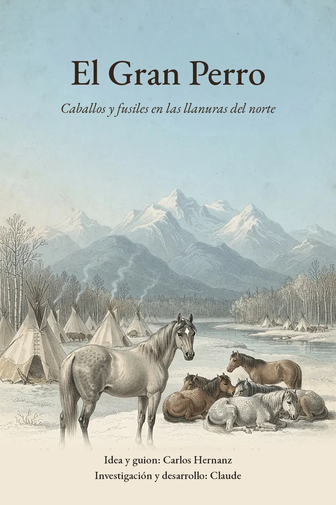
Prólogo
Hacia 1730, al pie de las Montañas Rocosas, dos ejércitos a pie se pasaron un día entero agachados detrás de sus escudos de cuero, disparándose flechas de piedra, sin que muriera nadie. Cincuenta años después, esos mismos pueblos cazaban a caballo, mataban con fusiles ingleses y morían por miles de una enfermedad que había subido desde México por el mismo camino que los caballos.
El primer libro de esta trilogía, «El perro sagrado», contó cómo llegó el caballo a las llanuras desde el sur, desde Nuevo México. Este cuenta lo que pasó cuando llegó al norte y se encontró con lo que venía desde el otro lado: los fusiles de la Compañía de la Bahía de Hudson, los comerciantes de San Luis, los americanos.
Lo cuentan dos hombres que no se conocen, o casi. Uno es real: David Thompson, el geógrafo que dibujó el mapa de medio Canadá, y que de viejo, ciego y pobre, escribió lo que le contó en el invierno de 1787 un anciano cree llamado Saukamappee. El otro es inventado: Luc, hijo de una esclava pawnee de San Luis de Ilinueses, que vio con nueve años el ataque a su pueblo y con treinta y cinco se fue río arriba con Lewis y Clark.
Casi todo lo que pasa a su alrededor ocurrió.
El Gran Perro
Longueuil, frente a Montreal, invierno de 1846 · y el río Bow, al pie de las Montañas Rocosas, otoño de 1787
Lo cuenta David Thompson
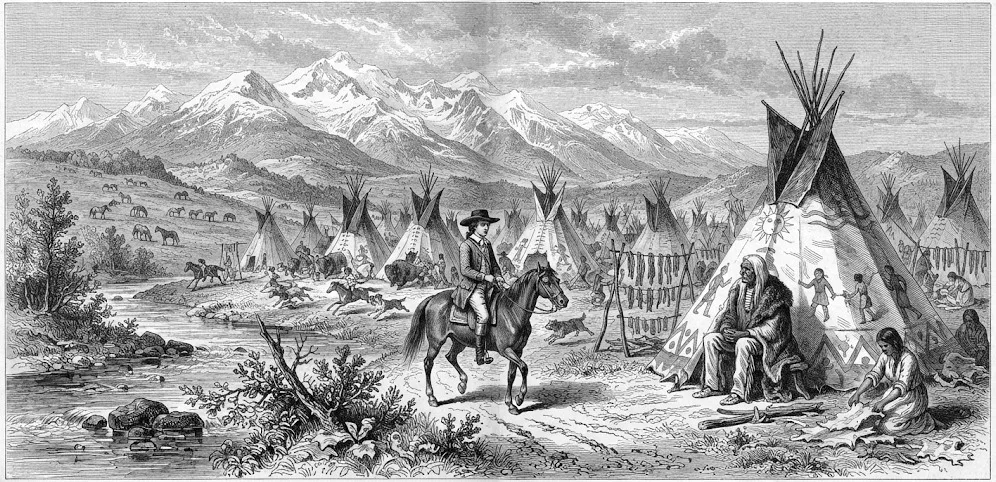
Ya no veo bien. Lo digo al principio para que quien lea esto sepa que lo escribo a tientas.
Del ojo derecho no veo nada desde hace más de cincuenta años, desde el invierno en que me rompí la pierna y me pasé meses tumbado, mirando el sol por la ventana de una casa de troncos para aprender a medirlo. El izquierdo se me apaga ahora, poco a poco, como una vela que se queda sin sebo. Escribo con la cara pegada al papel, con una lupa que me regaló un cura, a la luz de una ventana que da al río. Mi mujer me trae el té y me riñe porque no como. Tiene sesenta años, la piel morena de su madre cree y el pelo blanco, y lleva cuarenta y siete aguantándome. Ella sabe mejor que nadie lo que voy a contar, porque nació allí. Pero no sabe escribirlo, y yo sí. Por eso lo escribo yo.
Estamos en Longueuil, al otro lado del río de Montreal, en una casa que no es nuestra. No tenemos dinero. He medido y dibujado en mapas más de un millón de millas cuadradas de esta tierra, más que ningún hombre vivo, y he vendido el abrigo para comprar papel. Los señores de Londres se quedaron con mis mapas y les pusieron su nombre. No me quejo. Bueno, sí me quejo, pero no aquí. Aquí quiero contar otra cosa.
Quiero contar lo que me dijo un viejo.
Tenía diecisiete años y era aprendiz de la Compañía de la Bahía de Hudson. Había llegado a América con catorce, desde un colegio de caridad de Londres, el de la Casaca Gris, donde nos enseñaban a leer, a escribir, a contar y a temer a Dios, y de donde salíamos los pobres para ser marineros o escribientes. A mí me tocó escribiente en la bahía de Hudson, en un fuerte de piedra al borde de un mar que se helaba ocho meses al año. Allí aprendí a cazar perdices, a hablar un poco la lengua de los cree y a odiar a un jefe que nos trataba como a perros. Y a los tres años me mandaron al oeste.
En el verano de 1787 subimos por el río Saskatchewan en canoa, semanas y semanas remando contra la corriente, con los remeros franceses de Montreal cantando sus canciones de amor y de borrachera, hasta un puesto de troncos que se llamaba Manchester House. Era el último fuerte de la Compañía, en el borde de las praderas. Más allá ya no había blancos. Más allá estaban los que los cree llamaban «los de los mocasines negros», y nosotros, por traducirlo, pies negros. Y entre ellos, los más al sur y los más cerca de las montañas, los peeagan, que ellos llamaban piikani y que hoy en los libros llaman piegan.
La Compañía quería su comercio. Quería sus pieles de lobo y de zorro, su carne seca, su grasa para el invierno de los fuertes. Y para eso hacía falta que alguien fuera a sus campamentos, viviera con ellos, aprendiera su lengua y les convenciera de que llevaran las pieles a nuestro fuerte y no al de los canadienses de Montreal, que nos hacían la competencia río arriba con más aguardiente y menos escrúpulos.
Me eligieron a mí y a otros seis. Supongo que porque era joven, porque no tenía mujer, porque sabía escribir para dar cuenta de lo que viera, y porque si me moría no se perdía gran cosa.
Salimos a principios de octubre, a caballo.
Era la primera vez que montaba en un caballo de verdad. En Londres los había visto tirar de los carros de cerveza, enormes, peludos, con las patas como columnas. Estos no se parecían en nada. Eran pequeños, flacos, de cuello corto, de todos los colores, con las crines enredadas y unos ojos que te miraban de lado. No tenían herraduras. No sabían lo que era un bocado de hierro. Llevaban en la boca una cuerda de crin atada a la mandíbula, y los indios los guiaban con las rodillas. Me dieron uno bayo, viejo y paciente, y aun así me caí dos veces el primer día, para regocijo de nuestros guías.
Cabalgamos hacia el sudoeste durante muchos días por la pradera. No sé cómo describirla a quien no la haya visto. En el colegio nos enseñaban que la tierra era redonda, y yo lo creía porque lo decía el maestro. En la pradera lo vi. La hierba se iba en todas las direcciones hasta un borde perfectamente liso, igual que el mar desde la cubierta de un barco, y el cielo se curvaba encima de ella como una campana de cristal. Por las mañanas había escarcha. A mediodía el aire temblaba. Por las tardes el viento se levantaba del oeste y no paraba hasta la noche, y había días en que la hierba parecía de agua.
Y había bisontes. No cientos. No miles. Yo había leído en los libros la palabra «innumerable» y creía que era una manera de exagerar. Un día, desde lo alto de una loma, vi la pradera entera, hasta el horizonte, ennegrecida de bisontes, moviéndose despacio hacia el sur, con un ruido sordo que se oía desde una legua, y entendí que la palabra estaba bien empleada. Los guías se rieron de mi cara. Me dijeron que aquello no era nada. Que había que verlos en primavera.
Al cabo de dos semanas vimos las montañas. Primero fue una línea blanca, fina, en el borde del mundo, que yo tomé por nubes. Al día siguiente seguía allí. Al otro también. Y poco a poco fue creciendo, se fue haciendo gris y azul y blanca, con picos, con nieve, hasta llenar todo el poniente como un muro. Las Montañas de Piedra, las llamaban los cree. Yo me quedé mirándolas desde el caballo con la boca abierta, como un niño de la ciudad, que es lo que era.
Al pie de ellas, junto a un río de agua verde y fría que llamaban del Arco, porque en sus orillas crecían los arbustos de los que sacaban la madera para los arcos, estaba el campamento.
Nunca he olvidado la primera vista.
Doscientas tiendas, o más. Altas, blancas, de piel de bisonte curtida, con los palos asomando por arriba como los dedos de una mano abierta. Algunas estaban pintadas: soles, lunas, osos, nutrias, figuras de hombres a caballo, rayas rojas y negras alrededor del borde. Salía humo de todas. Se oían perros, cientos de perros, y niños, y una mujer que cantaba en algún sitio, y el ruido de un hacha. Había carne secándose en armazones de palos, roja y negra, en tiras largas, y pieles estiradas en el suelo, y mujeres de rodillas raspándolas.
Y alrededor de todo, en las lomas, en el valle del río, hasta donde llegaba la vista, caballos.
Eso es lo que más me impresionó entonces y lo que más recuerdo ahora. En la bahía de Hudson no había un solo caballo. En Manchester House había seis. Aquí había miles, sueltos, pastando en manadas, vigilados por muchachos a caballo que no tendrían ni doce años y que iban y venían al galope sin silla, gritando, colgándose del costado de sus caballos para recoger del suelo una cuerda o un palo, como yo había visto hacer en Londres a los volatineros de las ferias. Pensé: esta gente vive encima de los caballos. Y no me equivoqué.
Nos salieron a recibir. Primero los perros. Después los niños. Después los hombres, a caballo, en una carga que me heló la sangre hasta que vi que venían riendo y disparando al aire. Nos rodearon, nos miraron, nos tocaron la ropa y los botones. Uno me cogió el sombrero, se lo puso, y todos se rieron. Me lo devolvió. Yo también me reí, porque no sabía qué otra cosa hacer, y eso, según supe después, les gustó.
El jefe de la partida nuestra habló con el jefe de ellos. No entendí nada. Hablaban la lengua de los pies negros, que no se parece en nada a la de los cree, aunque las dos son de la misma familia según dicen los sabios. Después el jefe se volvió, me señaló a mí, y dijo algo. Nuestro guía me lo tradujo.
Me iban a alojar en la tienda de un viejo que hablaba cree.
Se llamaba Saukamappee.
En cree quiere decir Hombre Joven, y eso ya me hizo gracia, porque cuando lo vi por primera vez, sentado a la puerta de su tienda al sol de la tarde, con una manta de bisonte sobre los hombros, me pareció el hombre más viejo que había visto en mi vida. Luego supe que tendría unos setenta y cinco u ochenta años. Era muy alto, más que yo, aunque estaba un poco encorvado, y muy flaco, con la cara llena de arrugas como una manzana de invierno y el pelo blanco, largo, suelto sobre la espalda. Tenía las manos grandes y nudosas, y una cicatriz vieja en el antebrazo izquierdo, blanca, como de un tajo.
Me miró de arriba abajo. Me miró las botas, los botones de la chaqueta, la cara. Después me dijo, en cree:
—Eres muy joven para estar tan lejos.
Le contesté, en mi cree de fuerte, que tenía diecisiete años.
—A tu edad yo también vine de lejos —dijo—. Y me quedé.
Y se levantó y apartó la piel de la puerta para que entrara.
La tienda era grande, más grande por dentro de lo que parecía por fuera, de doce o catorce pieles cosidas. Tenía el fuego en el centro, en un hoyo rodeado de piedras, y alrededor, contra las paredes, las camas: pieles de bisonte apiladas sobre ramas de pino, con respaldos de varas trenzadas para recostarse. Del techo colgaban bolsas de cuero pintado, una pierna de bisonte seca, un manojo de hierba dulce, un escudo redondo envuelto en una funda. Olía a humo, a grasa, a cuero y a esa hierba dulce, un olor que todavía hoy, cuando lo encuentro en alguna parte, me devuelve allí de golpe.
Vivían con él su mujer, una vieja menuda y callada que me puso delante un cuenco de carne cocida antes de que me sentara, y una nieta viuda con dos niños pequeños. A los hijos los había perdido. No me dijo cómo, y yo no lo pregunté. No hacía falta. Lo supe después.
Aquella noche cenamos lengua de bisonte, que es lo más tierno que he comido nunca, y carne de la joroba asada en palos, y una pasta de carne machacada con grasa y bayas que llaman pimiy en cree y que nosotros llamamos pemmican y que es lo mejor que hay para el invierno. Después el viejo llenó una pipa de piedra negra, la encendió con una brasa, ofreció el humo al cielo, a la tierra y a las cuatro direcciones, fumó, y me la pasó. Yo no fumaba. Fumé. Tosí. Los niños se rieron. El viejo no.
Después estuvo un rato callado, mirando el fuego. Y luego me preguntó por qué los blancos querían tanto las pieles de castor.
Se lo expliqué como pude. Que en Europa los señores llevaban sombreros, y que los mejores sombreros se hacían con el pelo fino de debajo de la piel del castor, prensado hasta hacer un fieltro que no se deformaba con la lluvia. Que un sombrero de castor valía en Londres lo que un caballo aquí. Que había ciudades enteras de sombrereros.
El viejo lo escuchó muy serio.
—Entonces —dijo— vosotros venís desde el otro lado del agua grande, en canoas grandes como islas, y subís por los ríos durante meses, y os morís de frío en vuestros fuertes, para llevaros pieles de castor para que los hombres de vuestra tierra se tapen la cabeza.
—Sí.
Se quedó pensando.
—Nosotros no comemos castor —dijo—. El castor es como una persona. Tiene casa, tiene familia, trabaja. Antes, cuando éramos pobres, sí lo comíamos. Ahora no hace falta.
—¿Antes de qué? —le pregunté.
Me miró por encima del fuego.
—Antes del Gran Perro.
No entendí. Pensé que me había equivocado de palabra, que mi cree no daba para tanto. Le pregunté qué perro.
El viejo se rio. Fue la primera vez que lo vi reírse, una risa corta, sin dientes casi, que le salía más por la nariz que por la boca.
—El que tienes ahí fuera —me dijo—. El que te ha traído. Así lo llamamos cuando lo vimos por primera vez. Porque nos servía como el perro, que lleva las cosas, pero era grande. Un perro grande. Ahora los jóvenes lo llaman de otra manera y no se acuerdan de por qué. Pero yo me acuerdo.
—¿Usted vio el primer caballo?
—Vi el primero que vimos los de aquí. Estaba muerto. —Se tocó la cicatriz del brazo, sin darse cuenta—. Pero eso es una historia larga, y tú tienes que dormir, que mañana te van a enseñar a montar los niños y te vas a caer muchas veces.
Me caí muchas veces, en efecto.
Me quedé en aquella tienda todo el invierno. Desde octubre hasta la primavera.
Aprendí más en esos meses que en todos los años de colegio. Aprendí a hablar la lengua de los piegan lo bastante como para comprar, vender y no ofender a nadie. Aprendí a montar sin silla y a no caerme, o a caerme sin romperme nada. Aprendí a cazar bisontes a caballo, o a mirar cómo los cazaban otros, que para un aprendiz de escribiente era bastante. Aprendí a dormir con un frío que helaba la tinta en el tintero y que me obligaba a llevar la pluma dentro de la camisa. Aprendí a comer cuando había y a no quejarme cuando no.
Y aprendí a escuchar.
Porque las noches de invierno en la pradera son muy largas. Oscurece a media tarde y no amanece hasta media mañana, y en medio hay quince horas de frío, de viento y de fuego. En aquellas noches, en todas las tiendas del campamento, alguien contaba algo. Los viejos contaban. Los niños escuchaban. Los jóvenes hacían como que no escuchaban, y escuchaban.
En nuestra tienda contaba Saukamappee.
No contaba cuentos. Él decía que los cuentos eran para los niños y para las mujeres. Contaba lo que había visto. Su vida. Y su vida, me di cuenta muy pronto, era la historia entera de aquel pueblo en los últimos sesenta años: cómo habían pasado de andar a pie detrás de los bisontes, con los perros cargando las tiendas, a ser los señores a caballo de toda la pradera, desde el río del Arco hasta el Misuri. Y cómo, en mitad de todo aquello, había llegado una cosa que no tenía nombre y se lo había llevado casi todo.
Yo tenía un cuaderno. Lo tenía siempre, porque la Compañía me lo exigía. Apuntaba las distancias, los rumbos, las temperaturas, los nombres de los ríos. Por las noches, cuando el viejo hablaba, tenía la tentación de apuntar también lo que decía. No lo hice. No sé por qué. Quizá porque me parecía una descortesía, como apuntar lo que te dice tu abuelo. Quizá porque pensé que me acordaría.
Me he acordado. Casi sesenta años. Y ahora, que ya no veo, lo escribo.
Una cosa más, antes de empezar con lo que me contó.
Una noche, ya entrado el invierno, con la nieve hasta las rodillas fuera de la tienda y el viento silbando entre los palos, le pregunté al viejo de dónde habían venido los caballos. No el primero, el muerto. Todos. De dónde.
Saukamappee se encogió de hombros.
—Del sur —dijo—. De muy lejos, del sur. De donde vienen los snakes. Los snakes los tenían antes que nadie. Y a los snakes se los daban otros, más al sur. Y a esos, otros. Dicen que al final de todo, donde ya no hay invierno, hay hombres blancos como tú, pero que no hablan como tú, y que tienen casas de piedra y más caballos que bisontes hay en la pradera. Yo no lo creo. Pero lo dicen.
Yo sí lo creí, porque lo sabía. Le dije que eran españoles. Que tenían ciudades en un sitio que llamaban Nuevo México, al sur, más allá de mil millas, y que de ellos venían seguramente todos aquellos caballos.
El viejo lo pensó un rato.
—Españoles —repitió, probando la palabra—. Entonces, de los españoles vino también lo otro.
—¿Lo otro?
No me contestó aquella noche. Me lo contó mucho después, ya muy entrado el invierno, y lo contaré a su tiempo. Pero cuando lo dijo se tocó la cara, las mejillas, la frente, con la yema de los dedos, como quien busca algo que ya no está. Y yo me fijé, por primera vez, a la luz del fuego, en que tenía la piel de la cara llena de hoyos pequeños, redondos, pálidos, como si alguien la hubiera picado con la punta de un cuchillo.
Mi mujer acaba de entrar. Dice que ya no hay luz y que lo deje. Tiene razón. Mañana seguiré.
Pero antes quiero dejar escrito, por si no llego a mañana, que mi mujer se llama Charlotte Small, que su padre era escocés y su madre cree, y que nació en Île-à-la-Crosse, en el norte, en la tierra de los castores, y que me ha dado trece hijos y me ha seguido en canoa, a caballo y a pie por más ríos de los que caben en un mapa. Y que cuando le leí en voz alta, hace un rato, lo que acabo de escribir sobre el viejo, se quedó callada y luego me dijo, en cree:
—Mi abuela contaba lo mismo. Lo del perro grande.
Y se fue a encender la lámpara.
La torre
San Luis de Ilinueses, Alta Luisiana española · 26 de mayo de 1780
Luc
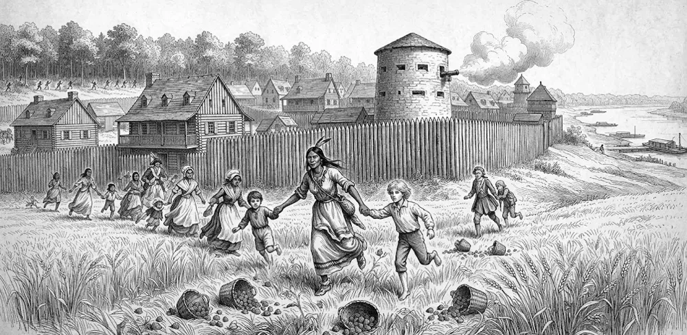
Las fresas salvajes maduraban a finales de mayo en los prados de detrás del pueblo, entre la última hilera de cercas y el bosque, y aquel año maduraron todas a la vez.
Luc lo sabía porque llevaba una semana vigilándolas. Tenía nueve años, o eso decía su madre, que no estaba segura del mes pero sí del invierno: había nacido el invierno en que se heló el río tan fuerte que los carros cruzaban a Cahokia sobre el hielo. Era flaco, moreno, con el pelo negro y liso de su madre y los ojos claros del hombre que su madre decía que era su padre, un remero de Montreal que se había ido río arriba con una canoa de la Compañía y no había vuelto. Su madre era panisa. Así llamaban en San Luis a todos los indios esclavos, fueran de donde fueran, porque al principio casi todos habían sido panis, pawnees, vendidos por los osages o por los comanches a los franceses en los puestos del río. Su madre sí era pawnee de verdad. Había llegado con doce años en una canoa, atada, y la había comprado madame Chouteau para la cocina. Ahora tenía veintitantos, seguía en la cocina, y Luc dormía en el desván, encima de los fogones, donde no hacía frío nunca.
Era jueves el día anterior, fiesta del Corpus. Había habido procesión, con el cura y el palio y los soldados del teniente gobernador con sus casacas azules y sus fusiles, y las mujeres habían echado pétalos por la calle Principal desde las galerías de las casas. Luc había ido detrás, con los otros chicos, a ver si caía algo de comer. Cayó poco.
El viernes, en cambio, el pueblo entero salió a los campos.
San Luis no era gran cosa. Lo sabía hasta Luc, que no conocía otro sitio. Unas trescientas casas, o menos, en tres calles largas paralelas al río, encima de un barranco de piedra caliza. Casas de troncos verticales clavados en el suelo, a la manera francesa, con el tejado muy inclinado y galerías alrededor para la sombra. Huertos detrás de cada casa, con cercas de estacas. La iglesia, de troncos también. El almacén de la Compañía. La casa del gobierno, que había sido de Laclède, el fundador, y ahora era de los españoles. Y abajo, en la orilla, el embarcadero, con las piraguas y las barcas de quilla amarradas, y el agua marrón del Misisipi pasando ancha y lenta, y enfrente, a lo lejos, la otra orilla, que era inglesa, o americana, o de quien fuera aquel año, porque los mayores se peleaban mucho por eso y Luc no lo entendía.
Detrás del pueblo estaban los campos comunes: tiras largas de tierra, una por familia, de trigo y de maíz, y más allá los pastos, y más allá el bosque. Los franceses llamaban a aquello la prairie. En mayo todo era verde y amarillo, y por las lindes, donde no llegaba el arado, salían las fresas.
Aquel viernes salió medio pueblo. Unos a escardar el maíz, otros a ver el trigo, las mujeres y los niños a las fresas, con cestos. Hacía calor y el cielo estaba blanco. Luc iba con su madre y con otras dos mujeres de la cocina de los Chouteau, y con Lambert.
Lambert era su amigo. Tenía doce años, era más alto, más fuerte y más rubio que nadie en San Luis porque su padre era un francés del norte, de Normandía, un tal Salé al que todos llamaban Lajoie porque se reía mucho. Y su madre era Marie Rose.
De Marie Rose se contaban cosas en el pueblo, y Luc las había oído todas en la cocina de los Chouteau, que era donde se oía todo. Que era española, de Nuevo México, de muy lejos, al otro lado de las llanuras. Que de niña, o de joven, ya casada, la habían raptado los comanches en un ataque a un pueblo español, que le habían matado al marido delante de ella, que la habían llevado a sus tiendas y la habían vendido a los panis. Que entre los panis la había encontrado Salé, que comerciaba con ellos, y se la había comprado, o la había rescatado, según quién lo contara. Que tenía otro hijo, Antoine, mayor que Lambert, que no era hijo de Salé sino de un comanche. Y que en su tierra había dejado más hijos, vivos, que no sabía dónde estaban.
Luc no sabía cuánto de aquello era verdad. Marie Rose no hablaba nunca de nada de eso. Era una mujer seria, alta, de piel más clara que la de su madre y más oscura que la de las francesas, con unas arrugas finas alrededor de los ojos y una manera de mirar a los niños, a todos los niños, como si contara cuántos había. Hablaba francés con un acento que no era de allí. Y cuando estaba sola en su huerto, a veces, cantaba en una lengua que nadie más entendía.
Lambert decía que era español. Luc le creía.
Estaban en la linde del bosque, con los cestos medio llenos y la boca roja, cuando se oyó el primer tiro.
No le dieron importancia. En San Luis se oían tiros todos los días: cazadores, soldados que limpiaban los fusiles, borrachos. Luc siguió cogiendo fresas. Lambert levantó la cabeza.
Se oyó el segundo. Y luego un grito.
Luc había oído gritar a mucha gente. A su madre, cuando se quemó con el aceite. A los remeros, cuando se peleaban. A una vaca, cuando la mataron. Aquel grito no se parecía a ninguno. Era un grito largo, muy agudo, que subía y bajaba, y no era de una persona sino de muchas a la vez, y venía del bosque.
Su madre se quedó blanca. Fue lo primero que Luc vio: que su madre, que era pawnee, que había crecido en un pueblo de tierra junto a un río de las llanuras, que había visto la guerra cuando era niña, reconocía aquel grito. Le cogió del brazo tan fuerte que le dejó las marcas de los dedos durante una semana, y le dijo en su lengua, que casi nunca usaba con él:
—Corre.
Y echaron a correr.
Del bosque salieron hombres.
Luc los vio un momento, por encima del hombro, mientras corría. Muchos. Más de los que había visto juntos nunca, ni en la procesión. Desnudos de cintura para arriba, pintados de negro y de rojo, con plumas en la cabeza y la cabeza rapada a un lado, corriendo entre el trigo con arcos y con fusiles y con hachas, dando aquel grito. Algunos llevaban una mano pintada de blanco en el pecho. Uno, delante, llevaba una casaca roja de soldado inglés abierta sobre la piel desnuda.
A la derecha, en el maíz, un hombre que escardaba se levantó con la azada en la mano, miró, y cayó hacia atrás sin un ruido. Luc no vio qué le había dado. Solo vio que cayó y que no se movió más.
Su madre corría. Las otras dos mujeres corrían. Lambert corría delante, más rápido que todos, y se paraba, y se volvía, y les gritaba que corrieran, y volvía a correr. Los cestos se quedaron en la hierba. Las fresas se quedaron en la hierba. Luc perdió un zapato y siguió con el pie descalzo sobre los rastrojos y no notó nada.
Había un camino entre los campos, de tierra apisonada, que llevaba hasta la cerca del pueblo, y en la cerca una puerta, y detrás de la puerta, a la derecha, en lo alto del terreno, la torre.
La torre la había hecho construir aquel invierno el teniente gobernador, don Fernando de Leyba.
Luc lo había visto hacerla. Todo el pueblo lo había visto, y todo el pueblo se había reído. Don Fernando era un español de Andalucía, delgado, amarillo, que tosía mucho y que había llegado hacía dos años con su mujer y sus dos hijas. La mujer se le había muerto el verano anterior. Desde entonces andaba más amarillo y tosía más, y se había empeñado en que los ingleses iban a atacar San Luis.
Nadie le creía. ¿Por qué iban a atacar los ingleses San Luis? San Luis era un pueblo de comerciantes de pieles. No tenía nada. No había más que veintitantos soldados y cuatro cañones viejos. Los ingleses estaban lejos, en el norte, en los Grandes Lagos, en Michilimackinac, en Detroit. Y además, decían los franceses del pueblo, España no estaba en guerra con nadie.
Pero sí estaba. Eso lo supieron después. España había entrado en la guerra el verano anterior, del lado de los franceses y de los americanos de las colonias rebeldes, contra los ingleses. Y en Nueva Orleans el gobernador Gálvez había salido con sus tropas a quitarles a los ingleses los fuertes del río, Manchac, Baton Rouge, Natchez, y los había tomado todos. Y los ingleses, en el norte, querían devolverle el golpe.
Don Fernando lo sabía porque se lo habían dicho los comerciantes que bajaban del norte. Y aquel invierno, con el dinero que tenía y con el que pidió prestado a los vecinos, que no se lo querían dar, mandó levantar una torre redonda de piedra en lo alto del pueblo, de unos treinta pies de ancho, con troneras, y subir arriba los cinco cañones que había. La llamó torre de San Carlos, por el rey. Y en mayo, cuando llegaron noticias de que bajaba por el río una partida grande de indios del norte con comerciantes ingleses al frente, mandó cavar trincheras alrededor del pueblo y llamó a todos los hombres a las armas.
Los franceses refunfuñaron. Cavaron. Algunos se fueron a cazar.
Y aquel viernes, con medio pueblo en los campos, no había nadie en las trincheras.
Luc llegó a la puerta de la cerca sin aliento, con el pie sangrando, detrás de Lambert y delante de su madre.
En la puerta había un soldado. Español, con casaca azul, con el fusil en la mano, gritando algo que Luc no entendió. Los dejó pasar. Detrás venían más: mujeres con niños en brazos, hombres sin sombrero, un viejo al que llevaban entre dos. El soldado los empujaba hacia dentro. Detrás de todos, en el camino, se veía a los pintados correr.
Entonces la torre disparó.
Luc no había oído nunca un cañón tan cerca. Fue como si el suelo saltara. Luego otro. Luego otro. Por encima de su cabeza, desde lo alto de la torre, salía humo blanco a borbotones, y el ruido le golpeaba en el pecho y en los dientes, y en el camino, abajo, los pintados que venían delante se tiraron al suelo, o cayeron, o se dieron la vuelta. Un caballo sin jinete pasó al galope.
—¡A la trinchera! —gritaba alguien en francés—. ¡Todos los hombres a la trinchera!
Su madre le cogió de la mano y lo arrastró calle abajo, hacia la casa de los Chouteau, que era de piedra y tenía el sótano hondo, donde guardaban las pieles. En la calle había gente corriendo en todas direcciones. Mujeres llorando. Un perro ladrando sin parar. El cura en la puerta de la iglesia, con la sotana remangada, metiendo dentro a los niños. Y hombres, franceses, con los fusiles de caza, corriendo hacia las trincheras de arriba. Entre ellos, Luc vio negros. Hombres negros, esclavos de los Chouteau, de los Labbadie, de los Cerré, a los que alguien había dado un fusil o un hacha y que corrían junto a sus amos hacia la trinchera. Y vio a uno, libre, al que conocía, que era herrero y se llamaba Jean-Baptiste, con un martillo en la mano.
En la casa de los Chouteau, madame Chouteau, la vieja, con su vestido negro y su cruz, estaba en lo alto de la escalera del sótano contando gente. Les hizo bajar. Abajo, entre las pacas de pieles de ciervo y de castor, había ya treinta personas, a oscuras, oliendo a cuero, sudor y miedo. Una niña lloraba. Su madre le tapaba la boca.
Luc se sentó en el suelo, en un rincón, al lado de su madre, y se dio cuenta de que no estaba Lambert.
Lambert había ido a buscar a su madre.
Luc lo supo después, porque se lo contó el propio Lambert. Marie Rose no había ido a las fresas. Estaba en su huerto, en la parte alta del pueblo, cerca de la cerca, la más expuesta, cuando empezó todo. Lambert había corrido hasta su casa por la calle de arriba, con los cañones disparando encima de su cabeza, y la había encontrado en la puerta del huerto, de pie, mirando hacia los campos.
—No se movía —le contó Lambert a Luc, días después, sentados en el barranco del río—. Estaba quieta. Mirando. Le grité y no me oía. La cogí del brazo y no se movía. Y le vi la cara.
—¿Qué cara?
Lambert tardó en contestar.
—Como si ya lo hubiera visto antes —dijo.
Al final, Marie Rose se dio la vuelta, cogió a su hijo de la mano y se metió con él en la casa, cerró la puerta, la atrancó, y se sentó en el suelo detrás de ella con un cuchillo de cocina en la mano. Y allí se quedó, toda la tarde, sin hablar, sin llorar, con el cuchillo, mientras fuera sonaban los cañones y los gritos.
—Me dijo una cosa —dijo Lambert—. Solo una. Me dijo: «Esta vez no».
El ataque duró hasta la noche.
Desde el sótano, Luc no vio nada. Solo oyó. Los cañones de la torre, cada poco, sacudiendo el suelo. Los tiros de fusil, sueltos, a veces muchos juntos. Los gritos de fuera, el grito largo y agudo, más cerca, más lejos. Una vez, muy cerca, encima de ellos, pasos corriendo por la galería de la casa, y todo el mundo contuvo la respiración, y los pasos se fueron. Una vez, una campana. Una vez, silencio, durante tanto rato que alguien dijo que ya se habían ido, y entonces volvió a sonar el cañón.
Hacía calor. No había agua. La niña se durmió. Su madre no soltó la mano de Luc ni un momento. Hacia el final, cuando por el ventanuco del sótano ya no entraba luz, le dijo en voz muy baja, en pawnee, algo que Luc no había oído nunca:
—Cuando yo tenía tu edad, vinieron a mi pueblo así.
—¿Quiénes?
—Otros. —Se encogió de hombros en la oscuridad—. Siempre vienen otros.
Y no dijo nada más.
Al amanecer, los pintados se habían ido.
Salieron del sótano parpadeando, con la boca seca, y el pueblo estaba entero. Las casas, la iglesia, la torre, los huertos. Nadie había entrado. Los indios del norte no se habían atrevido a cruzar las trincheras con los cañones disparando desde arriba. Habían rodeado el pueblo, habían gritado, habían disparado desde lejos, y al caer la noche se habían retirado hacia el norte, hacia el río.
Pero en los campos era otra cosa.
Luc subió con los demás a la cerca, por la mañana, y miró. Y no ha olvidado nunca lo que vio. Las tiras de trigo pisoteadas. Las vacas muertas, hinchadas, con flechas. Los cestos de fresas tirados en la hierba, donde los habían dejado. Y los hombres, los que se habían quedado fuera, los que no habían llegado a la cerca: tumbados entre el maíz, en el camino, en la linde del bosque. Los de la trinchera salieron con sábanas a recogerlos. Luc vio cómo traían al hombre de la azada. Le habían quitado el pelo de la cabeza, la piel con el pelo, en redondo, y la cabeza estaba roja y blanca.
Fueron veintitantos los muertos, contaron luego. Y cerca de cincuenta los que se llevaron, hombres, mujeres, niños, negros y blancos, hacia el norte, cautivos. Algunos volvieron años después. Otros no volvieron nunca.
Don Fernando de Leyba murió un mes después, el 28 de junio, en su cama, de la tos y de la fiebre.
Se murió sin que nadie en el pueblo le diera las gracias. Al contrario. Los franceses decían que había sido un cobarde, que se había encerrado en la torre en vez de salir a los campos a defender a la gente, que la culpa de los muertos era suya por no haber avisado, que había tenido a los soldados quietos mientras a los vecinos los mataban. Escribieron cartas a Nueva Orleans quejándose. Luc oyó todo eso en la cocina, y lo creyó, porque lo decían los mayores.
Años después, ya hombre, pensó de otra manera. Pensó que sin aquella torre de la que todos se reían, sin aquellos cinco cañones que el gobernador había subido a lo alto con un dinero que no tenía, sin aquellas trincheras que los vecinos cavaron refunfuñando, no habría quedado nadie en San Luis para quejarse. Y pensó que el gobernador lo sabía, y que había muerto sabiéndolo, y que eso también era una manera de ganar.
Pero entonces tenía nueve años y se le había infectado el pie, y su madre se lo curaba cada noche con grasa de oso y una hierba que traía del bosque, y él no podía pensar en otra cosa que en que no le dejaban bajar al río.
Una tarde de junio, con el pie ya casi curado, Lambert vino a buscarlo y lo llevó al barranco, a un sitio desde donde se veía todo el río y la otra orilla, y le contó lo de su madre y el cuchillo.
Estuvieron un rato callados, mirando pasar las barcas.
—¿Es verdad lo que dicen? —le preguntó Luc al fin—. ¿Que a tu madre la raptaron los comanches?
Lambert asintió.
—¿Y que tiene más hijos en su tierra?
—Uno. —Lambert tiró una piedra al río—. Por lo menos uno. Un niño. Lo dejó allí. Lo tenía en brazos cuando entraron, y se lo quitaron, y no sabe si lo mataron o qué. Me lo dijo una vez. Solo una vez. Se llamaba José.
Luc no supo qué decir. Pensó en su madre, en el sótano, diciendo «siempre vienen otros».
—Algún día iré a buscarlo —dijo Lambert—. A Nuevo México. Iré con los comerciantes. Dicen que hay un camino por las llanuras, por el río de los Arcos, hasta Santa Fe. Que los españoles no dejan pasar a nadie, pero que hay un camino.
—¿Y si está muerto?
Lambert se encogió de hombros.
—Entonces se lo diré a mi madre. Para que no lo cuente más.
Abajo, en el río, una piragua larga, cargada de pieles, bajaba con la corriente desde el norte, desde el Misuri. Iban en ella seis remeros, cantando. Luc los miró y pensó, como pensaba siempre que veía bajar una piragua, si alguno de ellos sería su padre.
Ninguno lo era.
Detrás de los escudos
El río Bow, invierno de 1787 · lo que contó Saukamappee de hacia 1730
Lo cuenta David Thompson
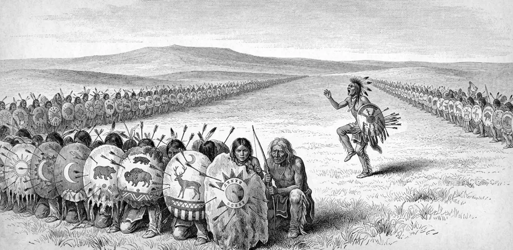
Empezó a contar una noche de noviembre en que no se podía salir de la tienda.
Llevaba tres días soplando un viento del norte que no dejaba ver la tienda de al lado. La nieve entraba por todas partes, por debajo de las pieles, por el agujero del humo, y se derretía junto al fuego y volvía a helarse en cuanto se apartaba uno un palmo. Los perros dormían dentro, apelotonados contra nosotros. Los caballos, fuera, se juntaban en la hondonada del río, de espaldas al viento, con la cabeza baja, y por las mañanas los muchachos salían a romperles el hielo de los ollares. No había nada que hacer más que comer, dormir y escuchar.
El viejo estaba sentado en su sitio, el de enfrente de la puerta, que es el del dueño de la tienda, con la manta sobre los hombros y la pipa apagada en la mano. Llevaba un rato callado. Su mujer cosía unos mocasines. Los niños de la nieta jugaban con unos huesos. Yo intentaba escribir en mi cuaderno, con la tinta espesa del frío.
—Tú escribes lo que ves —me dijo de pronto—. Los ríos, las montañas.
—Sí.
—¿Y lo que oyes?
Le dije que no. Que la Compañía solo quería saber de ríos, distancias y pieles.
—Entonces no escribas esto —dijo—. Esto escúchalo.
Y empezó.
—Yo no nací aquí. Ya te lo dije. Nací entre los nahathaway, los que vosotros llamáis cree, más al este y más al norte, donde hay más bosque y más agua y menos hierba. Mi padre era un hombre importante. No un jefe, pero un hombre al que escuchaban.
»Cuando yo tenía más o menos tu edad, un poco menos, vinieron mensajeros de los peeagan a nuestro campamento. Los peeagan eran amigos nuestros. Nosotros les dábamos cosas de los blancos, cuchillos, hachas, puntas de hierro, que nos daban a nosotros en los fuertes de la bahía a cambio de pieles, y ellos nos daban carne y pieles de bisonte, que en el bosque no hay. Y los mensajeros dijeron que los snakes les estaban echando de sus tierras. Que eran muchos y fuertes y que venían del sur cada verano y que les quitaban los mejores sitios de caza. Y pidieron ayuda.
»Mi padre reunió unos veinte guerreros y se fue con ellos. Y me llevó a mí. Yo no tenía más que un arco, unas pocas flechas y un cuchillo de hierro que me había dado él. Estaba muy contento. Pensaba que iba a matar a muchos enemigos y que volvería con un nombre nuevo.
Se rio con aquella risa suya por la nariz.
—No maté a nadie. Nadie mató a nadie.
Me contó el viaje. Muchos días a pie, hacia el sudoeste, primero por el bosque y luego por la pradera, con los perros cargando las cosas en unas parihuelas de palos atadas al lomo. Así se viajaba entonces, me dijo. A pie. Todos, hombres, mujeres, niños. Los perros llevaban las tiendas, pero las tiendas eran pequeñas, porque un perro no puede llevar más que unos pocos palos y una piel o dos. Y no se podía ir lejos ni deprisa. Y cuando se movía el campamento se movía muy despacio, y los viejos que no podían andar se quedaban atrás.
—Se quedaban atrás —repitió, y no dijo más de eso.
Llegaron al campamento de los peeagan. Era grande, me dijo, pero no como este. Tiendas pequeñas, bajas, muy juntas. Mucha gente. Hambre. Los snakes les habían quitado los mejores valles, los de cerca de las montañas, donde los bisontes pasaban el invierno, y los peeagan se habían tenido que ir a la pradera abierta, donde el viento era peor y la caza más difícil.
Los peeagan recibieron muy bien a los cree. Les dieron de comer lo poco que había. Hicieron fiesta. Contaron a sus guerreros y dijeron que estaban listos.
Y salieron a buscar a los snakes.
—Los encontramos al cabo de unos días —dijo el viejo—. En una llanura grande, con una loma al fondo. Ellos nos habían visto antes y nos estaban esperando.
»Nosotros éramos muchos. Los peeagan y nosotros, los cree, y algunos de los otros pies negros que también vinieron. Ellos eran muchos también. Más o menos igual. Yo nunca había visto tanta gente junta. Cuento ahora, de viejo, y digo que serían unos trescientos cincuenta de cada lado. Entonces me parecieron miles.
»Nos pusimos en fila. Una fila larga, de un lado a otro de la llanura. Y ellos igual, enfrente, a la distancia que llega una flecha, un poco más. Y entonces cada hombre se agachó detrás de su escudo.
Se levantó, con dificultad, apoyándose en mi hombro. Fue hasta la pared de la tienda, descolgó la bolsa redonda que yo había visto el primer día y le quitó la funda de piel. Dentro había un escudo.
Era enorme. Casi tan ancho como un barril, redondo, de piel de bisonte de varias capas, gruesa como un dedo, endurecida al fuego hasta quedar como una tabla. Por delante estaba pintado: un círculo rojo, y dentro una figura negra que no supe si era un oso o un hombre, y alrededor del borde plumas de águila colgando, viejas, rotas. Pesaba mucho. Lo sujeté y se me fue el brazo.
—Este era de mi suegro —dijo el viejo—. Entonces todos llevábamos uno así. Los de los snakes eran iguales. Te agachabas detrás y te tapaba entero. Así. —Se agachó, todo lo que le dejaban las rodillas—. Y las flechas venían, y se clavaban, y no pasaban.
—Estuvimos así todo el día.
»Ellos disparaban flechas. Nosotros disparábamos flechas. Las suyas tenían la punta de piedra, de pedernal, porque no tenían hierro. Las nuestras algunas de hierro, pocas. Se clavaban en los escudos, tac, tac, tac, y los escudos parecían puercoespines. A veces alguno asomaba un brazo, o una pierna, o la cabeza para mirar, y le daban. Así que había heridos. Algunos. Uno, a mi lado, con una flecha en el muslo, que se la sacó él mismo y se puso a cantar. Pero nadie se moría.
»De vez en cuando, un hombre de un lado se levantaba, salía de detrás del escudo, y gritaba cosas al otro lado. Que eran unos cobardes. Que sus mujeres eran feas. Que se iban a comer sus corazones. Y bailaba un poco, y enseñaba el culo, y volvía corriendo a su escudo con las flechas silbándole alrededor. Y todos gritaban y se reían. Yo también.
»Así se hacía la guerra entonces. Te ponías enfrente. Te tapabas. Disparabas. Insultabas. Y al final del día, cuando empezaba a oscurecer, los dos lados recogían sus flechas, las que se podían recoger, y sus heridos, y se iban a sus campamentos. Y los dos decían que habían ganado.
Se quedó un rato callado, con el escudo en el regazo, pasando la mano por las plumas rotas.
—Esa noche, en el campamento, hubo fiesta. Cantamos. Contamos lo valientes que habíamos sido. Yo conté que había visto pasar una flecha a un dedo de mi oreja, y era verdad, y todos se rieron y me dieron palmadas. Nadie había muerto. Ni de los nuestros ni de los suyos. No había cabelleras que bailar. Pero había sido una gran batalla.
Me miró.
—Esa fue la última vez que se hizo así.
No contó más aquella noche. Volvió a colgar el escudo, se envolvió en la manta, se tumbó en su cama, y en un rato roncaba.
Yo no podía dormir. Me quedé despierto mirando el fuego, que la mujer del viejo había cubierto de ceniza para que durara hasta la mañana, y el resplandor rojo que salía por los bordes, y pensando.
Pensaba en Londres. En el colegio de la Casaca Gris, donde nos hacían leer a los historiadores romanos para aprender latín, y donde yo había leído batallas en las que morían veinte mil hombres en un día, en Cannas, en Farsalia. Pensaba en los soldados ingleses que había visto desfilar por Londres de pequeño, con sus casacas rojas y sus bayonetas, camino de las colonias rebeldes de América, de donde muchos no volvieron. Pensaba en la guerra que acababa de terminar entre Inglaterra y esas colonias, y en Francia, y en España, que se habían metido en ella, y en los miles de muertos de los que hablaban los periódicos que llegaban a la bahía con un año de retraso.
Y pensaba en aquella llanura, con setecientos hombres agachados detrás de sus escudos de piel todo un día, disparándose flechas de piedra e insultándose, y al final de la tarde recogiendo las flechas y volviendo a casa a cantar.
No sabía cuál de las dos cosas era más sensata.
Sí sabía, porque el viejo lo había dicho con aquella voz, que la segunda ya no existía.
A la mañana siguiente el viento había parado.
Salí de la tienda y el mundo estaba blanco y azul, inmóvil, con un frío que cortaba la cara. El sol estaba bajo, pequeño, sin calor, y a cada lado tenía otro sol, falso, hecho de luz, y un arco alrededor de los tres, como un halo. Los piegan lo llaman «el sol se ha pintado la cara», y dicen que trae más frío. Tenían razón.
En la hondonada del río, los caballos empezaban a moverse, escarbando la nieve con los cascos para llegar a la hierba seca de debajo. Los muchachos iban entre ellos, a pie, con cuidado, rompiéndoles el hielo de los ollares y de las pestañas con la mano. Uno de ellos me vio y me hizo señas para que bajara. Bajé.
Me dio un palo y me enseñó cómo se hacía. Al caballo había que hablarle primero, despacio, y acercarse por el lado izquierdo, y pasarle la mano por el cuello, y luego, con el palo, romper el hielo que se le formaba en la nariz con el aliento, que si no lo rompías se ahogaba. Lo hice. El caballo, un pinto pequeño, blanco y negro, me miró con un ojo que tenía el borde blanco, y resopló, y me echó el aliento caliente en la mano.
Me quedé allí mucho rato, entre los caballos, en la nieve, sin notar el frío.
Pensaba en que el viejo había dicho que en aquella batalla, la de los escudos, ninguno de los dos bandos tenía caballos. Ni uno. Que los snakes empezaron a tenerlos poco después, del sur, y que los peeagan no los tuvieron hasta mucho más tarde. Y que entre una cosa y otra, entre aquel día de flechas y risas y el día en que yo llegué y vi miles de caballos pastando alrededor del campamento, habían pasado cincuenta y tantos años.
Es decir: la vida de un hombre.
La vida de aquel hombre, que roncaba en la tienda.
Esa noche le pregunté qué había pasado después de la batalla de los escudos. Si se había vuelto con su padre a su tierra.
—Mi padre sí —dijo—. Yo también, al principio. Pero no me quedé.
—¿Por qué?
Fumó un rato antes de contestar.
—Porque allí la muchacha que me esperaba ya era de otro. Se la habían dado a un hombre mayor, con más pieles que yo, mientras yo jugaba a la guerra con los escudos. —Miró a su mujer, que cosía, y la vieja levantó los ojos y le devolvió la mirada, y él sonrió un poco—. Y aquí el jefe de los peeagan tenía una hija.
La vieja bufó y siguió cosiendo. Los niños se rieron.
—No esta —añadió el viejo, señalándola con la barbilla—. Esta es la segunda. La primera ya no está. Pero esa es otra historia, y no toca hoy.
—¿Y qué toca hoy?
Se encogió de hombros.
—Hoy toca la segunda batalla. La de los fusiles. Cuando ya no nos reímos.
Y contó.
Las vacas de Gálvez
San Luis y Nueva Orleans · enero-junio de 1781
Luc
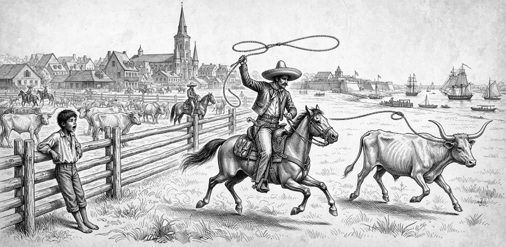
En enero de 1781 salieron de San Luis sesenta y tantos hombres a pie por la nieve, hacia el este, y el pueblo entero bajó a despedirlos al río helado.
Luc estaba allí, con los dedos de los pies metidos en unos mocasines viejos de Lambert rellenos de paja. Iban franceses de San Luis, milicianos, con sus fusiles de caza y sus capotes de lana, y unos cuantos soldados españoles, y muchos indios, potawatomis y otros de los lagos, que se habían pasado al lado de los españoles después del ataque de mayo. Al frente iba un capitán de milicias que se llamaba Eugène Pourré, un francés de nariz roja al que todos llamaban Beausoleil, y con él Charles Tayon, otro del pueblo. Llevaban una bandera española doblada en una mochila.
Iban a un fuerte inglés que se llamaba San José, a orillas de un lago, a casi doscientas leguas, en pleno invierno. Nadie entendía muy bien por qué. Los mayores decían que era para que los ingleses supieran que San Luis también sabía morder. Los más listos decían que era para que, cuando se acabara la guerra y los reyes se repartieran el mundo en Europa, el rey de España pudiera decir que sus soldados habían plantado la bandera allí, en el país de los Ilinueses, al este del gran río.
Volvieron en marzo, flacos, con la barba helada y sin un muerto. Habían llegado al fuerte, lo habían encontrado casi vacío, habían cogido lo que había, habían izado la bandera un día, la habían arriado al siguiente y habían vuelto. Beausoleil contó en la taberna, durante semanas, que había tomado él solo un fuerte inglés. Lambert y Luc se lo oyeron contar seis veces. Cada vez el fuerte era más grande.
En abril, madame Chouteau decidió que Luc tenía edad para trabajar de verdad y lo mandó río abajo.
Su madre lloró. No delante de madame, pero lloró, de noche, en la cocina, en silencio, mientras le cosía una camisa nueva con una tela de algodón azul que había guardado no se sabía cuánto tiempo. Luc fingía dormir en el desván y la oía. Por la mañana, ella le dio la camisa, un cuchillo pequeño en una vaina de cuero que había hecho ella misma, adornada con púas de puercoespín teñidas de rojo, y una bolsita de piel con algo dentro que no le dijo qué era.
—No la abras —le dijo—. Llévala.
Era una barca de quilla de los Chouteau, larga, de fondo plano, cargada hasta la borda de pieles: castor, nutria, ciervo, oso, bisonte. Iban doce remeros, un patrón, un empleado de la casa con los papeles y Luc, que tenía que hacer de todo lo que nadie quería hacer: achicar agua, cocinar, lavar, vigilar de noche, y aguantar los golpes en la cabeza de los remeros cuando hacía alguna de esas cosas mal. Bajaron por el Misisipi con la corriente de la primavera, que era alta y rápida y llevaba árboles enteros arrancados de las orillas, dando vueltas, con las raíces al aire como manos.
Tardaron tres semanas.
Luc no había visto nunca nada más allá de San Luis. Aquellas tres semanas vio el mundo. Vio la desembocadura del Ohio, un río tan ancho como el Misisipi que llegaba del este con el agua verde y se juntaba con la marrón sin mezclarse, las dos corrientes una al lado de la otra durante leguas. Vio bosques que no se acababan nunca, de árboles tan altos que no se les veía la copa, colgando de musgo gris. Vio caimanes, al principio uno, luego muchos, tomando el sol en los bancos de arena, inmóviles como troncos, hasta que se movían. Vio el fuerte de Natchez en lo alto de un barranco, con una bandera española nueva, porque se lo habían quitado a los ingleses hacía poco. Y vio Baton Rouge, con las murallas de tierra todavía rotas de los cañonazos de Gálvez, y soldados españoles, con casaca blanca y vueltas azules, sentados en ellas fumando.
Los remeros le contaban lo que había pasado allí. Que en septiembre de 1779 Gálvez había salido de Nueva Orleans con un ejército que no era un ejército: soldados españoles, milicianos de la Luisiana, cazadores franceses, negros libres, indios choctaws, unos cuantos americanos de las colonias rebeldes, todo junto. Que había ido subiendo por el río tomando los fuertes ingleses uno a uno. Que en Baton Rouge los ingleses tenían un fuerte con foso, empalizada y cañones, y que Gálvez, en vez de atacar por donde lo esperaban, había mandado a unos cuantos hombres hacer ruido toda la noche en un bosque, por un lado, para que los ingleses dispararan allí, mientras él montaba los cañones por el otro. Y que al amanecer había empezado a disparar, y a las tres horas los ingleses habían sacado la bandera blanca.
—Ese Gálvez es un demonio —dijo el patrón, que era de Nueva Orleans y lo conocía—. Tiene treinta y pocos años y no le tiene miedo a nada. Ni a los ingleses, ni al mar, ni al rey.
—¿Por qué al rey?
—Porque el rey está muy lejos —dijo el patrón, y escupió al agua.
Nueva Orleans olía a todo.
Fue lo primero que pensó Luc cuando la barca entró en el último recodo del río y vio la ciudad. Antes de verla la olió. Olía a barro, a río, a pescado podrido, a humo, a especias que no conocía, a café, a azúcar quemado, a mierda de caballo, a flores. Era la ciudad más grande que había visto nunca: tres o cuatro mil personas, le dijeron, o más. Las casas eran de madera y de ladrillo, con tejados de tejas, con balcones de hierro, pintadas de colores, amarillo, rosa, azul. Había una plaza de armas enorme, delante del río, con la iglesia de un lado y la casa del gobierno del otro, y en la plaza, soldados. Muchos soldados.
Y vacas.
Luc no había visto nunca tantas vacas juntas. Ni siquiera había imaginado que hubiera tantas vacas en el mundo. Estaban fuera de la ciudad, en los prados de detrás, entre la ciudad y el lago, encerradas en corrales hechos de troncos y de cuerdas: cientos y cientos, flacas, de cuernos larguísimos, abiertos como brazos, de colores raros, rojizas, moteadas, negras con manchas blancas. No se parecían en nada a las vacas de San Luis, que eran pequeñas, mansas y lecheras. Estas tenían los ojos salvajes, mugían todo el tiempo, y cuando alguien se acercaba a la cerca bajaban la cabeza y enseñaban los cuernos.
Y alrededor de ellas, a caballo, unos hombres que Luc no había visto nunca.
Se llamaban vaqueros. Eran de Texas.
Luc fue a verlos todas las tardes que pudo escaparse de la barca. Eran morenos, flacos, con la cara curtida como cuero viejo, y llevaban sombreros de ala ancha, de fieltro o de paja, chaquetas cortas de cuero, pantalones abiertos por los lados con botones de plata, y unas botas de piel blanda atadas por debajo de la rodilla, y espuelas enormes, con rodajas como estrellas, que tintineaban al andar. Hablaban español, pero no el español de los soldados ni el de los funcionarios de Nueva Orleans. Hablaban un español más cantado, más rápido, con palabras que nadie entendía.
Y montaban. Dios, cómo montaban.
Sus caballos eran pequeños, como los que traían a veces a San Luis los osages, pero mejores: más finos de patas, de cabeza más corta, nerviosos. Las sillas eran grandes, de cuero, con un pomo alto delante y un respaldo detrás, con estribos de madera tallada cubiertos por delante de cuero para no engancharse en los matorrales. Y del pomo llevaban colgada una cuerda larga, enrollada, de cuero trenzado, que llamaban reata, con un lazo en la punta.
La primera vez que Luc vio a uno lanzar el lazo se quedó con la boca abierta. Una vaca se había escapado del corral, una vaca grande, de cuernos negros, y corría hacia el bosque bramando. Un vaquero salió detrás de ella al galope, sin prisa, con la reata ya en la mano, girando el lazo por encima de la cabeza, abierto, ancho como una rueda de carro. Y cuando estuvo cerca, sin parar el caballo, lo soltó. El lazo voló por el aire, despacio, como si pensara, y cayó limpio sobre los cuernos. El vaquero dio una vuelta a la cuerda alrededor del pomo de la silla, el caballo se sentó sobre las patas de atrás, y la vaca, que pesaba tres veces más que el caballo, dio una voltereta en el aire y cayó de espaldas.
Los otros vaqueros aplaudieron. El del lazo se quitó el sombrero.
Luc decidió en ese momento que de mayor quería ser vaquero.
Uno de ellos le hizo caso. Se llamaba Ignacio, era de un sitio que se llamaba La Bahía del Espíritu Santo, junto al mar de Texas, y tendría unos veinte años. Era el más joven de los vaqueros y el que más hablaba. Le enseñó a Luc a hacer un nudo de lazo, a enrollar la reata, a acercarse a un caballo sin que se espantara. Le dejó subirse a su caballo, un bayo con una mancha blanca en la frente, y llevarlo al paso alrededor del corral. Y le contó de dónde venían las vacas.
—De Texas —dijo—. De los ranchos de San Antonio y de La Bahía. Allí hay más vacas que gente. Más vacas que en ningún sitio del mundo. Muchas sin dueño, salvajes, en el monte. Mesteñas, las llamamos, como a los caballos.
»Y el gobernador de aquí, el señor Gálvez, que necesita carne para los soldados de su guerra, le escribió al gobernador de Texas, el señor Cabello, y le pidió vacas. Muchas. Y el señor Cabello nos mandó a nosotros a juntarlas y a traerlas.
—¿Desde Texas? —Luc no tenía idea de dónde estaba Texas, salvo que estaba lejos y al oeste.
—Desde San Antonio. Ciento y pico leguas. —Ignacio se rio—. Dos meses de camino, cruzando ríos, cruzando pantanos, cruzando el país de los indios. Las vacas se escapan, se ahogan, se pierden, se las comen los lobos, se las roban los indios. De cada diez que salen llegan seis o siete. Y luego llegamos aquí y nos pagan una miseria y nos tratan como a salvajes. Pero llegan.
—¿Cuántas?
Ignacio se encogió de hombros.
—Miles. Esta es la tercera vez que vengo. Dicen que el señor Gálvez ya se ha comido diez mil. Él y sus soldados.
Lo dijo con orgullo, como si hubiera sido él quien se las hubiera comido.
—¿Y los indios no os atacan? —le preguntó Luc una tarde.
Ignacio se quedó serio.
—A veces. Los de por allí, los del este de Texas, no mucho; son amigos, más o menos. Pero en San Antonio...
Se calló. Miró hacia el oeste, por encima de las vacas y de los árboles.
—En San Antonio están los comanches —dijo—. ¿Has oído hablar de los comanches?
Luc asintió. Pensó en Marie Rose, la madre de Lambert. Pensó en el cuchillo detrás de la puerta.
—Los comanches no quieren las vacas —dijo Ignacio—. No les gustan. Prefieren el bisonte. Lo que quieren son los caballos. Vienen de noche, cada luna llena, y se llevan los caballos de los ranchos, de las misiones, del presidio. A veces se llevan también gente. Niños. Mujeres. Se los llevan a sus tiendas y los crían como comanches, o los venden.
—Como a la madre de mi amigo —dijo Luc.
Ignacio lo miró.
—¿A tu amigo le raptaron a la madre?
—En Nuevo México. Hace mucho.
Ignacio se santiguó.
—En San Antonio tengo un primo —dijo— al que se llevaron con diez años. Hace tres. No sabemos nada de él. Mi tía va a la iglesia todos los días a encenderle una vela. Unos vuelven. Otros no.
Se quedó un rato callado. El bayo de la mancha blanca le empujó el hombro con el morro, buscando algo de comer.
—Este caballo —dijo Ignacio, rascándole la frente— se lo compré a un comanche. En una feria de paz, en San Antonio, hace dos años. El gobernador hace ferias así, de vez en cuando, para que no nos maten. Ellos traen caballos y pieles, y cautivos para rescatar, y nosotros les damos cuchillos, mantas, tabaco. Y durante unos días todos fingimos que somos amigos. Y este caballo me lo vendió un comanche joven, que se reía mucho, por un cuchillo y una manta. Y luego, a los tres meses, el mismo comanche, o su hermano, o su primo, se llevó del rancho de mi padre treinta caballos en una noche.
Se rio, sin ganas.
—Así es aquello —dijo—. Allí todo es así.
En mayo llegó la noticia de Panzacola.
Llegó en barco, por el lago, a media tarde, y antes de que anocheciera la sabía toda la ciudad. Gálvez había tomado Panzacola. La capital de los ingleses en la Florida, la ciudad fuerte del golfo, con su fuerte en lo alto de una loma y sus barcos y sus cañones. La había sitiado durante dos meses, con un ejército de miles de hombres traído en barcos desde La Habana y desde allí mismo, desde Nueva Orleans. Y al principio los capitanes de la flota no habían querido meter los barcos en la bahía, por miedo a los cañones del fuerte, y Gálvez se había metido él solo, en un bergantín pequeño, con la bandera izada y disparando una salva, por delante de las baterías inglesas, sin que le tocaran, y al día siguiente lo habían seguido todos. Y al final una bala de cañón española había entrado por la puerta del polvorín del fuerte inglés, y el polvorín había volado por los aires con cien hombres dentro, y los ingleses se habían rendido.
Las campanas de Nueva Orleans repicaron toda la noche. Hubo misa, cohetes, vino en la plaza. Los soldados cantaban. Los vaqueros cantaban. Ignacio se emborrachó y se cayó del caballo, y se volvió a subir, y se volvió a caer.
—¡Todo el golfo es español! —gritaba alguien—. ¡Todo! ¡Desde Texas hasta la Florida!
Luc lo celebró con todos, sin saber muy bien qué celebraba. Le dieron un trago de vino que le quemó la garganta y le hizo toser, y un trozo de carne asada de una de las vacas de Texas, dura como suela, y estaba sentado en el borde de la plaza, con la carne en la mano, mirando los cohetes, cuando sintió en el pecho la bolsita que le había dado su madre.
La abrió. Ya no aguantaba más.
Dentro había un mechón de pelo negro, atado con un hilo rojo. Y un trozo de concha, pequeño, blanco y rosa, gastado por los bordes, agujereado, como de un collar.
No supo lo que era. No se lo preguntó nunca a su madre. Lo guardó toda la vida.
Volvieron a San Luis en junio, río arriba, a remo y a sirga, tirando de la barca con cuerdas desde la orilla cuando la corriente era demasiado fuerte, con la barca cargada de azúcar, de café, de vino, de telas, de pólvora, de hachas y de cuchillos para los indios. Tardaron tres meses. A Luc le salieron callos en las manos que no se le quitaron nunca.
Por el camino, en cada puesto, en cada fuerte, en cada pueblo de la orilla, contaban lo de Panzacola. Y en cada sitio la historia de Gálvez y el bergantín era un poco más grande.
Cuando llegó a San Luis, a finales de septiembre, flaco, moreno como un indio, con la camisa azul hecha jirones, su madre estaba esperándolo en el embarcadero. Lo vio desde lejos. No dijo nada. Le cogió la cara con las dos manos y la miró mucho rato, como Marie Rose miraba a los niños, como si contara.
Después le preguntó, en pawnee, si había abierto la bolsa.
Él le dijo que sí.
Ella asintió, sin enfadarse.
—Era de mi madre —dijo—. Y el pelo es mío. De cuando me cortaron el pelo para venderme.
Y se volvió a la cocina.
Lambert le estaba esperando en el barranco, en su sitio, y Luc le contó todo: el río, los caimanes, los fuertes, las vacas, Panzacola, Gálvez en su bergantín. Y le contó lo de los vaqueros, y lo del lazo, y lo de Ignacio y su bayo de la mancha blanca, comprado a un comanche por un cuchillo y una manta.
—De mayor voy a ser vaquero —dijo Luc—. Voy a ir a Texas.
Lambert se quedó pensando.
—Texas está al lado de Nuevo México —dijo.
—No sé. Supongo.
—Entonces iremos juntos —dijo Lambert—. Tú a ser vaquero. Yo a buscar a mi hermano.
Y se dieron la mano, allí en el barranco, encima del río, como habían visto hacerlo a los hombres en la taberna cuando cerraban un trato.
Ninguno de los dos fue nunca a Texas.
Los fusiles
El río Bow, invierno de 1787 · lo que contó Saukamappee de unos años después
Lo cuenta David Thompson
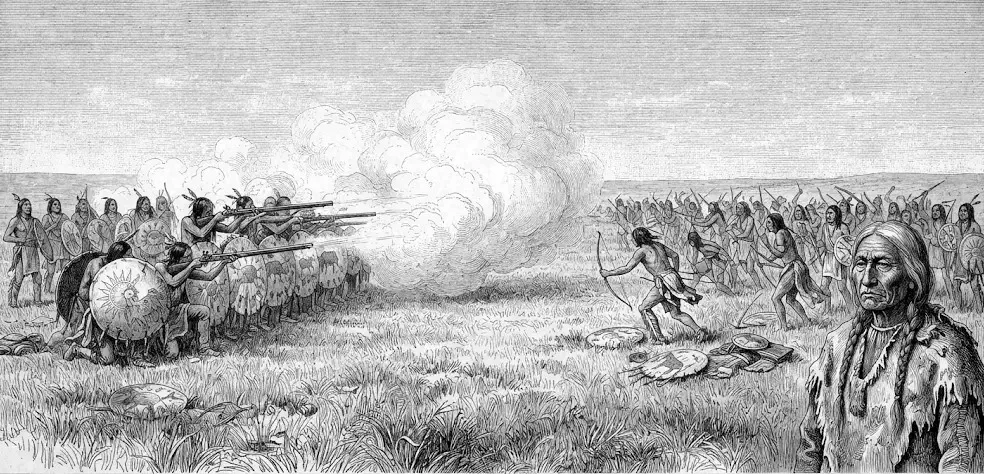
—Pasaron unos años —dijo el viejo—. No sé cuántos. Entonces no contábamos los años como vosotros. Contábamos los inviernos, y cada invierno tenía un nombre: el invierno en que murió tal, el invierno del gran frío, el invierno en que se quemó la pradera. Yo tuve muchos inviernos con los peeagan. Me casé con la hija del jefe. Tuve hijos. Aprendí la lengua. Cazaba con ellos. Me olvidé de que había sido cree.
»Pero las cosas iban mal.
Me contó que los snakes seguían viniendo cada verano. Que cada verano eran más fuertes. Y que ahora traían una cosa nueva.
—Traían el Gran Perro —dijo.
—¿El caballo?
—Sí. Pero nosotros todavía no lo habíamos visto de cerca. Solo de lejos. Venían montados en ellos, de pronto, por la pradera, más rápidos que un ciervo, más rápidos que nada que hubiéramos visto. Llegaban sobre un grupo de cazadores, o sobre unas mujeres que estaban recogiendo raíces, o sobre un campamento pequeño, de dos o tres tiendas, y les daban en la cabeza con sus mazas de piedra desde arriba, desde lo alto de aquellos animales, y se iban antes de que nadie pudiera coger el arco. Y nosotros no sabíamos qué eran. Algunos decían que eran hombres con cuatro patas. Otros decían que eran espíritus. Otros, que los snakes habían hecho un trato con algún poder malo del sur.
»Perdimos a mucha gente así. A muy buenos hombres. Los snakes nos echaban de los valles cerca de las montañas, de los mejores sitios, de los ríos con árboles, donde el bisonte pasa el invierno. Nos echaban a la pradera abierta. Y nosotros no podíamos hacer nada, porque no podíamos alcanzarlos. Llegaban, mataban, se iban.
Se quedó callado un rato.
—Pero nosotros teníamos otra cosa —dijo.
Lo que tenían eran fusiles.
No muchos. Llegaban de los cree, me explicó, que los conseguían en los fuertes de la bahía, de los blancos, a cambio de pieles. Y los cree se los pasaban a los assiniboines y a los peeagan, a cambio de caballos, cuando hubo caballos, y antes a cambio de pieles de bisonte y de carne. Pasaban de mano en mano por medio continente, desde las tiendas de la Compañía, junto al mar helado, hasta aquellas llanuras. Para cuando llegaban a los peeagan, cada fusil había costado lo que cuestan diez pieles de castor en el fuerte, multiplicado muchas veces.
—En la segunda batalla teníamos diez —dijo el viejo—. Diez fusiles. Y pólvora y balas para unos cuantos tiros cada uno. Los traían los cree que vinieron con nosotros, los de mi pueblo. Los snakes no tenían ninguno. No sabían lo que era. No lo habían visto nunca.
—¿Y sus caballos?
—En esa batalla no los trajeron. O no los vimos. Puede que los dejaran atrás. Puede que no tuvieran todavía muchos. Vinieron a pie, como la otra vez, con sus escudos, en fila. Querían una batalla como la otra.
Se rio por la nariz, sin ganas.
—Y se la dimos. Pero no como la otra.
Me contó cómo fue.
Se pusieron otra vez en fila, en una llanura, unos enfrente de otros. Otra vez los escudos. Otra vez las flechas. Pero esta vez los diez hombres de los fusiles no estaban repartidos por la fila: estaban juntos, en un sitio, detrás de los escudos de otros, agachados, cargando.
—Cargar un fusil entonces era muy lento —dijo—. Ahora los jóvenes lo hacen deprisa, pero entonces no sabíamos. Echar la pólvora, meter la bala, apretarla con el palo, poner pólvora en el plato, levantar, apuntar. Mucho rato. Y nosotros no teníamos casi pólvora, así que no podíamos gastarla en tirar por tirar. Esperamos.
»Los snakes estaban detrás de sus escudos, como siempre. Algunos se levantaban para gritar, como siempre. Y uno de ellos, un hombre grande, con la cara pintada de amarillo, salió de detrás de su escudo y se puso a bailar delante de la fila, insultándonos.
»Y uno de los nuestros le disparó.
Saukamappee levantó las manos, como si tuviera un fusil, y dio una palmada.
—Ese ruido. Tú lo conoces. Nosotros, entonces, casi no lo conocíamos. Ellos no lo conocían en absoluto. Sonó, salió el humo, y el hombre de la cara amarilla se cayó al suelo. Así, de golpe. Sin flecha. Sin nada que se viera. Se cayó y no se levantó.
»Los snakes se quedaron quietos. Todos. Quietos, mirando. No entendían. Uno salió a buscarlo, a ver qué le había pasado. Le disparamos también. Se cayó encima del otro.
»Y entonces disparamos los diez.
No fue una matanza, me dijo. Diez fusiles no hacen una matanza. Pero los escudos de piel, que paraban las flechas, no paraban las balas. Las balas los atravesaban, a ellos y al hombre que había detrás. Y cada vez que sonaba un tiro, alguno de la fila de los snakes se caía, y no se sabía por qué, y no se veía venir nada.
—Tenían miedo —dijo el viejo—. No de nosotros. Del ruido. Del humo. De que la gente se cayera sin flechas. Pensaban que era un poder. Un espíritu. Que nosotros habíamos hecho un trato con algún poder malo del norte, igual que nosotros pensábamos que ellos habían hecho un trato con algún poder malo del sur por los Grandes Perros.
Se calló. Le brillaban los ojos a la luz del fuego.
—Puede que los dos tuviéramos razón —dijo.
—Los snakes no aguantaron. Al rato dieron la vuelta y echaron a correr, dejando los escudos. Y nosotros salimos detrás.
»Esa vez sí hubo muertos. Muchos de ellos. Algunos de los nuestros también, al final, cuando los alcanzamos y se dieron la vuelta a pelear con las mazas. Pero muchos más de ellos. Al acabar contamos. Entre los muertos de ellos que se habían quedado en el campo, los que eran nuestros, los que habíamos matado de cerca o con los fusiles, había diez a los que se les podía quitar la cabellera.
Y aquí, me dijo, empezó la discusión.
Porque no estaba claro de quién era cada cabellera.
Antes, cuando se mataba a un enemigo, se sabía quién lo había matado. Había sido con tu flecha, o con tu lanza, o con tu maza. Te acercabas, le cortabas la cabellera, la colgabas de un palo, la bailabas, y ganabas honor, y el alma del muerto, según se decía, se iba contigo, a servirte en el otro mundo. Era tuya.
Pero ¿de quién era el muerto que había caído de un balazo? Los fusiles no eran de los que los habían disparado. Eran de los cree, que los habían prestado. O de los blancos, que los habían hecho. O de nadie. Y además, nadie podía estar seguro de qué bala había matado a cada uno, porque habían disparado los diez a la vez, a la fila, y en el humo nadie veía nada.
Y había otros muertos de los snakes a los que se había rematado después, con mazas o con lanzas, cuando ya estaban en el suelo, heridos por las balas. ¿De quién eran esos? ¿Del que disparó o del que remató?
—Hubo una gran discusión —dijo el viejo—. Gritos. Casi peleas. Esa noche, en el campamento, en vez de cantar, discutíamos. Y al final los viejos se sentaron en consejo y decidieron. Y decidieron esto: que el alma del muerto era del que lo había matado, del que había dado el golpe de verdad, pero que la cabellera era de quien la hubiera cortado, fuera quien fuera. Y que a los que habían disparado los fusiles se les debía honor, aunque no hubiera cabellera, porque sin ellos no habría habido muertos.
»Así se arregló. Pero ya no era lo mismo.
—¿Por qué?
—Porque antes la guerra era una cosa entre dos hombres. Uno contra otro. Tú le veías la cara, él te veía la tuya. Uno ganaba, otro perdía. Y ahora no. Ahora un hombre se caía muerto en mitad de un campo, y no sabía quién le había matado, ni el que le había matado sabía a quién había matado. Ahora el que más mataba era el que tenía el fusil, y el fusil no era suyo, era de los blancos. Ahora...
Hizo un gesto con la mano, como apartando humo.
—Ahora no nos reímos —dijo.
Me quedé despierto otra vez aquella noche.
Pensaba en los diez fusiles. Pensaba en que yo sabía, mejor que el viejo, de dónde venían.
Venían de Londres. De unas fábricas de Birmingham donde hombres con delantales de cuero los forjaban por cientos para la Compañía de la Bahía de Hudson: unos fusiles largos, de ánima lisa, baratos, que se llamaban fusiles del norte, o fusiles de comercio, con una culata pintada y un dragón de latón en la placa del costado, que se vendían en los fuertes a cambio de doce o catorce pieles de castor cada uno. Yo los había visto en los almacenes de York Factory, apilados en cajas, con su olor a grasa y a madera nueva. Los había contado. Los había apuntado en los libros. Estaban en los libros de la Compañía, cada uno, con su precio.
Y llegaban aquí. Al final de mil millas de ríos y de praderas y de manos. Y aquí servían para que un hombre de la cara pintada de amarillo se cayera en una llanura sin saber por qué.
Pensé en los snakes huyendo de los fusiles. Y en los peeagan huyendo de los caballos. Y en que los fusiles venían del noreste, de los ingleses, y los caballos venían del sudoeste, de los españoles. Y en que aquella llanura, el sitio donde yo estaba, la tienda del viejo, quedaba justo en medio, donde se juntaban las dos cosas.
Como el sitio donde el agua verde del Saskatchewan del Sur se junta con la del Norte, que yo había visto en la canoa al subir. Dos ríos que se encuentran y siguen un rato uno al lado del otro sin mezclarse.
Se mezclan.
Al día siguiente me llevaron a cazar bisontes por primera vez.
No voy a contar la cacería. Otros lo han contado mejor. Solo diré que fuimos treinta hombres a caballo, y que yo iba detrás de todos en mi bayo viejo, y que cuando la manada echó a correr el suelo temblaba como un tambor, y el polvo de nieve levantado por las pezuñas no dejaba ver nada, y los jóvenes se metían al galope entre los bisontes, pegados a ellos, y les disparaban flechas detrás de las costillas, a un brazo de distancia, sin riendas, y yo no maté ninguno ni me acerqué a ninguno, y me sentí como un niño que mira a los mayores.
Y que ninguno de los cazadores usaba fusil. Todos flechas.
Se lo pregunté después al viejo. Por qué, si tenían fusiles, cazaban con flechas.
—El fusil es para matar hombres —dijo—. Para el bisonte es mejor la flecha. No hace ruido, no espanta a los otros, la puedes disparar diez veces mientras cargas el fusil una, y sabes cuál es la tuya, porque cada hombre pinta sus flechas de una manera. Cuando matas un bisonte, la flecha dice que es tuyo. El fusil no dice nada.
Se encogió de hombros.
—Además, la pólvora hay que comprarla —dijo—. Y la flecha la haces tú.
Aquella noche, cuando estábamos ya tumbados, con el fuego cubierto, el viejo habló otra vez en la oscuridad. Yo creía que estaba dormido.
—David —dijo. Era la primera vez que me llamaba por mi nombre.
—¿Sí?
—Los snakes. Los que matamos aquel día. Algunos eran muy jóvenes. Como tú. Como era yo en la otra batalla, la de los escudos. Uno no tenía más de quince inviernos. Lo vi después, en el suelo. Tenía una bala aquí. —Oí que se tocaba el pecho—. No sabía lo que le había pasado. Tenía la cara así, sorprendida. Como si alguien le hubiera hecho una pregunta y no supiera la respuesta.
No dije nada.
—Le corté la cabellera yo —dijo el viejo—. Era mía, por lo que decidieron los viejos. Pero el alma no. El alma no sé de quién es. Nunca lo he sabido.
Se quedó callado. Fuera, un perro aulló, y le contestaron otros, por todo el campamento, y luego se callaron.
—A lo mejor es de los blancos —dijo el viejo—. Que hicieron el fusil.
Y no habló más esa noche.
El francés desnudo
San Luis de Ilinueses · octubre de 1792-junio de 1793
Luc
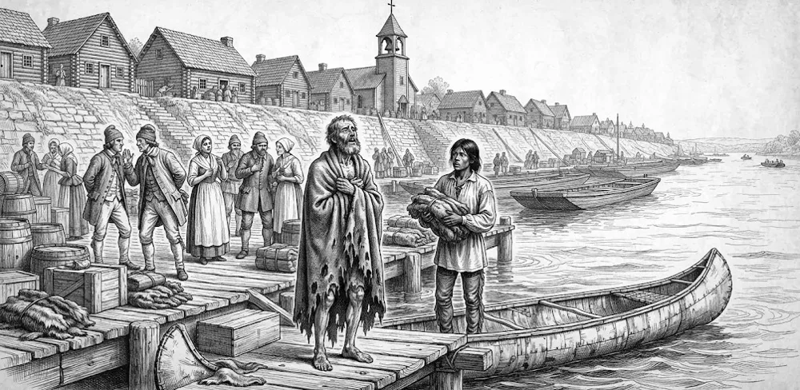
Pasaron once años. Luc creció.
Creció hacia arriba, primero, de golpe, en dos veranos, hasta quedarse más alto que su madre y casi tan alto como Lambert. Y luego hacia los lados, de remar. Desde aquel primer viaje a Nueva Orleans no había hecho otra cosa: remar, sirgar, cargar, descargar, río abajo con pieles, río arriba con mercancía, y luego, cuando tuvo quince años y los brazos de un hombre, Misuri arriba, con los Chouteau, al país de los osages.
Los osages eran el negocio de los Chouteau. Vivían río arriba, por el Misuri y luego por el Osage, en unos pueblos grandes de casas largas cubiertas de esteras, en la frontera entre el bosque y la pradera, y eran altos, los hombres más altos que Luc había visto nunca, de seis pies y más, con la cabeza rapada salvo una cresta en lo alto, y orgullosos, y muy peligrosos, y muy ricos. Tenían pieles, cientos, miles. Y tenían caballos, que robaban a los panis, a los wichitas, a los comanches y a cualquiera que tuviera caballos al oeste de ellos. Y tenían esclavos, que robaban a los mismos. Y los Chouteau, Auguste y Pierre, los hijos de madame, eran sus amigos. Hablaban su lengua. Habían vivido en sus pueblos. Se decía que tenían mujeres y hijos osages. Y tenían el monopolio de su comercio, concedido por el gobernador español, que era como tener una mina de plata.
Luc subió con ellos cada año. Aprendió un poco de osage, lo bastante para no meterse en líos. Aprendió a tratar con los hombres de la cresta, a no mirarles a los ojos cuando no tocaba, a no aceptar comida de cualquier mano. Aprendió a dormir en una piragua. Aprendió a beber.
Se hizo un hombre. Más o menos. A los veintiún años seguía viviendo en el desván de la cocina de los Chouteau, encima de su madre, porque no tenía dinero para otra cosa y porque, aunque no lo decía nadie y él no lo preguntaba, seguía siendo de los Chouteau. Hijo de una esclava. En San Luis eso no se decía en voz alta. Pero se sabía.
Lambert, en cambio, se había casado.
Con una francesa, una chica de los Bissonnette, a los veintidós años, y tenía ya un hijo y otro en camino y una casa pequeña en la calle de la Iglesia. Trabajaba de herrero con el viejo Jean-Baptiste, el negro libre que Luc había visto correr con el martillo el día del ataque. Había engordado. Se reía como su padre, el difunto Lajoie, que se había vuelto a Francia hacía años, a Normandía, a cobrar una herencia, y no había vuelto, ni había escrito, ni nadie sabía si estaba vivo o muerto.
Marie Rose seguía en su casa de la parte alta, con su huerto. Era ya una mujer mayor, de pelo gris, siempre vestida de oscuro, que iba a misa todos los días y no hablaba con casi nadie. Antoine, el hijo mayor, el medio comanche, se había ido al norte con los comerciantes y estaba casi siempre fuera. Lambert la visitaba cada domingo, con su mujer y el niño. Luc, a veces, también. Marie Rose le daba café y pan con miel y le preguntaba por los osages, y por los ríos, y por si había oído hablar alguna vez de un camino hacia el oeste, hacia Nuevo México.
Luc le decía que no. Que los osages no dejaban pasar a nadie hacia el oeste, porque no querían que los blancos llevaran fusiles a sus enemigos, los panis y los comanches. Que el camino estaba cerrado.
Marie Rose asentía, sin decir nada, y le servía más café.
El 3 de octubre de 1792 llegó a San Luis un hombre por el Misuri en una canoa de los comerciantes, con otros dos, y bajó al embarcadero tapado con una manta, porque debajo no llevaba casi nada.
Luc estaba allí. Estaba descargando unas pacas de una barca de los Chouteau cuando vio la canoa, y a los tres hombres, y al de la manta, que se bajó despacio, como un viejo, aunque no lo era, y miró alrededor, al pueblo, a la gente, a la iglesia en lo alto del barranco, y se echó a reír. Una risa rara, ronca, de alguien que no se ha reído en mucho tiempo.
Tenía unos cuarenta y tantos años. Era moreno, flaco, con la barba larga y sucia, quemado por el sol, con la piel de la espalda, que se le veía por debajo de la manta, despellejada y cubierta de costras. Iba descalzo. Los pies eran una pura llaga.
—¿Esto es San Luis? —preguntó, en francés. Un francés de Francia, no de Canadá ni de la Luisiana. Del sur.
Le dijeron que sí.
—Me llamo Pedro Vial —dijo—. Vengo de Santa Fe.
Y se sentó en el suelo, en el embarcadero, y se echó a llorar.
Tardó días en contar la historia entera, y la contó muchas veces, al gobernador, al cura, a los Chouteau, en la taberna. Luc la oyó casi todas.
Se llamaba Pierre Vial, en realidad, y era de Lyon, en Francia, y había llegado a América de joven, nadie sabía muy bien cómo, y había vivido entre los indios, y había hecho de armero, de comerciante, de intérprete, de lo que fuera. Y había acabado en Nuevo México, al servicio de los españoles, que le llamaban Pedro. Hablaba español, francés, comanche, y unas cuantas lenguas más. Y el gobernador de Nuevo México, que se llamaba Concha, le había encargado una cosa que no había hecho nunca nadie: abrir un camino desde Santa Fe hasta San Luis, a través de las llanuras.
—Ya había ido a San Antonio —contaba Vial—, y a Natchitoches. Por eso me eligieron. Porque los comanches me conocen. Soy amigo de los comanches. Ya no se puede decir eso de mucha gente en Nuevo México, pero de mí sí.
Había salido de Santa Fe el 21 de mayo, con dos muchachos jóvenes de Nuevo México, Vicente Villanueva y Vicente Espinosa, y unos cuantos caballos y mulas. Habían cruzado las llanuras hacia el nordeste, por el río de los Arcos, el que los franceses llamaban Arkansas. Habían visto bisontes, comanches, ríos, tormentas. Y luego, cerca ya del Misuri, en el país de los kansas, les habían salido al paso unos cuantos de esos indios.
—Nos quitaron todo —contaba—. Los caballos, las mulas, la ropa. Todo. Hasta la camisa. Nos dejaron desnudos como el día que nacimos. Y querían matarnos. Discutieron mucho rato si nos mataban o no. Uno de ellos me puso el cuchillo aquí. —Se tocaba el cuello—. Otro dijo que no. Que yo era amigo de los franceses. Y que si nos mataban, los franceses de San Luis no les venderían más pólvora.
Se reía al contarlo. Siempre se reía en esa parte.
—Nos salvó la pólvora de los Chouteau —decía, levantando el vaso—. ¡Por la pólvora de los Chouteau!
Los habían tenido seis semanas en su pueblo, desnudos, como esclavos, cargando leña. Hasta que llegó un comerciante francés que andaba por allí y los compró, o los rescató, o los convenció de que los soltaran, y los metió en su canoa y los trajo.
—De Santa Fe a San Luis —decía Vial—. Lo que nadie había hecho nunca. Y he llegado. —Se miraba la manta—. Sin pantalones. Pero he llegado.
Lambert vino a buscar a Luc aquella misma semana, a la cocina de los Chouteau, a la hora en que no había nadie, y le dijo que quería hablar con el francés.
—Habla tú —le dijo—. Tú trabajas aquí, lo ves todos los días. Yo no sé cómo acercarme.
—¿Y qué le digo?
Lambert se quedó callado un rato, retorciéndose las manos, unas manos de herrero, gordas, quemadas.
—Pregúntale si conoce a un hombre que se llame José Jaques —dijo—. En Taos. Tendrá unos... treinta y tantos años. Es el hijo de mi madre. El que se quedó allí.
Luc lo miró.
—Lambert, hace más de treinta años.
—Ya lo sé.
—Puede estar muerto.
—Ya lo sé. —Lambert le miró a los ojos—. Pregúntaselo.
Se lo preguntó.
Fue una tarde de noviembre, en la galería de la casa de los Chouteau, donde Vial estaba alojado mientras esperaba a que llegara la primavera para volver. Estaba sentado al sol, con ropa nueva, prestada, que le quedaba grande, los pies vendados metidos en unos mocasines, fumando un cigarro de hoja que se había liado él mismo, a la manera española. Luc le llevó un café y se quedó de pie a su lado.
—¿Usted conoce Taos? —le preguntó.
Vial le miró con curiosidad.
—Claro que conozco Taos. Todo el mundo en Nuevo México conoce Taos. Es donde se hace la feria. Allí bajan los comanches en verano a cambiar pieles, carne, caballos y cautivos por cuchillos, mantas y maíz. Ahora mejor que antes, desde la paz. ¿Por qué?
Luc le contó lo de Marie Rose. Lo del ataque, hacía treinta y dos años. Lo del marido muerto. Lo del niño que se quedó.
Vial lo escuchó sin interrumpir. Cuando Luc terminó, dejó el cigarro en el borde de la galería y se quedó mirando el humo.
—El ataque a Taos —dijo—. El de 1760. Sí. Lo conozco. Bueno, no lo vi, yo no estaba entonces, pero todo el mundo lo cuenta. Fue de los peores. Entraron en la casa fuerte de un tal Villalpando, un rico, donde se habían refugiado muchas familias. Mataron a muchos hombres. Se llevaron a muchas mujeres y niños. Cincuenta, sesenta. —Miró a Luc—. ¿Cómo se llamaba la mujer?
—María Rosa —dijo Luc—. Villalpando. Aquí se llama Marie Rose Salé.
Vial se quedó muy quieto.
—Villalpando —repitió—. La hija del rico.
—No sé. Supongo.
Vial cogió el cigarro, le dio una calada, lo volvió a dejar.
—No conozco a ningún José Jaques —dijo al fin—. No te voy a mentir. Pero no conozco a todo el mundo en Taos, y en Nuevo México hay muchos Jaques, y muchos José. Te diré lo que voy a hacer. En primavera me vuelvo a Santa Fe. Por el mismo camino, si los kansas me dejan. Cuando llegue, preguntaré. En Taos, al cura, que tiene los libros de bautismos. Y si está vivo, se lo diré. Le diré que su madre está viva, en San Luis, y que se llama Marie Rose.
—¿Lo hará?
Vial le miró.
—Muchacho —dijo—, yo he estado seis semanas desnudo en un pueblo de los kansas, cargando leña, pensando que me iban a matar cada mañana, y lo único que me hacía levantarme era pensar que en Santa Fe hay gente que me espera. Claro que lo haré.
Luc se lo contó a Lambert esa misma noche. Lambert no dijo nada. Se fue a su casa.
Y el domingo, en la iglesia, Luc vio a Marie Rose, en su banco de siempre, al fondo, con su velo negro, de rodillas, y vio que no rezaba. Tenía las manos juntas y los ojos abiertos, y miraba al frente, al altar, a la nada, sin mover los labios. Como aquel día del ataque, cuando Lambert la encontró en la puerta del huerto mirando hacia los campos.
No sabía si Lambert se lo había dicho o no. No le preguntó.
Vial pasó el invierno en San Luis.
Se recuperó. Engordó. Le crecieron otra vez las uñas de los pies. Se convirtió en una especie de celebridad: todo el mundo quería invitarle a beber y oír la historia de los kansas, y él la contaba cada vez con más detalles y cada vez más divertida. Pero había otra historia que contaba menos, y solo cuando había bebido, y solo a unos pocos. Luc la oyó una noche de enero, en la taberna de los Labbadie, cuando ya quedaban pocos.
Era sobre los comanches.
—Ahora hay paz —dijo Vial—. Desde hace unos años. La hizo el gobernador Anza, con un jefe grande que se llama Ecueracapa. Ya llevamos seis o siete años sin guerra con los comanches en Nuevo México. Pero vosotros no sabéis lo que era antes. Antes, cada verano, cada luna llena, bajaban. A Taos, a Pecos, a Galisteo, a Albuquerque, a todas partes. Mataban, quemaban, se llevaban los caballos, se llevaban la gente. Y no se podía hacer nada, porque tenían más caballos que nadie, y mejores, y montaban mejor que nadie. Mejor que los españoles, que les enseñaron. Mejor que los diablos.
Bebió.
—Yo he vivido con ellos —dijo—. Sé cómo son. No son malos. No son buenos. Son como son. Tienen caballos como los ricos de Lyon tienen dinero: para contarlos. Un hombre comanche que no tenga cien caballos es un pobre. Hay hombres con mil. Y cada caballo que tienen lo han robado, o lo han criado, o lo han cambiado. Y cada uno lo conocen por su nombre, por su color, por cómo corre.
Se quedó pensando.
—Una vez —dijo— vi a un comanche viejo llorar por un caballo. Un caballo gris, con una estrella blanca en la frente. Se le había muerto de viejo. Lo había tenido treinta años. Lloraba como si se le hubiera muerto un hijo. Le cortaron la cola y las crines y se las enterraron con él, y él se cortó el pelo, como cuando se muere alguien de la familia. Y luego se fue con sus otros caballos, que eran como quinientos, a ver si alguno de los potros de aquel gris había salido con la estrella.
Se encogió de hombros.
—Los comanches —dijo— están locos por los caballos. Y los caballos, creo, por ellos.
Luc lo escuchaba con la jarra en la mano, sin beber. No sabía por qué, pero aquella historia, la del gris con la estrella, se le quedó dentro. Muchos años después todavía se acordaba.
Vial se fue en junio de 1793, el día 14, con unos cuantos hombres y unos caballos que le compraron los Chouteau, río Misuri arriba, camino de Santa Fe.
Antes de irse fue a ver a Marie Rose. Solo. Luc lo vio subir por la calle de arriba, con su sombrero nuevo, y llamar a la puerta del huerto, y entrar. Estuvo dentro una hora. Luego salió, y bajó hacia el río sin mirar atrás.
Luc no supo nunca de qué hablaron. Lambert tampoco.
Lo que sí supo, y no por Vial, ni por Lambert, ni por nadie que se lo contara, sino porque lo vio con sus ojos, fue que aquel verano, por primera vez en doce años, Marie Rose plantó rosas en su huerto. Rosas de Castilla, rojas, de las que traían los barcos de Nueva Orleans. En el rincón del huerto que daba al oeste.
Y que las regaba cada tarde, a la puesta del sol, y se quedaba un rato allí, de pie, mirando hacia donde se ponía.
Un ciervo sin cuernos
El río Bow, diciembre de 1787 · lo que contó Saukamappee de hacia 1740
Lo cuenta David Thompson
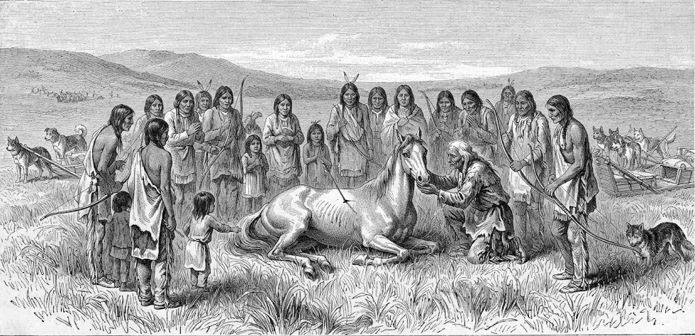
En diciembre los días se acortan tanto en aquellas latitudes que el sol apenas sube por encima de las montañas. Sale tarde, rojo, por el sudeste, se arrastra un rato por el borde del cielo, sin calentar, y se vuelve a meter a media tarde por el sudoeste, detrás de los picos, que se quedan encendidos, rosas y naranjas, mucho después de que abajo, en la pradera, sea ya de noche. Es muy hermoso. Y hace mucho frío.
Aquel mes medí la temperatura todas las mañanas con el termómetro de la Compañía, que llevaba en una caja forrada de lana como si fuera un niño. Hubo días en que el mercurio se metió entero en la bola y no salió. Eso es más de cuarenta grados bajo cero. A esa temperatura, si escupes, el escupitajo cruje al llegar al suelo. Si tocas el metal con la mano desnuda, te deja la piel. Si respiras hondo, te duele el pecho.
Los piegan no se quejaban. Se envolvían en sus mantas de bisonte con el pelo hacia dentro, se ponían mocasines forrados de piel de liebre, y seguían con su vida. Los niños jugaban en el hielo del río, deslizando sobre él unos huesos pulidos de bisonte. Los hombres salían a cazar cuando hacía falta carne. Las mujeres raspaban pieles dentro de las tiendas. Y por las noches se contaba.
—Un verano —dijo el viejo—, después de la batalla de los fusiles, uno o dos veranos después, no me acuerdo bien, estábamos acampados cerca de un río, al sur de aquí, en un sitio con árboles. Y una partida de snakes nos atacó.
»No eran muchos. Unos pocos. Vinieron montados, como venían siempre ya entonces, de pronto, al amanecer, sobre unas tiendas que estaban un poco apartadas del resto. Mataron a un hombre. Se llevaron a una mujer. Nosotros salimos corriendo detrás, a pie, con los arcos, y no los alcanzamos, claro. Nunca los alcanzábamos.
»Pero esa vez uno de nuestros jóvenes, uno que corría mucho, se adelantó. Y desde lejos, desde muy lejos, le disparó una flecha a uno de los Grandes Perros, que iba el último. Y le dio. Aquí. —Se tocó el vientre, debajo de las costillas—. En la tripa.
»El animal siguió corriendo un rato. Después se paró. El snake que lo montaba se tiró al suelo y se fue corriendo detrás de los otros, y alguno de ellos lo subió a su animal. Y el que estaba herido se quedó allí, en la pradera, solo. Dando vueltas. Y luego se tumbó.
»Y nosotros fuimos a verlo.
Lo contó despacio. Era, me di cuenta, una historia que había contado muchas veces, y que se sabía de memoria, y que le gustaba contar. Cambió la voz al contarla. Se le puso más joven.
—Nos acercamos todos —dijo—. Todos los hombres del campamento. Las mujeres también, detrás, y los niños. Con mucho cuidado. Con los arcos preparados. Porque no sabíamos qué era. Habíamos visto de lejos aquellos animales muchas veces, con los snakes encima, corriendo. Pero nunca uno de cerca. Nunca uno quieto. Y teníamos miedo de que fuera algo malo. Un espíritu. Algo que se levantara y nos matara.
»Cuando llegamos, todavía respiraba. Estaba tumbado de lado, en la hierba, con la flecha clavada en la tripa y la sangre saliendo, y respiraba muy deprisa, haciendo un ruido así. —Resopló—. Y nos miraba. Tenía unos ojos grandes, muy grandes, negros, húmedos, con pestañas largas como las de una mujer. Y nos miraba a todos, uno a uno, como si nos preguntara algo.
»Nadie se atrevía a acercarse más. Estuvimos mucho rato así, en corro, mirándolo. Luego un viejo, uno que era muy valiente, se acercó, y le puso la mano en el cuello. Y el animal no hizo nada. Solo respiró más fuerte. Y el viejo dijo: «Está caliente. Es como nosotros».
»Y entonces se murió.
—Lo miramos mucho tiempo —siguió el viejo—. Lo tocamos. Le abrimos la boca y le miramos los dientes. Le levantamos las patas y le miramos los cascos, que no eran como los del bisonte, partidos en dos, sino enteros, redondos, como una piedra. Le tocamos la cola, que era de pelo largo, como el de las personas. Y las crines, igual.
»Y discutíamos qué era.
»Unos decían que era un ciervo grande. Un alce. Porque tenía la forma del ciervo, el cuello largo, las patas finas, y comía hierba, que se lo vimos en los dientes. Pero no tenía cuernos. Y un viejo dijo que a lo mejor era un ciervo que había perdido los cuernos, como los pierden en invierno los alces y los ciervos, y que le volverían a salir.
Se rio.
—Nos pareció bien. Durante unos días, lo llamamos así. El Ciervo Sin Cuernos. Pero luego alguien dijo que no, que no podía ser un ciervo, porque los ciervos no se dejan montar por los hombres, ni llevan cosas, ni obedecen. Y que ese animal, por lo que habíamos visto de lejos, hacía lo mismo que hacen los perros: llevaba cosas, iba con los hombres, hacía lo que le mandaban. Pero mucho más grande. Mucho más fuerte. Llevaba a un hombre entero.
»Y así le pusimos el nombre. Gran Perro. Ponokamita, en la lengua de los pies negros: Perro Alce. Los cree le dicen mistatim, Perro Grande. Es lo mismo. Un perro que es como un alce.
Entendí entonces algo que no había entendido hasta aquella noche.
Aquella gente había vivido con perros desde siempre. Desde antes de que nadie se acordara. El perro era su único animal. Su ayudante. Su compañero. Llevaba las tiendas, la leña, la carne. Avisaba de los enemigos. Dormía con ellos en las noches de frío. Se lo comían, a veces, en los inviernos malos, o en las ceremonias. Era, en su manera de pensar, el animal que está con el hombre.
Y cuando vieron el caballo, no pensaron en un animal nuevo. Pensaron en un perro. Un perro mejor. El perro que siempre habían querido tener y no tenían.
—¿Y qué hicisteis con él? —le pregunté.
—Nos lo comimos —dijo el viejo.
Debí de poner una cara muy rara, porque los niños se echaron a reír, y la vieja también, y el viejo se tuvo que sujetar la tripa.
—¿Qué querías? —dijo, cuando se le pasó la risa—. Estaba muerto. Era carne. Mucha carne. Y estaba buena. Un poco dulce. Mejor que el perro, peor que el bisonte. Ahora no lo comemos. Ahora vale demasiado. Pero entonces era carne.
Lo que vino después lo contó más deprisa. Fueron años, muchos.
Primero quisieron tener caballos. Los quisieron más que nada. Más que los fusiles. Un hombre a caballo podía cazar más bisontes en una mañana que diez hombres a pie en una semana. Podía llevar más carne, más pieles, más leña. Podía ir más lejos, más deprisa. Podía alcanzar a los snakes y huir de ellos. Podía llevar una tienda más grande, porque los palos se ataban a los costados del caballo y arrastraban, y un caballo podía arrastrar palos más largos que un perro. Las tiendas crecieron. Las familias crecieron. Los viejos ya no se quedaban atrás.
—Ese fue el mayor cambio —me dijo—. Ese. Que los viejos no se quedaban atrás. Antes, cuando movíamos el campamento, el que no podía andar se quedaba. Le dejábamos comida, un fuego, y nos íbamos. Y él se quedaba allí, esperando a morirse, o a que le encontraran los lobos. Así era. Así había sido siempre. Mi abuelo se quedó así. Y con el Gran Perro, eso se acabó. Al viejo lo subes encima del caballo, o en las parihuelas, y viene contigo.
Se tocó el pecho.
—Por eso estoy yo aquí, contándotelo. Si no hubiera Gran Perro, a mí me habrían dejado atrás hace muchos inviernos.
Pero conseguir caballos era difícil.
Al principio se los compraban a los kutenai y a los flathead, al otro lado de las montañas, al oeste, que los tenían antes, de los snakes, de los nez percés, de los que estaban más cerca del sur. Pagaban mucho: pieles, fusiles, puntas de hierro, cuchillos, todo lo que les llegaba de los cree y de los blancos. Un caballo valía lo que valía un fusil, o más. Algunos hombres daban por un caballo bueno todo lo que tenían.
Empezaron a robarlos.
—A los snakes —dijo el viejo, y sonrió—. A quién si no. Ellos tenían muchos. Nosotros, pocos. Íbamos al sur, de noche, a pie, en partidas pequeñas. Llegábamos a sus campamentos. Esperábamos a que estuvieran dormidos. Cortábamos las cuerdas de los caballos que tenían atados junto a las tiendas, que eran los mejores, y nos los llevábamos. A veces los snakes se despertaban, y había pelea, y había muertos. A veces no.
»Robarle un caballo al enemigo era lo más valiente que había. Más que matar a un hombre. Porque matar es fácil. Llevarte su caballo de al lado de su tienda, mientras duerme, sin que se despierte, y volver a casa con él, eso es difícil. Eso da honor. Mucho honor.
»Y así, poco a poco, tuvimos caballos. Al principio uno o dos por familia. Luego más. Luego muchos. Los muchachos aprendieron a montar. Las muchachas también. Los niños nacían y antes de andar ya estaban encima de un caballo, atados a la silla. Y nos hicimos fuertes. Más fuertes que los snakes. Los empujamos al sur, más allá del río de las Leches, más allá del Misuri. Recuperamos los valles cerca de las montañas. Y luego más. Y luego más.
Hizo un gesto amplio con la mano, abarcando la tienda, el campamento, la llanura de fuera, cubierta de nieve, llena de caballos dormidos en la hondonada del río.
—Y ahora todo esto es nuestro —dijo—. Desde el río del Arco hasta el Misuri. Por el Gran Perro.
Se quedó callado.
—Por el Gran Perro —repitió—. Y por lo otro.
Yo sabía ya, o empezaba a saber, qué era «lo otro». Pero no se lo pregunté esa noche, y él no lo dijo.
Me quedé pensando en el caballo muerto, en la pradera, hace casi cincuenta años, con una flecha en la tripa, mirando con sus ojos grandes a aquel corro de hombres que no sabían qué era. En el viejo valiente que le puso la mano en el cuello y dijo «es como nosotros». En los niños que le tocaban la cola.
Y pensé en el viaje que habría hecho aquel caballo, o sus padres, o sus abuelos, para llegar hasta allí.
Desde el sur. Desde los españoles. Desde Nuevo México, donde el viejo decía que había hombres blancos con casas de piedra y más caballos que bisontes. Mil millas, o más. Pasando de mano en mano, de pueblo en pueblo, de feria en feria, robado, cambiado, criado, robado otra vez. Los apaches a los utes, los utes a los snakes, los snakes a los kutenai, y así. Cada vez más al norte. Cada verano un poco más lejos. Como una ola que avanza por la playa, despacio, sin que nadie la vea avanzar, y que un día te moja los pies.
Esa ola había llegado aquí, a los pies de las Montañas de Piedra, más o menos cuando el viejo era joven. Y había cambiado todo.
Y por el otro lado, desde el nordeste, desde la bahía de Hudson, desde los almacenes de York Factory, desde las fábricas de Birmingham, había llegado otra ola, la de los fusiles. Y la de los cuchillos, y las hachas, y las ollas de cobre, y las mantas de lana, y el aguardiente.
Y aquel campamento, aquella tienda, aquel viejo, estaban justo donde las dos olas se habían encontrado.
Y yo con ellos.
Antes de dormir, salí a orinar. Hacía un frío que cortaba. La noche era clara, sin luna, y el cielo estaba tan lleno de estrellas que parecía blanco. Encima del campamento, hacia el norte, se movían en silencio las luces, verdes y blancas, en cortinas, en ondas, como si alguien estuviera sacudiendo una sábana de luz detrás del cielo. Los piegan dicen que son los espíritus de los muertos bailando.
Bajé hasta la hondonada del río. Los caballos dormían de pie, juntos, apretados unos contra otros, con la cabeza baja y una costra de escarcha blanca en el lomo. Echaban vaho por la nariz. Uno levantó la cabeza al oírme. Era el pinto del ojo de borde blanco, el que me había echado el aliento en la mano la mañana del halo. Me miró. Me acerqué. Le puse la mano en el cuello, por debajo de las crines, donde el pelo es más espeso y está más caliente.
Estaba caliente.
Es como nosotros, pensé.
Y me volví a la tienda.
La Compañía del Misuri
Del Misuri al país de los omahas · agosto de 1795-primavera de 1796
Luc
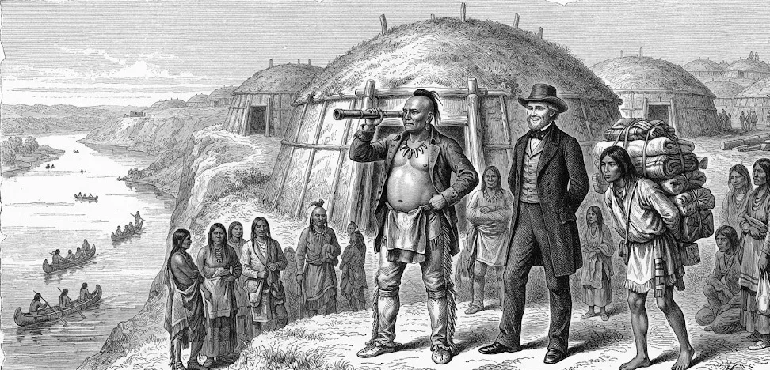
En el verano de 1795 los comerciantes de San Luis se volvieron locos con una idea, y la idea se llamaba el mar del Oeste.
La tuvo, o la vendió como suya, un hombre que se llamaba Jacques Clamorgan. Era un tipo raro: medio francés, medio galés, medio portugués, decían, y medio sinvergüenza, decían también, que había llegado a San Luis unos años antes desde las islas del Caribe con mucho dinero que nadie sabía de dónde había sacado y muchas deudas que todo el mundo sabía que no pensaba pagar. Hablaba como un cura y vestía como un conde. Y había convencido al gobernador de la Luisiana, en Nueva Orleans, y a los principales comerciantes del pueblo, de que formaran juntos una compañía.
La Compañía de Comercio para el Descubrimiento de las Naciones del Alto Misuri. Así se llamaba. Luc se lo aprendió de memoria porque le hizo gracia lo largo que era.
La idea era esta. El Misuri venía del oeste, de muy lejos. Nadie sabía de dónde. Los indios decían que nacía en unas montañas muy altas, con nieve todo el año, y que al otro lado de esas montañas había otros ríos que corrían hacia el poniente, hasta un mar. El mar del Sur. El Pacífico. Si se subía por el Misuri hasta las montañas, y se cruzaban, y se bajaba por los otros ríos, se llegaba al mar. Y quien abriera ese camino tendría el comercio de todas las naciones indias de por medio. Y el rey de España, que tenía miedo de que los ingleses de Canadá llegaran antes y se quedaran con todo, había prometido un premio de tres mil pesos al primero que llegara.
Tres mil pesos. Luc no había visto en su vida más de veinte.
Ya habían salido dos expediciones. La primera, el año anterior, con un maestro de escuela que se llamaba Truteau, que había llegado hasta los arikaras y se había vuelto sin llegar al mar. La segunda, aquella primavera, con un tal Lécuyer, que se había quedado entre los poncas y del que no se sabía nada. Ahora iba a salir la tercera, la grande. Cuatro piraguas, treinta y tantos hombres, mercancía para dos años. Y al frente, un escocés.
Se llamaba James Mackay. Tendría treinta y tantos años, era alto, pelirrojo, con la cara llena de pecas y unos ojos azules muy claros, y hablaba francés con acento escocés, inglés con acento escocés y español con acento de no saber español. Había trabajado años para los ingleses de Canadá, en el comercio de pieles, y había estado en los mandanes, río arriba, en el país de los ingleses. Y luego se había cambiado de bando, nadie sabía por qué, y se había hecho súbdito del rey de España, y ahora trabajaba para Clamorgan.
—Es un traidor —decían en la taberna.
—Es un hombre que sabe el camino —decía Auguste Chouteau, que tenía acciones en la compañía—. Lo demás no me importa.
Mackay necesitaba remeros. Buenos, fuertes, que conocieran el Misuri. Los Chouteau le prestaron cuatro. Uno era Luc.
Su madre no lloró esta vez. Le hizo otra camisa, de lana, para el frío. Y le dio un consejo, el único que le dio nunca:
—No te cases con ninguna de allí arriba.
Luc se rio. Ella no.
Salieron a finales de agosto, con la fiesta del pueblo en el embarcadero, el cura bendiciendo las piraguas, Clamorgan con su levita echando un discurso que nadie escuchó, y Lambert, con su hijo mayor en brazos, diciéndole adiós con la mano desde lo alto del barranco. Marie Rose no bajó. Luc miró hacia arriba, hacia la parte alta del pueblo, y le pareció verla en el rincón del huerto que daba al oeste, junto a las rosas, pero estaba muy lejos y no estuvo seguro.
Iba también un galés. Un muchacho de veinticinco años, flaco, rubio, con gafas, que no sabía remar, ni cazar, ni hablar ninguna lengua india, ni casi español. Se llamaba John Evans. Y había venido desde Gales, al otro lado del mar, a buscar a unos indios que hablaban galés.
Luc tardó semanas en entender aquella historia, porque Evans la contaba en un francés malísimo, con mucho entusiasmo y muchas manos.
En Gales, decía, se contaba que hacía seiscientos años un príncipe galés, que se llamaba Madoc, había cruzado el mar con unos barcos hacia el oeste y había descubierto una tierra nueva, mucho antes que Colón. Y que se había quedado allí con su gente. Y que sus descendientes seguían viviendo en algún sitio de América, en el interior, junto a un río grande, y hablaban todavía galés, y tenían la piel clara, y algunos libros en su lengua.
—Los indios galeses —decía Evans, con los ojos brillantes detrás de las gafas—. Los madogwys. Los descendientes de Madoc. Muchos viajeros los han visto. Están aquí. Río arriba. Seguramente son los mandanes. Dicen que los mandanes tienen la piel clara y los ojos azules, y casas redondas como las de los antiguos galeses, y barcas redondas de cuero como las de Gales.
Los remeros se reían de él. Le llamaban el Galés Loco. Le hacían bromas: le decían que en el próximo recodo había un indio que hablaba galés, y él se ponía de pie en la piragua con el sombrero en la mano.
Luc no se reía. No sabía por qué. Le daba pena. Y le daba algo más, que tardó en entender: un poco de envidia. Aquel muchacho había cruzado el mar, había dejado a su familia, a su país, todo, por una historia. Por una idea. Por algo que probablemente no existía. Y le daba igual que se rieran.
Luc no había creído nunca en nada tanto como para hacer eso.
Subir el Misuri era más duro que nada que Luc hubiera hecho.
El río bajaba con una fuerza que no tenía el Misisipi. Era marrón, espeso, lleno de barro, tan cargado de tierra que si dejabas un vaso de agua quieto una hora se quedaba en el fondo un dedo de fango. Los franceses decían que era demasiado espeso para beber y demasiado líquido para arar. Y estaba lleno de troncos: árboles enteros, clavados en el fondo por las raíces, con la punta asomando río abajo, afilada, bajo la superficie, esperando a que pasara una barca para abrirla en canal. Los llamaban chicots. Y había bancos de arena que cambiaban de sitio de un día para otro, y remolinos, y orillas que se derrumbaban de pronto con árboles y todo.
Remaban cuando se podía. Cuando no, sirgaban: saltaban a la orilla, o al agua hasta el pecho, con una cuerda larga atada al mástil, y tiraban, como bueyes, paso a paso, resbalando en el barro, con los mosquitos comiéndoselos vivos. Cuando no se podía ni eso, empujaban con pértigas desde la piragua, clavándolas en el fondo y caminando a lo largo de la borda. Así, día tras día, desde el amanecer hasta la noche. Diez millas en un día bueno. Tres en uno malo. Ninguna en uno muy malo.
A Luc se le abrieron otra vez los callos de las manos. Se le hincharon los hombros. Perdió peso. Por las noches se dormía en la arena sin cenar, con la cara picada de mosquitos, y por las mañanas se levantaba sin acordarse de dónde estaba.
Pero el país era hermoso. Eso no lo había esperado.
Al principio era como los osages: bosques en las orillas, colinas, praderas altas entre los bosques. Luego, poco a poco, a medida que subían, los bosques se iban quedando solo en las orillas, en franjas cada vez más estrechas, y detrás, en lo alto de los barrancos, estaba la pradera. Sin fin. Hierba alta, amarilla en septiembre, ondulando con el viento hasta el horizonte. Y en la hierba, bisontes, ciervos, alces, antílopes que corrían como el viento, lobos que los seguían de lejos sin miedo, y unos animales pequeños, como ardillas grandes, que vivían en ciudades bajo tierra, con miles de agujeros, y que se ponían de pie a la puerta de sus casas para ver pasar a los hombres, y chillaban.
—Perros de la pradera —dijo Mackay, que los había visto antes—. Así los llaman los franceses. Porque ladran.
Luc los miró con desconfianza. Ya había bastantes cosas en aquel país que se llamaban perro sin serlo.
A finales de octubre llegaron al país de los omahas.
Mackay había decidido pasar allí el invierno, construir un fuerte, comerciar con ellos, y seguir río arriba en primavera. Los omahas vivían en un pueblo grande en lo alto de una colina sobre el río, de casas redondas de tierra, como colmenas enormes, con el techo cubierto de hierba y un agujero arriba para el humo. Eran muchos, mil o dos mil, y tenían caballos, y fusiles, y mucho orgullo, y un jefe.
El jefe se llamaba Pájaro Negro. L'Oiseau Noir, le decían los franceses. Washinga Sakba, en su lengua.
Luc había oído hablar de él toda su vida. Todo el mundo en el Misuri había oído hablar de él. Era el hombre más poderoso del río, entre los osages y los arikaras. Nadie pasaba por su tierra sin pagarle. Ningún comerciante subía más arriba sin dejarle antes la mitad de su mercancía en regalos. Y los que se negaban, o los que le disgustaban, se morían.
No en la guerra. No de un flechazo. Se morían en sus casas, de pronto, con dolores de tripa, retorciéndose, al día siguiente de haber cenado con él. Se decía que tenía una medicina que se lo hacía. Que podía matar a quien quisiera con solo desearlo. Que tenía tratos con los espíritus. Los franceses decían, en voz baja, que tenía arsénico, que se lo vendía un comerciante de San Luis, y que lo echaba en la comida. Los omahas no decían nada. Le tenían miedo.
Lo vio por primera vez una mañana de noviembre, cuando Mackay fue a su casa con los regalos.
Era un hombre grande, gordo, de unos cincuenta años, con la cara ancha y lisa, la cabeza afeitada salvo un mechón en lo alto, y los ojos pequeños, negros, muy brillantes, que no se estaban quietos. Iba vestido con una casaca de oficial español, azul y roja, con galones de oro, que le había regalado algún gobernador, y debajo nada, el pecho desnudo, con un collar de garras de oso. Estaba sentado en el sitio de honor de su casa, sobre un montón de pieles, con dos mujeres jóvenes a los lados, y no se levantó cuando entraron.
Mackay le dio los regalos. Tabaco, pólvora, balas, cuchillos, hachas, mantas, cuentas de cristal, un espejo, una bandera española y una medalla de plata con la cara del rey. Pájaro Negro los miró uno por uno, sin tocarlos, y luego le dijo algo a su intérprete, y el intérprete se lo dijo a Mackay en francés.
—Dice que es poco.
Mackay sonrió. Sacó de su bolsa un catalejo de latón y se lo dio.
Pájaro Negro lo cogió. Lo miró. Se lo puso al ojo al revés. Mackay se lo dio la vuelta, con mucho respeto. Pájaro Negro miró por él hacia la puerta, hacia la luz, hacia el río, a lo lejos. Y se quedó muy quieto. Después bajó el catalejo, miró a Mackay, y por primera vez sonrió.
—Dice que ahora sí —dijo el intérprete.
Construyeron el fuerte en la orilla, a unas leguas río abajo del pueblo: una casa de troncos para la mercancía, otra para dormir, una empalizada alrededor. Mackay lo llamó Fuerte Carlos, por el rey. Pasaron allí el invierno.
Fue un invierno largo, duro, pero no tanto como Luc había temido. Comerciaban con los omahas: pólvora y cuchillos por pieles de castor y de nutria, que eran las que valían. Cazaban. Pescaban por agujeros en el hielo. Y aprendían.
Luc aprendió mucho de los omahas. Aprendió que tenían caballos, pero no tantos como querían, y que los conseguían de los panis, de los comanches, de quien pudieran, robándolos o cambiándolos. Aprendió que, igual que los osages, querían que los blancos no subieran más arriba, porque los blancos llevaban fusiles a sus enemigos. Aprendió que en verano dejaban sus casas de tierra y salían a la pradera, a caballo, con tiendas de piel, a cazar bisontes, como los comanches, como los panis, como todos.
—Antes no —le dijo un viejo omaha, una noche, en el fuerte, mientras fumaba el tabaco de Mackay—. Antes del caballo, íbamos a pie. Con perros. Cazábamos menos. Éramos menos. Teníamos más miedo.
Lo mismo, pensó Luc, que decía su madre de los panis.
Lo mismo, aunque Luc no podía saberlo, que en aquel mismo momento, unas mil millas al noroeste, al pie de las montañas, contaba otro viejo a un muchacho inglés en una tienda de piel.
Evans no se quedó quieto.
En cuanto pudo, en enero, con la nieve hasta las rodillas, Mackay lo mandó río arriba con unos cuantos hombres a explorar, a ver si llegaba a los mandanes. No llegó. Volvió a las tres semanas, medio muerto de frío, con dos dedos de los pies negros, contando que los sioux le habían cortado el paso. Se curó. Y se pasó la primavera preparando el segundo intento, contando sacos de pólvora y dibujando mapas del río con un carbón en la pared del fuerte.
—Esta vez llego —le dijo a Luc en mayo, la mañana en que Luc se iba río abajo, mientras cargaban las piraguas—. A los mandanes. Y más allá. Hasta las montañas. Hasta el mar.
—¿Y si los mandanes no hablan galés?
Evans le miró por encima de las gafas. Lo pensó un momento. Y luego sonrió.
—Entonces habré llegado hasta los mandanes —dijo—. Que es más de lo que habrá hecho nadie de Gales en seiscientos años.
Luc lo vio desde la piragua, ya en la corriente, de pie en la orilla con las gafas brillando al sol, haciéndole adiós con el sombrero. Pensó que estaba loco. Pensó que no volvería.
Se equivocó en las dos cosas.
Los Chouteau querían a sus remeros de vuelta: había que bajar las pieles del invierno antes de que el río bajara.
Luc bajó, con las piraguas cargadas hasta la borda de castor y nutria, a favor de la corriente, en tres semanas lo que les había costado dos meses subir.
En lo alto del barranco, cuando llegaron a San Luis, estaba Lambert, esperando. Y detrás de él, por la calle de arriba, venía bajando despacio una mujer vestida de oscuro, con el pelo gris recogido. Marie Rose.
No bajó al embarcadero. Se quedó en el borde del barranco, al lado de su hijo, mirando las piraguas. Cuando Luc subió, ella le miró. Le contó, como siempre. Y luego le preguntó, en francés:
—¿Has visto a alguien de Nuevo México? ¿Has oído algo?
Luc dijo que no.
Ella asintió. Se dio la vuelta. Y se volvió a su huerto, a sus rosas, que aquella primavera, le dijo Lambert, habían dado la primera flor.
El campamento de los muertos
El río Bow, febrero de 1788 · lo que contó Saukamappee de 1781
Lo cuenta David Thompson
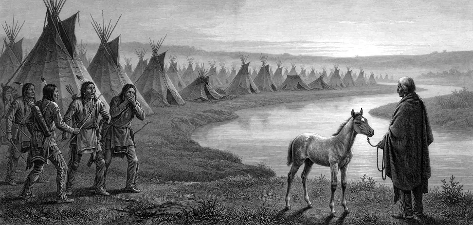
No quería contarlo. Eso lo supe desde el principio.
Durante semanas, cada vez que la conversación se acercaba, el viejo la desviaba. Hablaba de otra cosa: de una cacería, de una mujer, de un caballo que había tenido de joven y que corría más que el viento. O se quedaba callado. O decía que estaba cansado y se tumbaba. Y yo, que tenía diecisiete años pero no era tonto, aprendí a no preguntar.
Pero él sabía que yo sabía. Me lo había dicho la cara de su mujer, que tenía los mismos hoyos que él en las mejillas, y la cara de la nieta viuda, y la de casi todos los adultos del campamento. Me lo había dicho la cantidad de tiendas viejas, abandonadas, que había en el borde del campamento, con las pieles podridas, sin nadie que las usara. Me lo había dicho que en aquella tienda no hubiera hijos ni nietos varones. Me lo habían dicho las cicatrices en los brazos de las mujeres, cortes viejos, en fila, de los que se hacen ellas mismas cuando se les muere alguien.
Y me lo había dicho una yegua.
La había visto en diciembre, entre los caballos del viejo, en la hondonada del río.
El viejo tenía unos veinte caballos, que para un hombre de su edad y su posición no era mucho. Los cuidaba un nieto de su mujer, un muchacho de trece años, serio, que me había enseñado a romperles el hielo de los ollares. Eran de todos los colores: bayos, pintos, castaños, uno negro. Y una yegua gris.
No era vieja de años; tendría nueve o diez. Pero lo parecía. Se le notaba en los ojos, hundidos, con hoyos encima, en el lomo un poco caído, en una manera cansada de mover la cabeza. Y era hermosa todavía, de una manera rara. Era gris claro, casi blanca, con manchas más oscuras en las ancas, como gotas de lluvia en una piedra, y en la frente, entre los ojos, una estrella blanca, limpia, bien dibujada, de cinco puntas casi, como si alguien se la hubiera pintado. Y estaba siempre un poco apartada de los demás. No mucho. Unos pasos. Como si los otros caballos le dejaran sitio.
Le pregunté al muchacho por ella.
—Es del abuelo —me dijo—. Nadie la monta.
—¿Por qué?
El muchacho se encogió de hombros y no contestó. Pero miró hacia la tienda del viejo, y luego al suelo.
Le pregunté a otro, un joven de otra tienda, que hablaba algo de cree. Me dijo lo mismo: nadie la monta. Y cuando insistí, me dijo una palabra en lengua pies negros que no conocía, y se fue.
Esa noche le pregunté al viejo qué significaba. Me miró un rato largo.
—Significa «la que vino del campamento de los muertos» —dijo.
Y no dijo nada más aquella noche.
Lo contó en febrero.
Era una noche tranquila. El frío había aflojado un poco, y había nevado durante el día, una nieve blanda, gruesa, que lo tapaba todo y no hacía ruido. Estábamos solos en la tienda, el viejo y yo. Su mujer había ido con la nieta y los niños a otra tienda, donde había una mujer de parto. El fuego estaba bajo. El viejo fumaba.
—Tú quieres saber lo de la yegua —dijo, sin mirarme.
—Si usted quiere contarlo.
—No quiero. —Dio una calada—. Pero alguien tiene que saberlo, y tú escribes. —Me miró—. No lo escribas ahora. Escríbelo cuando yo esté muerto. Cuando estemos todos muertos.
Se lo prometí.
He cumplido. Ya están todos muertos.
—Fue hace siete inviernos —dijo—. Yo ya era viejo. Ya no iba a la guerra. Pero los jóvenes sí, y aquel verano se habían juntado muchos para ir contra los snakes, al sur. Íbamos a ir lejos, más allá del río de las Leches, a sus tierras. Nos habían robado muchos caballos el año anterior y queríamos recuperarlos. Y yo fui con ellos. No a pelear. A aconsejar. Los jóvenes, entonces, todavía escuchaban a los viejos.
»Fuimos muchos días. Mandamos exploradores delante. Y los exploradores volvieron y dijeron que habían encontrado un campamento de snakes grande, en un valle, junto a un río. Que había muchas tiendas. Pero que era raro. Que no se veía gente. Que no había humo. Que no había caballos pastando, o muy pocos. Que no se oían perros.
»Pensamos que era una trampa. Que los snakes nos habían visto y se habían escondido y nos estaban esperando. Así que lo preparamos bien. Esperamos a la noche. Nos acercamos despacio, por los barrancos. Y al amanecer, todos a la vez, con un grito, nos echamos sobre el campamento con los cuchillos y las mazas y los fusiles.
Se calló. Dejó la pipa.
—Nadie salió —dijo.
—Nadie salió de las tiendas. Nadie gritó. Nadie disparó una flecha. Llegamos hasta las primeras tiendas corriendo, gritando, y nos paramos, porque no había nadie a quien matar.
»Y entonces lo olimos.
»Tú no sabes ese olor. Espero que no lo sepas nunca. Era... —Buscó la palabra—. Era como cuando se te pudre la carne en verano, en la bolsa, pero más. Mucho más. Y algo más, debajo, dulce. Que te entraba por la nariz y por la boca y se te quedaba en la garganta, y en la ropa, y en el pelo, durante días.
»Uno de los jóvenes, uno valiente, se acercó a una tienda y cortó la piel con el cuchillo, de arriba abajo, para entrar. Y miró dentro. Y se echó atrás, y se cayó al suelo, y vomitó.
»Yo fui. Miré.
Se quedó callado mucho rato. Le temblaba la mano.
—Estaban todos dentro. Toda una familia. Tumbados en sus camas. Muertos. Algunos hacía días. Otros no tanto. Estaban... Tenían la piel... —Se tocó la cara, las mejillas, los hoyos—. Cubierta de granos. Granos grandes, como garbanzos, por todo el cuerpo, la cara, las manos, los pies, la boca, los ojos. Pegados unos a otros. Y muchos estaban reventados, y la piel se les caía a tiras, y estaban negros, y... —Se calló—. No había nadie vivo en aquella tienda.
»Fuimos a otra. Igual. Y a otra. Igual. En algunas había alguno vivo, todavía. Un viejo, una mujer, un niño. Tumbados entre los muertos, cubiertos de granos, con fiebre, sin fuerzas para levantarse, mirándonos. Uno nos pidió agua. No se la dimos. No nos atrevíamos a tocarle.
»Eran casi todas así. Todo el campamento. Cien tiendas, o más. Y muy pocos vivos. Y los vivos, muriéndose.
—¿Y qué hicisteis?
El viejo me miró. Y entonces dijo la cosa que me ha perseguido toda la vida. La dijo sin bajar la voz, sin disculparse, con la cara quieta, como quien dice la verdad porque ya no tiene sentido decir otra cosa.
—Cogimos lo que había —dijo—. Éramos guerreros. Habíamos venido a por el botín. Y allí estaba el botín, sin nadie que lo defendiera. Las tiendas, las buenas, las que estaban limpias, las que no tenían muertos dentro. Las pieles. Las ropas. Los escudos, los arcos, las cosas. Y los caballos, los pocos que había, que andaban sueltos por el valle, flacos, sin nadie que los cuidara, porque los muchachos que los cuidaban estaban muertos en las tiendas.
»Yo dije que no. Te lo juro. Yo dije que aquello era malo, que había un poder malo en aquel campamento, que no tocáramos nada. Pero era viejo, y los jóvenes no me escucharon. Habían venido de muy lejos. Estaban hambrientos. Y allí había riquezas para hacer rico a cada uno de ellos. Y los snakes eran nuestros enemigos, y estaban muertos, y nosotros vivos, y eso era una victoria. La mayor victoria que habíamos tenido nunca. Sin perder un hombre.
»Cargamos todo lo que pudimos. Y nos fuimos.
—Al segundo día —dijo— empezó.
»Uno de los jóvenes se puso malo. Fiebre. Dolor de cabeza, de espalda, aquí. —Se tocó la parte baja de la espalda—. Vomitaba. No podía montar. Lo atamos al caballo. Luego otro. Luego otros cinco. Diez.
»Al cuarto día les salieron los granos.
»Para cuando llegamos al campamento, a casa, la mitad de los guerreros estaba mala. Y llegamos. Y trajimos las tiendas nuevas y las pieles y las ropas y los caballos y los enfermos. Y la gente salió a recibirnos con cantos, como se recibe a los que vuelven de una victoria. Las mujeres. Los niños. Los viejos. Nos abrazaban. Nos tocaban. Cogían las cosas.
Hizo un gesto con las dos manos, abriéndolas, como si soltara algo.
—Y así lo llevamos a casa.
No voy a contar todo lo que me contó. Algunas cosas no se pueden escribir, ni siquiera ahora, ni siquiera a oscuras, ni siquiera con la cara pegada al papel.
Contaré que se extendió por el campamento como el fuego por la hierba seca. Que no había tienda sin enfermo. Que los que no estaban enfermos no podían cuidar a los que sí, porque eran demasiados, y porque cuidarlos era enfermar. Que la fiebre era tan alta que los enfermos se levantaban de la cama y salían corriendo de las tiendas, desnudos, gritando, y se tiraban al río para apagar el fuego que tenían dentro. Y que el río estaba helado, porque ya era otoño, y los que se tiraban al río se morían allí mismo, en el agua, y la corriente se los llevaba, y luego, río abajo, se les veía flotar en los remansos.
Contaré que los muertos eran tantos que no había quien los subiera a los árboles o a los andamios, como era costumbre. Que los dejaban en las tiendas y se iban, y abandonaban la tienda con el muerto dentro. Que los perros se comían a los muertos. Que los lobos bajaban de las colinas.
Contaré que murió más o menos uno de cada tres. En aquel campamento y en todos los demás campamentos de los peeagan, y de los kainai, y de los siksika, y de los atsina, y de los cree, y de los assiniboines, porque los que huían del campamento llevaban la enfermedad a los otros campamentos, y los otros campamentos a los fuertes de la Compañía, y los fuertes a los cree del bosque, y así. Por toda la pradera. Por todo el norte. Hasta la bahía.
Eso lo sabía yo. Lo sabía antes de que me lo contara el viejo. En York Factory, en el fuerte, cuando yo llegué, los viejos de la Compañía todavía hablaban de aquel invierno de 1781-82, cuando los cree llegaban al fuerte muriéndose, en las canoas, y se morían en la orilla, y nadie compraba pieles porque no había nadie para cazar castores. En algunos fuertes había muerto la mitad de los indios de la comarca. En otros, nueve de cada diez. Pueblos enteros habían desaparecido.
Y la enfermedad, dijeron los que sabían, había venido del sur. De México. De donde los españoles. Había empezado en la ciudad de México hacía unos años, en 1779, y había ido subiendo, de pueblo en pueblo, de los españoles a los apaches, de los apaches a los comanches, de los comanches a los snakes, por los mismos caminos por los que habían subido los caballos. Por las mismas manos.
—Mis dos hijos murieron —dijo el viejo—. Los dos. Y mi hija. Y la mujer de mi hijo mayor y sus dos niños pequeños. Y la mitad de la familia de mi mujer. Y mis amigos. Casi todos. Los que habían ido conmigo contra los snakes y los que se habían quedado. Yo no sé por qué yo no. Me puse malo. Me salieron los granos. Mira. —Se señaló la cara—. Estuve muchos días sin saber dónde estaba. Mi mujer me cuidó. Ella también se puso mala. Y los dos nos levantamos. Y cuando nos levantamos, mis hijos estaban muertos.
»Hicimos luto. Nos cortamos el pelo. Las mujeres se cortaron los brazos y las piernas, y algunas se cortaron dedos. Regalamos todo lo que tenían los muertos, sus caballos, sus ropas, sus armas, para no verlos más. Lloramos. No cantamos. Los cantos de los muertos son para cuando se muere uno, o dos, o diez. Cuando se mueren todos, no hay cantos. Solo llanto. Pasamos días llorando. Todo el campamento. Día y noche. No se oía otra cosa.
Me miró.
—Y cuando dejamos de llorar —dijo—, supimos una cosa. Que nunca volveríamos a ser el mismo pueblo.
Estuvimos callados mucho tiempo. El fuego se estaba apagando. No me atreví a echar leña.
Al fin le pregunté por la yegua.
El viejo suspiró.
—Era de los snakes —dijo—. Del campamento de los muertos. Estaba allí, en el valle, cuando llegamos. Andaba suelta. Era joven entonces, dos años, tres. Muy bonita. Ya tenía la estrella. Y yo la cogí.
»Yo dije que no tocáramos nada, y cogí la yegua. Así son los viejos. Así son los hombres. La vi, gris, con la estrella, mirándome desde el río, con los muertos detrás, en las tiendas, y no pude dejarla allí. La até con una cuerda y me la llevé.
»Y cuando llegamos a casa y empezó lo que empezó, la gente decía que la culpa era de las cosas que habíamos traído. De las tiendas, de las ropas. Y era verdad, creo. Pero también decían que era de los caballos. De la yegua. Que la yegua había traído la muerte, porque venía del campamento de los muertos, y que había que matarla, o soltarla, o dejarla atrás.
»Yo no la maté. Cuando me levanté de la enfermedad, mis hijos estaban muertos y la yegua estaba viva, en la hondonada, comiendo hierba, gris, con su estrella. Y la miré. Y pensé: tú no tienes la culpa. Tú también vienes de allí. Tú también has perdido a tu gente.
Se quedó callado.
—Nadie la monta —dijo—. Nadie la quiere. Dicen que trae mala suerte. Pero ha tenido potros. Seis. Algunos con la estrella. Los he regalado todos, lejos, a otros pueblos, a los kutenai, a los cree, a gente que no sabía de dónde venían. Para que no los mataran aquí. Y ella sigue conmigo.
Me miró, con los ojos brillantes a la luz de las brasas.
—Somos los dos viejos —dijo—. Los dos venimos del campamento de los muertos. Nos entendemos.
Salí de la tienda antes del amanecer, sin poder dormir.
Había dejado de nevar. La luna estaba baja, en el poniente, sobre las montañas, y la nieve brillaba azul. Bajé a la hondonada. Los caballos dormían, juntos, apretados. Y un poco apartada, unos pasos, gris contra la nieve, como una sombra pálida, estaba la yegua.
Me acerqué. Levantó la cabeza. Me miró con sus ojos hundidos, negros, con pestañas largas. La estrella de la frente era más blanca que la nieve.
No le puse la mano en el cuello. No sé por qué. Me quedé allí, a unos pasos, mirándola, y ella me miró a mí, mucho rato, sin moverse, echando vaho por la nariz.
Pensé en el viaje que habría hecho. Desde el sur. Desde los snakes. Y antes de los snakes, quién sabe. Los utes, los comanches. Los españoles. Mil millas, o dos mil. De mano en mano. Los caballos y la viruela por el mismo camino.
Pensé que nadie sabría nunca de dónde venía aquella yegua.
Y nadie lo sabe.
Los mandanes
San Luis de Ilinueses · julio-septiembre de 1797
Luc
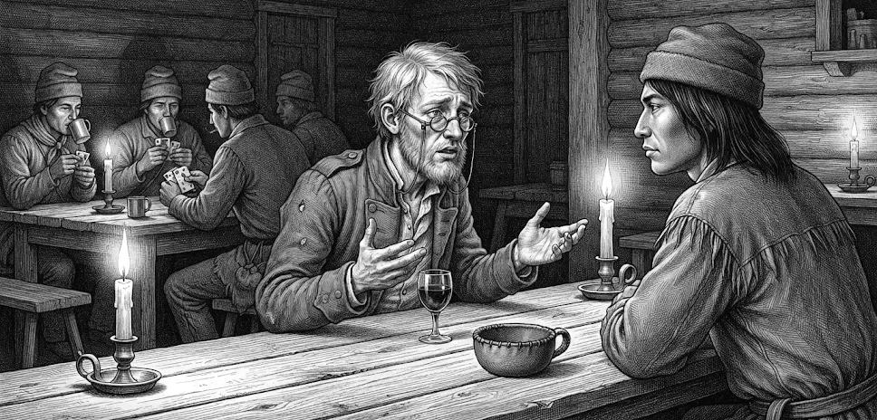
El galés volvió.
Llegó en julio de 1797, casi un año y medio después de que Luc lo dejara en la orilla del fuerte de los omahas haciéndole adiós con el sombrero. Bajó por el Misuri en una piragua pequeña con tres hombres, flaco como un palo, con la barba rubia hasta el pecho, las gafas rotas atadas con un cordel y una casaca española azul, de oficial, que le quedaba enorme. Saltó al embarcadero de San Luis, miró alrededor, como había mirado Vial cinco años antes, y no se rio ni lloró. Se quedó quieto, con las manos colgando, como alguien que ha olvidado para qué ha venido.
Luc lo reconoció de lejos y bajó corriendo.
—¡Evans!
El galés lo miró. Tardó un momento en reconocerlo. Luego le dio la mano, flojo, y dijo en su francés malo:
—Llegué.
—¿A los mandanes?
—A los mandanes.
—¿Y hablaban galés?
Evans se quedó mirándolo. Detrás de las gafas rotas tenía los ojos muy cansados.
—No —dijo.
Le contó todo aquella noche, en la taberna de los Labbadie, y Luc le pagó el vino.
Había salido del fuerte de los omahas en junio del año anterior, con unos pocos hombres y una piragua, río arriba. Había pasado por los poncas, por los sioux, por los arikaras. Los sioux habían querido quitarle la mercancía. Los arikaras le habían recibido bien. Y el 23 de septiembre, después de tres meses de remar y sirgar, había llegado a los mandanes.
—Son dos pueblos —contaba—. Dos, en lo alto de unos barrancos, junto al río, uno a cada lado. Y otros tres más arriba, de otra gente, los hidatsas, que viven con ellos. Casas redondas de tierra, como las de los omahas, pero más grandes, más bonitas, con un patio en medio del pueblo. Y campos de maíz, de calabazas, de judías, de girasoles, en las orillas. Y caballos. Y perros. Muchos perros.
—¿Y los ojos azules?
Evans se encogió de hombros.
—Algunos tienen la piel un poco más clara. Algunos el pelo castaño. Algunos, muy pocos, los ojos grises. —Bebió—. Pero eso puede ser porque los franceses y los ingleses llevan cincuenta años yendo a comerciar allí y durmiendo con sus mujeres. No hace falta ningún príncipe galés para eso.
Luc no dijo nada.
—Y las barcas —siguió Evans—. Las barcas redondas, de cuero. Las tienen. Es verdad. Una piel de bisonte estirada sobre un armazón de ramas de sauce, redonda como un cuenco. Igual que los coracles de Gales. Igual. Me quedé mirándolas un día entero. —Se rio, sin ganas—. Y luego me di cuenta de que si tienes pieles grandes y ramas flexibles y un río que cruzar, haces una barca redonda. En Gales y aquí. Igual que haces una casa redonda si tienes tierra y troncos. No hace falta que nadie te lo enseñe.
Bebió otra vez.
—Les hablé en galés —dijo—. A los viejos, a los jefes. Les recé el padrenuestro en galés. Les canté canciones de mi pueblo. Les dije palabras sueltas, de las más antiguas, de las que no cambian. Bara, pan. Dŵr, agua. Tad, padre. Mam, madre. Me miraban. Muy educados. Muy serios. Y no entendían nada.
Se quitó las gafas y se frotó los ojos.
—No hay indios galeses, Luc —dijo—. No los hay. Me he cruzado el mar y me he pasado dos años río arriba para descubrir que una historia que me contaba mi abuela junto al fuego era mentira.
Pero había hecho otras cosas. Eso también lo contó, con un poco más de ganas, cuando el vino empezó a hacerle efecto.
Había llegado a los mandanes y había encontrado allí un puesto de los ingleses. De los canadienses, de Montreal, de la Compañía del Noroeste, que bajaban hasta allí desde el norte, desde el río Assiniboine, cruzando la pradera a caballo y en trineos de perros. Y Evans, que tenía órdenes de Mackay y de los españoles, había entrado en el puesto, lo había declarado territorio del rey de España, había izado la bandera española, había repartido medallas con la cara del rey entre los jefes mandanes, y les había dicho que desde ese día no comerciaran más con los ingleses, que comerciaran con San Luis.
—¿Y te hicieron caso?
—Al principio. Les di regalos. Muchos. Más que los ingleses. Me hicieron caso mientras duraron los regalos. Después se acabaron los regalos.
Y los canadienses habían vuelto en invierno. Uno en particular, un tal Jusseaume, un francés de Canadá casado con una mandana, que vivía allí, que hablaba la lengua, que conocía a todos. Le había odiado desde el primer día.
—Intentó matarme —dijo Evans—. Una noche. Entró en mi casa con un cuchillo y un intérprete. Me habría matado si no hubieran estado allí mis hombres. Y luego intentó que los mandanes me mataran. Les dijo que yo era un brujo, que traía enfermedades, que los españoles iban a venir a quitarles las tierras. Y los mandanes... —Hizo un gesto vago—. Los mandanes tienen mucho miedo a las enfermedades. Por lo de antes.
—¿Qué de antes?
Evans le miró.
—La viruela —dijo—. Hace quince o dieciséis años. ¿No lo sabías?
Luc dijo que no.
—Eran nueve pueblos —dijo Evans—. Los mandanes. Nueve. Grandes. Con miles de personas. Más abajo, en el río, más cerca de los arikaras. Lo dicen ellos y lo dicen los franceses viejos que comerciaban con ellos antes. Y llegó la viruela, del sur, del oeste, nadie sabe de dónde, en el año ochenta y uno, más o menos. Y se murieron casi todos. De nueve pueblos quedaron dos. Los supervivientes se juntaron y subieron río arriba, a donde están ahora, al lado de los hidatsas, para protegerse de los sioux, que no se murieron tanto, porque no vivían en pueblos, y que ahora son más fuertes que ellos y los atacan cada verano.
»Los pueblos viejos están ahí todavía, río abajo. Los vi al subir. Montones de tierra, redondos, con hierba encima, donde estaban las casas. Cientos. Y huesos. Por todas partes. En las orillas, en los barrancos, entre la hierba. Huesos blancos, de personas. Nadie los enterró. No quedó nadie para enterrarlos.
Luc se quedó quieto, con la jarra en la mano.
Pensó en los omahas. En el viejo omaha que le había hablado del caballo, en el fuerte, aquel invierno. Recordó que tenía la cara picada de hoyos. Y otros también. Muchos. No había pensado en ello. Había visto tantas caras así en su vida, en San Luis, en Nueva Orleans, entre los osages, que ya no las veía.
—Y Pájaro Negro —dijo Evans, en voz más baja—. El jefe de los omahas. El del arsénico. Dicen que fue entonces cuando se hizo tan poderoso. Porque la viruela mató a todos los demás jefes, y a él no. Y la gente pensó que él tenía un poder. Que él la había mandado. Que podía matar con desearlo.
Se encogió de hombros.
—A lo mejor por eso empezó lo del arsénico —dijo—. Para que siguieran creyéndolo.
Evans se quedó en San Luis aquel verano. Bajó a Nueva Orleans, a rendir cuentas al gobernador. Allí empezó a beber. Bebía mucho. Se ponía triste, luego furioso, luego lloraba en galés. Luc lo supo por los remeros que iban y venían. Y supo, dos años después, que había muerto allí, en Nueva Orleans, en la casa del gobernador, de fiebres y de vino, con veintinueve años. Solo. Lejos de Gales. Sin haber encontrado a sus indios.
Le dio mucha pena. Más de la que esperaba.
Pero antes de irse, la última noche, en la taberna, Evans le dijo una cosa que Luc no olvidó.
—¿Sabes lo que me dijo un jefe mandán? —dijo—. Un viejo, el último día, cuando me iba. Le pregunté, ya por última vez, ya sin esperanza, si en su pueblo había alguna historia de hombres blancos que llegaron hace mucho tiempo por el mar, en barcos. Me miró muy serio. Y me dijo: «En mi pueblo hay historias de todo. De cuando no había caballos, y de cuando llegaron. De cuando éramos muchos, y de cuando nos morimos. De cuando no había blancos, y de cuando llegaron. Pero de los blancos que llegaron hace mucho no hay historias. Porque si hubieran llegado, nos acordaríamos. Los blancos no son cosas que se olviden».
Evans se rio. Por primera vez de verdad aquella noche.
—Tenía razón —dijo—. No somos cosas que se olviden.
En agosto, Clamorgan buscó gente para volver a subir.
La Compañía del Misuri estaba en ruinas. Las expediciones habían costado una fortuna. Mackay se había vuelto a San Luis, se había peleado con Clamorgan y estaba buscando otro trabajo. Evans se había ido. Los ingleses seguían en los mandanes, y los españoles no tenían dinero ni soldados para echarlos. Pero Clamorgan, que no se rendía nunca y que debía dinero a medio pueblo, quería mandar una piragua más, pequeña, con unos cuantos hombres y algo de mercancía, para que el puesto de Evans entre los mandanes no se perdiera del todo. Para que hubiera un español, aunque fuera de mentira, aunque fuera un remero, pasando el invierno allí.
Luc se ofreció.
No sabía muy bien por qué. Tenía veintiséis años. Su madre se estaba haciendo mayor. Lambert le decía que se casara, que se buscara una casa, que dejara de remar. Madame Chouteau, la vieja, le dijo que si se iba no contara con volver a su cocina. Y aun así se ofreció.
Puede que fuera por Evans. Por aquel muchacho de las gafas que se había cruzado el mar por una historia de su abuela. Puede que fuera por los huesos blancos en la orilla. O por la yegua gris de Vial, la del comanche viejo que lloraba. O por las palabras del jefe mandán: los blancos no son cosas que se olviden.
O puede que fuera, simplemente, porque quería ver qué había río arriba. Más allá de los omahas. Más allá de donde había llegado nunca nadie de San Luis, salvo un galés loco.
Su madre no lloró. No le hizo camisa. Le miró, en la puerta de la cocina, con los brazos cruzados, y le dijo en pawnee:
—Te vas a casar con una de allí arriba.
—No.
—Sí. —Le cogió la cara con las dos manos, como cuando volvió de Nueva Orleans—. No me importa. Pero vuelve.
Lambert le acompañó al embarcadero. Llevaba al niño mayor de la mano, que ya tenía cinco años y quería ir también. Lambert estaba serio.
—Mi madre quiere que te pregunte una cosa —dijo.
—¿Qué?
—Si allí arriba, entre los mandanes, hay comanches. O gente que conozca a los comanches. O cautivos de Nuevo México. Que preguntes. Por si alguien sabe algo.
—Lambert, los mandanes están a mil millas de Nuevo México.
—Ya lo sé. Pregunta.
Luc le prometió que preguntaría.
Y en lo alto del barranco, en la parte alta del pueblo, junto a las rosas, esta vez Luc estuvo seguro: había una mujer vestida de oscuro, de pie, mirando hacia el río. No hizo ningún gesto. Solo miró.
La piragua salió a la corriente. Los remeros empezaron a cantar. Y Luc remó hacia el norte, hacia el Misuri, hacia los mandanes, hacia un invierno que no se parecería a ninguno.
Las mulas con letras
El río Bow, primavera de 1788 · y Longueuil, 1846
Lo cuenta David Thompson
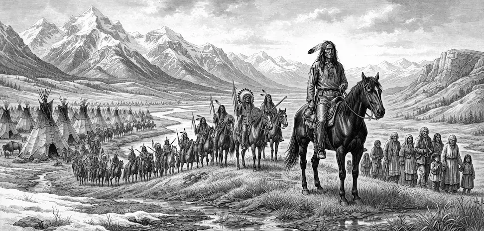
La primavera llega a aquellas llanuras de golpe, como un ejército.
Un día hace frío. Al siguiente, sin aviso, sopla del oeste, por encima de las montañas, un viento caliente, seco, que los piegan llaman el Come-nieves y que en una noche funde medio pie de nieve y deja la pradera parda y empapada, con charcos por todas partes reflejando el cielo. Los ríos se rompen. El hielo del Bow estalló una madrugada de marzo con un ruido de cañonazos, y bajó durante días en bloques enormes, chocando, montándose unos encima de otros, arrancando árboles de las orillas. Volvieron los gansos, en bandadas que tardaban una hora en pasar. Volvieron las grullas, gritando muy alto. Y los bisontes empezaron a moverse hacia el norte.
Y en abril volvió la partida de guerra.
Había salido en otoño, antes de que yo llegara, hacia el sur. Unos doscientos cincuenta hombres, me dijeron, que para los piegan era muchísimo. Al mando iba el jefe de guerra, Kootanae Appe.
No lo había visto todavía. Lo conocía de oídas, como todo el mundo. En el campamento, cuando se hablaba de él, la gente bajaba la voz, no de miedo, sino de respeto. Era, decían, el hombre más valiente de los piegan, el que mejor mandaba, el que más enemigos había matado y menos hombres propios había perdido. Y era, me dijo Saukamappee, un hombre justo, que no hacía la guerra por gusto, solo cuando hacía falta, y que cuando la hacía, la hacía bien.
Llegaron una mañana de sol, por el sur, por encima de la loma, en una fila larga, cantando. Todo el campamento salió a recibirlos. Las mujeres gritaban de alegría, con aquel trino agudo que hacen con la lengua. Los niños corrían entre los caballos. Los perros ladraban. Y delante de todos, en un caballo negro enorme, venía él.
Era el hombre más alto que he visto nunca. Más de seis pies y medio, calculé. Ancho de hombros, delgado de cintura, con la cara grave, de pómulos altos, sin pintar, y el pelo suelto, largo, con una sola pluma de águila. No llevaba más adorno que un collar de garras de oso. No sonreía. Saludaba a la gente con la mano, y la gente se callaba al verle pasar.
Detrás de él venían los guerreros. Y detrás de los guerreros, los caballos.
Eran unos treinta, conté. Caballos de todos los colores, buenos, gordos, de los snakes, que habían robado en el sur. Y entre ellos, unos animales que no había visto nunca en aquellas llanuras, aunque los conocía de Inglaterra.
Mulas.
Quince, conté. Pequeñas, oscuras, de orejas largas, con las patas finas y los cascos pequeños, cargadas con fardos. Iban atadas unas a otras con cuerdas de cuero, en fila, y caminaban con esa paciencia que tienen las mulas, que parece que no les importa nada del mundo.
Los niños las rodeaban, se las señalaban, se reían de sus orejas. Los viejos las miraban con desconfianza. Nadie en el campamento había visto nunca una mula. Ni Saukamappee, que lo había visto casi todo.
—¿Qué es eso? —me preguntó el viejo, que había bajado conmigo a ver llegar la partida—. ¿Un caballo enfermo?
Le expliqué que no. Que era hija de un burro y una yegua. Que los españoles las criaban mucho, porque eran más fuertes que los caballos para la carga y aguantaban más el hambre y la sed. Que no tenían hijos.
—¿No tienen hijos? —El viejo se quedó mirándolas, muy serio—. ¿Ninguno?
—Ninguno.
—Entonces —dijo— son como los guerreros que mueren jóvenes. Trabajan y no dejan nada.
Me acerqué a una. Estaba quieta, mirando al suelo, con las orejas hacia atrás. Tenía el pelo del costado lleno de mataduras, de rozaduras de la carga, y en el anca, en el anca izquierda, una marca.
Una marca a fuego. Vieja, blanca, en la piel. Era una figura que no entendí al principio: una línea curva, otra recta, como una letra. Me acerqué más. Y lo vi. Era una letra. Una A, con algo encima, como una cruz o un sombrero, y una curva debajo.
Miré a las otras mulas. Todas tenían marca. No todas la misma. Una tenía algo como una S atravesada por una raya. Otra, unas figuras que parecían unas tijeras. Otra, una cruz con dos brazos.
Eran hierros. Hierros de ganadero. De los que se ponen en Inglaterra, y en España, y en todas partes donde hay dueños, para saber de quién es cada animal.
Aquellas mulas tenían dueño. Un dueño que había mandado a un herrero hacer un hierro con su letra, en algún sitio, muy lejos, y había calentado el hierro en un fuego, y se lo había puesto en el anca a cada mula, para que el mundo supiera que eran suyas.
Y estaban aquí. A los pies de las Montañas de Piedra.
Esa noche hubo fiesta. La partida había vuelto sin perder un solo hombre, con caballos, mulas, cabelleras y botín. Bailaron hasta el amanecer, alrededor de grandes fuegos, con los tambores sonando y las cabelleras de los snakes en lo alto de unos palos, y los guerreros contando sus hazañas uno a uno, de pie, con un palo en la mano, mientras los demás gritaban.
Yo me quedé al lado de Saukamappee, que no bailaba, y escuchaba. Y escuché a uno de los guerreros contar algo que me hizo poner la piel de gallina.
Contaba que habían ido muy al sur. Más que nunca. Que habían pasado el país de los snakes, y más allá, a un país de montañas secas, de rocas rojas, sin hierba casi. Y que allí habían encontrado a otros snakes, que no conocían, y les habían atacado de noche, y les habían quitado los caballos y las mulas. Y que esos snakes tenían cosas raras: frenos de hierro en la boca de los caballos, sillas de cuero con un pomo alto, estribos de madera. Y que uno de ellos, al que mataron, llevaba al cuello una cosa brillante de metal, con un hombre pequeño colgado de unos palos cruzados.
Lo sacó de la bolsa y lo levantó a la luz del fuego para que todos lo vieran.
Era un crucifijo. De plata, o de algo que parecía plata, pequeño, gastado.
La gente lo miró con curiosidad. Algunos se rieron. El guerrero lo volvió a meter en la bolsa, contento, como un trofeo.
Yo me quedé mirando el fuego.
Por los hierros, por los frenos, por el crucifijo, aquellos snakes habían comerciado con españoles, o habían sido sus vecinos, o les habían robado. Y aquellas mulas habían salido de algún rancho de Nuevo México, o de algún sitio así, con un hierro en el anca, y habían pasado de mano en mano hacia el norte, igual que los caballos, igual que el crucifijo, igual que todo. Hasta aquí.
El mundo era mucho más pequeño de lo que me habían enseñado en el colegio.
Pocos días después, yo me fui.
Los hombres de la Compañía teníamos que volver a Manchester House antes del verano, con las pieles del invierno y con las noticias. Habían venido a buscarnos dos cree, con caballos. Recogí mis cosas, que eran pocas. El cuaderno. El termómetro en su caja. La brújula. Dos camisas. Unos mocasines nuevos que me había hecho la mujer del viejo, con las suelas de piel de bisonte cruda, duras, y las palas bordadas con púas de puercoespín teñidas de rojo y amarillo.
El último día fui a despedirme de él.
Estaba sentado a la puerta de su tienda, al sol, como el primer día, con la manta sobre los hombros y la pipa en la mano. Me senté a su lado. Estuvimos un rato callados, mirando el campamento, los caballos en la hondonada, los niños jugando, las mujeres que raspaban pieles. La nieve ya se había ido de la pradera y se veía la hierba nueva, verde, muy corta, saliendo entre la vieja.
—¿Vas a volver? —me preguntó.
Le dije que no lo sabía. Que dependía de la Compañía. Que seguramente sí, algún día.
—Yo no voy a estar —dijo—. Ya lo sabes.
No dije nada.
—No importa —dijo—. Tú te acuerdas. Eso basta.
Fumó.
—Una cosa más —dijo—. Tú vas a ir por muchos sitios. Ríos, montañas, pueblos. Lo veo en tus ojos. Eres de los que no se quedan. Vas a ir hacia el sur, algún día. Hacia el Misuri. Hacia donde vienen los caballos. —Me miró—. Si ves alguna vez un caballo gris con una estrella como la de mi yegua, no lo mates. Aunque tengas hambre. Aunque te ataque. Es de los nuestros.
Le pregunté qué quería decir.
Se encogió de hombros.
—No sé —dijo—. Es lo que me ha venido a la cabeza. Los viejos decimos cosas así. Haz lo que quieras.
Se levantó, con trabajo. Me puso la mano en el hombro, como yo le ponía la mano en el cuello a los caballos.
—Vete —dijo—. Los cree te esperan.
Me fui.
Cuando estaba ya en lo alto de la loma, a caballo, me di la vuelta. El campamento se veía entero, abajo, junto al río verde, con sus doscientas tiendas blancas y su humo y sus caballos. Busqué su tienda. La encontré. Él seguía sentado a la puerta, pequeño, con la manta. No sé si me veía. Levanté la mano.
No sé si me contestó.
Longueuil, 1846
He tardado cuatro días en escribir este capítulo. La vista se me va. Hay mañanas en que no distingo las letras ni con la lupa, y tengo que esperar a la tarde, cuando el sol entra de lado por la ventana, para escribir unas líneas. Charlotte dice que se lo dicte, que ella no sabe escribir pero puede aprender. Le he dicho que no. Que es cosa mía. Que si no lo escribo yo, con mi mano, no vale.
No es verdad. Valdría igual. Pero no quiero que lo escriba ella. No sé explicar por qué.
Quiero contar una cosa que no conté entonces, porque entonces no la sabía.
Muchos años después, en 1807, crucé por fin las Montañas de Piedra, por un paso al norte, con Charlotte y los niños, y bajé al otro lado, al río Columbia, al país de los kutenai. Y allí, entre los caballos de un kutenai viejo con el que comerciaba, vi una yegua gris. Joven. Con manchas en las ancas como gotas de lluvia en una piedra. Y una estrella blanca en la frente.
Le pregunté de dónde la había sacado.
Me dijo que era hija de un potro que le había regalado, hacía muchos años, un piegan viejo, del otro lado de las montañas. Un cree que vivía con los piegan. Que se llamaba Hombre Joven.
No la compré. No tenía con qué. Y además, me pareció que no estaba bien.
Le dije al kutenai, sin explicarle por qué, que la cuidara mucho.
Se rio de mí, como se reían los niños piegan cuando me caía del caballo. Pero me dijo que sí.
El que medía las estrellas
Pueblos mandanes, alto Misuri · 30 de diciembre de 1797-10 de enero de 1798
Luc
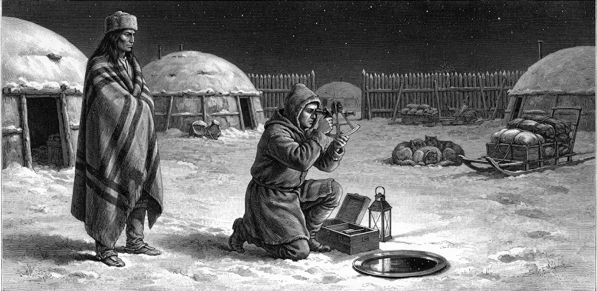
Llegaron a los mandanes a finales de octubre, con el río empezando a helarse por las orillas, cinco hombres en una piragua y la mercancía justa para no morirse de vergüenza. Clamorgan les había dado una bandera española, una caja de medallas sobrantes de Evans y una carta para los jefes que nadie sabía leer. Y les había dicho que aguantaran allí hasta la primavera, pasara lo que pasara, para que el rey de España pudiera decir que tenía gente entre los mandanes.
Aguantaron.
Se instalaron en la casa que había sido de Evans, en el pueblo de abajo, el que los franceses llamaban Matootonha. Una casa redonda de tierra, como todas, grande, de cuarenta pies de ancho, hundida un poco en el suelo, con cuatro postes enormes en el centro sosteniendo el techo, y vigas, y ramas, y esteras, y encima una capa de tierra de un palmo, con hierba. Por dentro era oscura, cálida, olía a humo y a maíz tostado. En invierno metían dentro los caballos, en un rincón con una cerca de palos, para que no se helaran ni se los robaran los sioux. Luc dormía a diez pies de ellos y los oía respirar por las noches, y masticar, y cambiar de pata.
El pueblo tenía unas cuarenta casas así, apretadas alrededor de una plaza, con una empalizada de troncos y un foso, en lo alto de un barranco sobre el río. Al otro lado del río, enfrente, estaba el otro pueblo mandán. Y más arriba, a unas millas, los de los hidatsas. Y alrededor, en las orillas, los campos de maíz, ahora pelados, con los tallos secos asomando por la nieve. Y más allá, en todas direcciones, la pradera blanca.
Los mandanes los recibieron bien. Al principio por los regalos, y después, cuando se acabaron los regalos, por algo que Luc tardó en entender y que acabó entendiendo: porque eran pocos, y pobres, y no eran peligrosos, y porque los mandanes eran gente que recibía bien a los forasteros. Su pueblo había sido, desde siempre, desde antes de los blancos, un mercado. El sitio adonde venían todos. Los crow del oeste traían caballos y pieles de bisonte curtidas, y cosas de los shoshones y de más allá, de las montañas, de los españoles: frenos, mantas de lana, conchas del mar del Oeste. Los cree y los assiniboines del norte traían fusiles, pólvora, cuchillos, hachas, de los ingleses. Y los mandanes les daban a todos maíz, calabazas, judías, tabaco. Y en la plaza del pueblo, cada verano, se juntaba medio continente.
Un mercado. Como el de Taos, pensó Luc, del que hablaba Vial. Como el de San Luis. Como el de Nueva Orleans. En todas partes había un sitio donde se juntaba la gente a cambiar cosas, y en todas partes ese sitio era el centro del mundo para quien vivía allí.
Luc aprendió algo de la lengua. Muy poco. Aprendió a comer maíz de veinte maneras. Aprendió a cruzar el río en una de aquellas barcas redondas de piel que habían hecho soñar a Evans, girando como una peonza en la corriente, entre las risas de las muchachas que le enseñaban. Una de ellas, sobre todo. Se llamaba, en su lengua, algo que quería decir Mazorca Que Se Abre, y tenía diecinueve años, una risa muy fuerte y un marido muerto en la guerra con los sioux el verano anterior.
Su madre, pensó Luc, lo había sabido antes que él.
El 30 de diciembre llegaron los ingleses.
Los vieron venir desde lejos, desde el norte, una mañana muy fría, por la pradera blanca: una fila de puntos negros que poco a poco se fueron convirtiendo en hombres y en perros. Eran nueve o diez hombres, a pie, con raquetas en los pies, y varios trineos tirados por perros, cargados hasta arriba, y venían despacio, muy despacio, con el viento de frente, que levantaba la nieve en remolinos.
Los mandanes salieron a recibirlos. Los conocían. Algunos, al menos. Uno de ellos, que venía delante, gordo, con una barba negra cubierta de escarcha, era Jusseaume. El que había querido matar a Evans. El que vivía en el pueblo con su mujer mandana y se había ido al norte en otoño a buscar mercancía.
Luc se quedó en la puerta de la casa de Evans, con la bandera española doblada dentro, y los vio llegar, y pensó que aquello se iba a poner feo.
No se puso feo.
Jusseaume le vio. Le miró de arriba abajo. Vio la casa, y supo de quién había sido, y supo quién era Luc, o de dónde venía. Y escupió en la nieve. Pero no dijo nada. Y siguió hacia su casa.
Detrás de él venía un hombre joven que no conocía.
Era inglés. O lo parecía. De unos veintisiete años, de estatura mediana, ancho, moreno, con el pelo negro cortado recto sobre la frente como el de un niño o un cura, la cara curtida de frío, la nariz corta y un poco chata. Iba envuelto en un capote de lana con capucha, con raquetas y mocasines, y llevaba a la espalda, atada con correas, una caja de madera, como de violín, que no soltaba nunca.
Cojeaba un poco, de la pierna derecha. Y tenía el ojo derecho raro, quieto, con una nube.
Lo que más le llamó la atención a Luc, la primera vez que lo vio, fue que miraba todo. No como miran los comerciantes, que miran las cosas para saber cuánto valen. Este miraba como si quisiera acordarse. Las casas. El río. La empalizada. Los barrancos. A la gente. Se paraba, miraba, y luego sacaba un cuaderno de debajo del capote y apuntaba algo, con los dedos rojos de frío, con un lápiz.
—¿Quién es ese? —le preguntó Luc a un mandán.
El mandán se encogió de hombros.
—Dice que viene a ver dónde estamos —dijo.
Luc no entendió.
—Ya sabemos dónde estamos —dijo el mandán, y se rio.
Lo entendió aquella noche.
Salió de la casa de Evans, ya tarde, a orinar. Hacía un frío terrible. El cielo estaba despejado, negro, lleno de estrellas, tan claras y tan cerca que parecía que se podían coger con la mano. No había luna. La nieve crujía bajo los pies.
Y en mitad de la plaza del pueblo, en la nieve, solo, estaba el inglés.
Estaba arrodillado junto a la caja de madera, abierta. Dentro, en un hueco forrado de terciopelo, había un aparato de latón, brillante, con forma de trozo de tarta, con un arco graduado abajo, unos espejos pequeños y un catalejo. Y al lado, en la nieve, una bandeja de algo que brillaba como la plata, quieta, plana.
El inglés tenía el aparato en la mano, delante del ojo izquierdo, el bueno, y miraba por el catalejo, y movía muy despacio una palanca en el arco, y miraba la bandeja, y luego el cielo, y otra vez el catalejo. Y luego, sin dejar el aparato, con la otra mano, apuntaba algo en el cuaderno, a la luz de un farolillo que había dejado en la nieve.
Luc se quedó mirándolo un buen rato. No se dio cuenta de que se le estaban helando los pies.
Al final el inglés bajó el aparato, se frotó el ojo bueno, que le lloraba de frío, y le vio.
—Bonsoir —le dijo, en un francés con acento inglés pero correcto.
—Bonsoir —dijo Luc.
—¿Le interesa?
Luc dijo que sí. Que no sabía qué era.
El inglés sonrió.
—Venga —dijo—. Le enseño.
Se llamaba David Thompson y era geógrafo.
Luc no sabía lo que era un geógrafo. Thompson se lo explicó, allí, en la nieve, con el sextante en la mano, mientras se les helaban a los dos las narices.
—Hago mapas —dijo—. Pero para hacer un mapa hay que saber dónde está cada cosa. No más o menos. Exactamente. Y para saber dónde está una cosa exactamente, hay que mirar las estrellas.
Le enseñó la estrella del norte, la que no se mueve, la que está siempre en el mismo sitio. Le enseñó cómo, con el sextante, se medía la altura de esa estrella sobre el horizonte. Y le explicó que esa altura, en grados, era la latitud. Cuánto al norte se estaba. Que si se iba hacia el sur, la estrella bajaba. Y si se iba hacia el norte, subía. Que en el polo estaba justo encima de la cabeza.
—¿Y la bandeja? —preguntó Luc.
—Mercurio. Un horizonte artificial. Aquí no hay mar, y el horizonte de la pradera no es bastante recto. Así que uso el reflejo de la estrella en el mercurio, que siempre está perfectamente plano. —Sonrió—. Lo malo es que con este frío el mercurio a veces se hiela.
—¿El mercurio se hiela?
—A cuarenta bajo cero, sí. Lo he visto. Como un trozo de plomo.
Luc no dijo nada. No sabía qué era el mercurio. Pero le pareció que aquel hombre sabía cosas que nadie más sabía.
—¿Y para qué quiere saber cuánto al norte están los mandanes?
Thompson le miró, con el ojo bueno, a la luz del farolillo.
—Para saber si son ingleses o españoles —dijo.
Se lo explicó en los días siguientes. Se vieron mucho, porque los dos eran forasteros y los dos estaban solos, a su manera, y porque Thompson tenía mucha curiosidad por San Luis, por los españoles, por el Misuri de abajo, y Luc por todo lo demás.
Los ingleses y los americanos, le dijo Thompson, habían firmado un tratado al final de su guerra, unos años antes. Y en ese tratado habían puesto que la frontera entre Canadá y los Estados Unidos iba por una línea que pasaba por los Grandes Lagos y luego seguía hacia el oeste hasta el nacimiento del Misisipi. Y nadie sabía exactamente dónde nacía el Misisipi. Ni dónde estaba la línea. Ni de quién eran las tierras del Misuri de arriba.
—Mi compañía —dijo Thompson— quiere saber si sus puestos están del lado inglés o del americano. Y si los mandanes, que comercian con nosotros, están en tierra inglesa o en tierra del rey de España. Porque si están en tierra española, su gente —señaló a Luc con la barbilla, sonriendo— tiene derecho a echarnos. Como intentó el galés.
—¿Y en qué tierra están?
Thompson se encogió de hombros.
—Según mis cálculos, a cuarenta y siete grados y diecisiete minutos de latitud norte —dijo—. Bastante al sur de la línea. —Se rio—. Así que, en teoría, estoy en tierra de su rey. Pero no se lo diga a nadie.
Luc no se lo dijo a nadie.
Pero aquella noche, en la casa de Evans, tumbado en sus pieles, a diez pies de los caballos, oyéndolos respirar, pensó en ello. En que unos hombres, en algún sitio, muy lejos, en Londres, en Madrid, en una ciudad americana, se sentaban en una mesa y trazaban líneas en un papel. Y que luego mandaban a un muchacho medio ciego con un aparato de latón a la otra punta del mundo, a arrodillarse en la nieve a cuarenta bajo cero, para ver por dónde pasaban esas líneas. Y que los mandanes, que vivían allí desde antes de que nadie se acordara, no sabían nada de esas líneas. Ni falta que les hacía.
«Ya sabemos dónde estamos», había dicho el mandán.
La última noche, antes de que Thompson se fuera, bebieron juntos.
No mucho. Thompson no bebía casi. Era muy religioso, a su manera inglesa, y decía que el aguardiente era la ruina de los indios y de los blancos que comerciaban con ellos, y no lo llevaba nunca en sus trineos, para disgusto de sus hombres. Pero aquella noche Luc tenía una botella de vino de Nueva Orleans que había traído desde San Luis y guardado para una ocasión, y Thompson aceptó un vaso. Y luego otro.
Hablaron de muchas cosas. De San Luis y de Montreal. De los osages y de los cree. De Vial, el francés desnudo, que había abierto el camino de Santa Fe, y que Thompson no conocía, y de cuya historia se rio mucho. Y de Evans. Thompson había oído hablar de Evans. Sabía lo de los indios galeses.
—Yo soy galés —dijo Thompson, de pronto.
—¿Usted?
—Mis padres. Nací en Londres, pero mis padres eran galeses. Mi padre murió cuando yo tenía dos años. —Miró el vaso—. Sé algunas palabras. Bara. Dŵr. Tad.
Luc se quedó mirándolo.
—Evans les dijo esas palabras a los mandanes —dijo—. Las mismas.
—Ya lo sé —dijo Thompson—. Yo también se las he dicho, esta semana. Por si acaso. —Sonrió un poco—. No las entienden.
Se rieron los dos.
Más tarde, ya con la botella vacía y el fuego bajo, Luc le preguntó por los caballos. De dónde venían los de los indios del norte. Thompson le contó lo que sabía. Que venían del sur, de los españoles, a través de los snakes. Le habló de un viejo cree que había vivido con los piegan, junto a las montañas, en cuya tienda él había pasado un invierno de muchacho, diez años antes. Que le había contado cómo habían visto el primer caballo. Muerto. Con una flecha en la tripa. Y cómo lo habían llamado el Gran Perro.
Luc le habló de su madre. De los panis. Del caballo y de los viejos que ya no se quedaban atrás. Y le habló de Vial, y de la historia del comanche viejo que lloraba por un caballo gris con una estrella en la frente.
Thompson se quedó callado un momento.
—El viejo cree tenía una yegua así —dijo—. Gris. Con una estrella. Que había sacado de un campamento de snakes muertos de viruela. Nadie la montaba.
Se miraron.
—Hay muchos caballos grises con una estrella —dijo Luc.
—Muchísimos —dijo Thompson.
Y se rieron otra vez, un poco borrachos, y no hablaron más de eso.
Thompson se fue el 10 de enero, al amanecer, con sus hombres, sus perros, sus trineos y su caja de madera, hacia el norte, por la pradera blanca, con el viento de espaldas esta vez.
Luc lo despidió en la puerta de la empalizada. Thompson le dio la mano. Luego, antes de irse, sacó del capote una hoja de su cuaderno, doblada, y se la dio.
—Para usted —dijo—. Para que sepa dónde está.
Era un dibujo. Un mapa. Hecho a lápiz, con letra muy pequeña. El río Misuri, con sus vueltas. Los pueblos mandanes, dos puntos. Los hidatsas, tres. Unas líneas rectas cruzando el papel con números en el borde. Y abajo, en un rincón, en letra inglesa, una frase que Luc no entendió hasta mucho después, cuando alguien se la tradujo:
Lat. 47° 17' 22" N. Aquí estuvo Luc, de San Luis, en el invierno de 1797.
Luc lo guardó toda la vida. Junto al mechón de pelo y el trozo de concha de su madre.
Thompson se alejó. Luc lo vio hacerse pequeño en la pradera, un punto negro con otros puntos negros, hasta que el viento levantó un remolino de nieve y ya no lo vio más.
Detrás de él, en la puerta de una casa redonda, una muchacha mandana que se llamaba Mazorca Que Se Abre le estaba llamando para que fuera a comer.
El hijo que cruzó la llanura
San Luis · verano de 1802
Luc
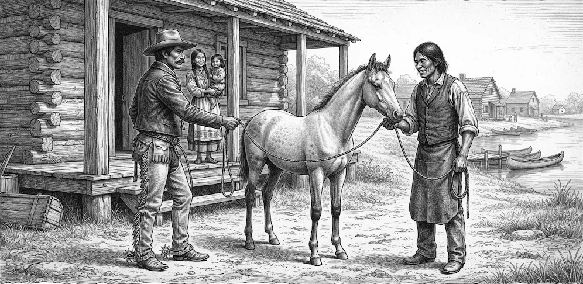
Luc volvió de los mandanes en el verano de 1798 con una mujer, una piragua de pieles y un mapa a lápiz, y su madre, en la puerta de la cocina de los Chouteau, miró a la muchacha de arriba abajo, como miraba Marie Rose a los niños, y dijo en pawnee:
—Ya te lo dije.
Y luego, en una mezcla de pawnee y de señas que Mazorca Que Se Abre entendió perfectamente, le dijo a la muchacha que pasara, que tendría hambre.
En San Luis la llamaron Marguerite, porque nadie sabía decir su nombre, y ella se dejó. Aprendió francés en un año, mejor que Luc el mandán. Se reía muy fuerte, en mitad de la misa, cuando algo le hacía gracia, y el cura la miraba mal y ella se reía más. Plantaba maíz en un huerto pequeño detrás de la casa que alquilaron en la calle de abajo, cerca del río, y les salía más alto y más dulce que a nadie en el pueblo, y las vecinas venían a preguntarle cómo lo hacía, y ella se encogía de hombros y decía que había que hablarle.
En 1800 tuvieron una hija. La llamaron Rose, por Marie Rose, que fue la madrina. Era morena, con los ojos claros de Luc, y gritaba como su madre se reía.
Luc dejó de remar para los Chouteau. Trabajaba por su cuenta, a medias con Lambert: compraban caballos a los osages y a los comerciantes que subían por el Misuri y los vendían en el pueblo, a los colonos que empezaban a llegar desde el este, americanos, por el Ohio, cada vez más, cada año más, con sus carros y sus familias y su prisa. No ganaban mucho. Pero era suyo.
Las cosas estaban cambiando en San Luis. Todo el mundo lo notaba, aunque nadie sabía exactamente qué.
Los americanos eran la mitad del pueblo, o casi. Llegaban desde Kentucky, desde Tennessee, desde Virginia, cruzaban el Misisipi y se quedaban en la orilla española, porque el gobernador les daba tierras gratis si juraban lealtad al rey de España y se hacían católicos. Juraban. Algunos se hacían católicos. La mayoría no, y el gobernador hacía como que no se daba cuenta. Eran altos, flacos, ruidosos, hablaban inglés con la nariz, bebían whisky de maíz, llevaban rifles largos con los que acertaban a una ardilla en el ojo a cien pasos, y no se quitaban el sombrero delante de nadie.
—Estos se van a quedar con todo —decía Lambert, en la herrería.
—Que se queden —decía Luc—. Pagan bien los caballos.
Y se decían otras cosas. Que en Europa había un general francés, un tal Bonaparte, que se estaba quedando con todo. Que había obligado al rey de España a devolverle la Luisiana a Francia. Que era secreto, pero que ya estaba hecho. Que en cualquier momento iban a llegar soldados franceses a San Luis a quitar la bandera española y poner la de ellos. Los viejos franceses del pueblo se emocionaban. Los jóvenes no tanto. Los americanos se reían.
Luc no sabía qué creer. Llevaba toda la vida bajo la bandera española y no había visto nunca más de veinte soldados españoles juntos. No le parecía que fuera a notar mucho la diferencia.
En julio de 1802 llegó a San Luis, por el oeste, una partida de comerciantes que nadie esperaba.
Venían por tierra, a caballo, desde el Misuri de arriba, desde el país de los osages, pero no eran del pueblo. Eran cuatro hombres, con seis o siete caballos y unas cuantas mulas cargadas. Uno era un francés de los que andaban siempre entre los indios, al que algunos conocían. Dos eran osages, que se quedaron en las afueras con los caballos. Y el cuarto era un hombre de unos cuarenta y cinco años, moreno, de bigote, con un sombrero de ala ancha, una chaqueta corta de cuero y unas espuelas enormes, de rodajas como estrellas, que tintineaban al andar.
Luc lo vio desde la herrería, bajando por la calle Principal, con el francés, preguntando algo a la gente.
Y pensó en Ignacio, el vaquero de Nueva Orleans.
Y luego le oyó hablar.
Hablaba español. No el de los funcionarios del gobernador. El otro. El cantado, el rápido, el de las palabras que nadie entendía. El de los vaqueros de Texas. O de algo parecido. Y preguntaba, a todo el que se cruzaba, por una mujer.
—María Rosa Villalpando —decía—. Me han dicho que vive aquí. ¿La conoce?
La gente no le entendía. Le miraban, se encogían de hombros, seguían.
Luc soltó el martillo.
Fue él quien lo llevó.
Le preguntó en el poco español que sabía, el de Nueva Orleans, quién era. El hombre se le quedó mirando con unos ojos muy oscuros, muy cansados, debajo del ala del sombrero, y le dijo:
—Me llamo José Julián Jaques. Vengo de Taos. —Tragó saliva—. Soy su hijo.
Luc no supo qué decir. Se quedó quieto en mitad de la calle, con el delantal de cuero de la herrería, con las manos negras de hollín, mirándolo. Pensó en la casa de arriba, en el huerto, en las rosas del rincón que daba al oeste. Pensó en Vial, diez años antes, en la galería de los Chouteau, diciendo «claro que lo haré». Pensó en Marie Rose en la iglesia, con los ojos abiertos, sin rezar.
—Venga —le dijo—. Le llevo.
Y luego, por el camino, se le ocurrió una cosa, y se paró.
—Espere —dijo—. Primero vamos a buscar a su hermano.
Lambert estaba en su casa, en la calle de la Iglesia, comiendo con su mujer y sus cuatro hijos. Luc entró sin llamar. Lambert levantó la cabeza, con la cuchara en la mano, y vio a Luc, y detrás de Luc, en la puerta, a contraluz, a un hombre con sombrero de ala ancha y espuelas.
No hizo falta que nadie dijera nada.
Lambert se levantó. Despacio. Dejó la cuchara en la mesa. Se limpió las manos en los pantalones. Se acercó a la puerta. Y se quedó mirando al hombre, de cerca, a la cara, a los ojos. Eran casi de la misma altura. Lambert más ancho, más rubio, más claro. El otro más moreno, más flaco, más curtido. No se parecían en nada.
Pero tenían los dos la misma manera de fruncir la frente. La de su madre.
—¿José? —dijo Lambert.
El otro asintió.
Lambert le abrazó. Sin decir nada más. Le abrazó tan fuerte que al otro se le cayó el sombrero. Y se quedaron así, en la puerta, mucho rato, los dos hombres, mientras los niños de Lambert los miraban con la boca abierta y su mujer se tapaba la cara con el delantal.
Subieron los tres juntos a la casa de arriba. Luc se quedó en la puerta del huerto.
No vio lo que pasó dentro. No quiso. Se sentó en el borde del camino, junto a la cerca, de espaldas a la casa, mirando hacia el río. Y esperó.
Oyó, al cabo de un rato, una voz de mujer. No un grito. Algo más bajo. Como un gemido largo, que se rompía, y volvía, y se rompía. Y luego nada.
Esperó mucho tiempo. El sol bajó. Se puso detrás de él, hacia el oeste, y la sombra de la casa le llegó hasta los pies. Pasaron vecinos por el camino y le preguntaron qué pasaba y les dijo que nada. Pasó el cura. Pasó un perro.
Al anochecer salió Lambert. Tenía los ojos rojos. Se sentó a su lado en el borde del camino.
—Le ha reconocido —dijo—. En cuanto ha entrado. Antes de que dijera nada. Estaba en la cocina, ha levantado la cabeza, le ha visto y le ha dicho: «José». Como si le hubiera visto ayer.
Luc no dijo nada.
—Tenía dos años cuando se lo quitaron —dijo Lambert—. Dos. Lo tenía en brazos. Ahora tiene cuarenta y cuatro. —Se pasó la mano por la cara—. Dice que no se acuerda de ella. De nada. Pero que tiene una canción en la cabeza desde siempre, que se la ha cantado toda la vida a sus hijos sin saber de dónde la había sacado. Y que hoy ella se la ha cantado entera.
—¿Y se la ha cantado ahora?
Lambert asintió. No pudo hablar.
José Julián se quedó en San Luis tres semanas.
Durante esas tres semanas Luc lo vio mucho, porque Lambert se lo llevaba a todas partes, a la herrería, a la taberna, a la iglesia, a los Chouteau, como quien enseña un tesoro. Y José Julián contaba. A todo el que quisiera oírlo, en su español cantado, que Luc iba entendiendo cada vez mejor.
Contaba que el día del ataque, en Taos, en el verano de 1760, los comanches entraron en la casa fuerte de su abuelo, Pablo Villalpando, donde se habían refugiado muchas familias, y mataron a los hombres, a su padre entre ellos, y se llevaron a las mujeres y a los niños. Que a él, que tenía dos años, lo arrancaron de los brazos de su madre y lo tiraron al suelo, y que una mujer india, de las de Taos, lo escondió debajo de unas mantas. Que así se salvó. Que lo criaron unos parientes. Que no supo nada de su madre durante treinta y dos años, salvo que se la habían llevado y que nadie sabía si estaba viva.
Y que un día, en el verano de 1793, llegó a Taos un francés con barba que decía venir de San Luis, de los Ilinueses, y que preguntó al cura por los libros de bautismos, por un José Jaques. Y que el cura le mandó a buscar. Y que el francés, que se llamaba Pedro Vial, le dijo que su madre estaba viva.
—Vial —dijo Luc—. Lo hizo. Lo prometió y lo hizo.
—Lo hizo —dijo José Julián—. Y yo no le creí. Pensé que era un loco. O un estafador, que quería dinero. Le di de comer y le eché de casa. —Se rio, con los ojos húmedos—. Tardé nueve años en creerle. Nueve años en atreverme. Pensaba: ¿y si no es ella? ¿Y si es ella y no me quiere ver? ¿Y si cruzo las llanuras, con los comanches, con los osages, con todo, y llego, y está muerta? Al final mi mujer me dijo que si no iba, me iba a morir sin saberlo. Y vine.
El último día, José Julián fue a ver a Luc a su casa.
Iba a volver a Taos por el mismo camino, con el francés y los osages. Se había despedido de su madre. Lambert estaba deshecho. Marie Rose no había salido de la casa.
José Julián traía de la cuerda un caballo.
Luc lo había visto llegar con él tres semanas antes, entre los otros, y se había fijado, porque se fijaba en todos los caballos, era su oficio. Era un potro, de un año o algo más, gris. Muy claro, casi blanco por el cuello y la cabeza, más oscuro por las patas. Con unas manchas en las ancas como gotas de lluvia en una piedra. Y en la frente, entre los ojos, una estrella blanca, limpia, bien dibujada.
—Esto es para usted —dijo José Julián.
Luc no entendió.
—Mi madre me ha contado —dijo José Julián— que usted fue quien le preguntó a Vial. Que usted fue quien empezó. Que si no hubiera sido por usted, Vial no habría sabido nada, y yo no habría sabido nada, y no estaría aquí. —Le tendió la cuerda—. No tengo otra cosa que darle. Lo compré en Albuquerque, para el viaje, a una familia de por allí, de Atrisco, que cría caballos grises. Muy buenos. Dicen que vienen todos de una yegua que hace mucho tiempo trajeron de las llanuras, no sé si los comanches o quién. Que corría más que nada. Ellos cuentan esas cosas. Todo el mundo cuenta esas cosas de sus caballos.
Luc cogió la cuerda.
El potro le miró. Tenía unos ojos grandes, muy negros, con las pestañas largas. Resopló. Le echó el aliento caliente en la mano.
—No sé qué decir —dijo Luc.
—No diga nada —dijo José Julián—. Cuídelo.
Y se fue.
Aquella noche, Luc estuvo mucho rato en el corral, detrás de la casa, con el potro.
Marguerite salió a buscarlo con la niña en brazos. Se quedó a su lado, apoyada en la cerca, mirando también.
—Es bonito —dijo, en francés.
—Sí.
—¿Cómo lo vas a llamar?
Luc pensó en Vial y en el comanche viejo que lloraba por un caballo gris con una estrella. Pensó en Thompson, en la nieve, con el sextante, diciendo «el viejo cree tenía una yegua así». Pensó en el mapa a lápiz, en la frase de abajo: Aquí estuvo Luc.
Pensó en Marie Rose, que lloraba en la casa de arriba.
—No sé —dijo—. Ya se me ocurrirá.
No se le ocurrió nunca. Le llamó el Gris. Como todo el mundo llama a los caballos grises.
En lo alto del pueblo, en la casa de arriba, había luz en la ventana de la cocina. Estuvo encendida toda la noche.
Tres banderas
San Luis · 9 y 10 de marzo de 1804
Luc
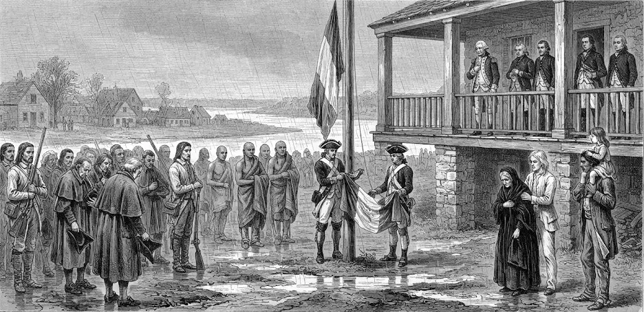
Llovía. Eso es lo que más recordaba Luc, años después, cuando le preguntaban. No las banderas, ni los discursos, ni los cañonazos. Que llovía, una lluvia fina, fría, de marzo, que no paraba, y que todo el mundo estaba de pie en el barro delante de la casa del gobierno con el agua chorreándole por el sombrero, esperando a que pasara algo que nadie entendía muy bien.
Lo de Bonaparte había sido verdad. El rey de España le había devuelto la Luisiana a Francia, en secreto, hacía unos años. Pero los soldados franceses no habían llegado nunca. Bonaparte había mandado un ejército a la isla de Santo Domingo, a sofocar la rebelión de los esclavos negros, y los esclavos negros y la fiebre amarilla se lo habían comido entero. Y Bonaparte, que necesitaba dinero para su guerra con Inglaterra y ya no tenía ejército para defender un territorio que no había visto nunca, se lo había vendido todo a los americanos.
Todo. La Luisiana entera. Nueva Orleans, San Luis, el Misuri, el Misisipi, todo lo que hubiera al oeste del río hasta las montañas, hasta donde fuera que estuvieran las montañas, que nadie lo sabía. Por quince millones de dólares.
En San Luis se supo en el verano de 1803 y nadie se lo creyó. Después llegaron los papeles. Llegó un capitán americano, de artillería, con unos pocos soldados, que se llamaba Stoddard. Y se fijó el día.
El 9 de marzo, por la mañana, el teniente gobernador español, don Carlos Dehault Delassus, un francés de Flandes al servicio del rey de España desde niño, salió a la galería de la casa del gobierno con su uniforme blanco y azul, sus galones, su espada, su peluca empolvada, y leyó un papel.
Luc estaba abajo, en el barro, con Marguerite, con la niña a hombros, con Lambert y su mujer y sus hijos, y con Marie Rose, que había bajado de su casa por primera vez en mucho tiempo, vestida de negro, apoyada en el brazo de Lambert. Estaba todo el pueblo. Los franceses viejos, con sus capotes y sus pipas. Los americanos, con sus rifles y sus sombreros. Los negros, libres y esclavos, al fondo. Unos cuantos indios, osages, sauks, que habían venido a ver qué pasaba con su padre español. Y los soldados, los veinte o treinta soldados españoles que había en San Luis, en fila, con los fusiles al hombro y las casacas empapadas.
Delassus leyó en francés. Que el rey de España, Carlos IV, por su real voluntad, entregaba la Alta Luisiana a la República Francesa. Que daba las gracias a los habitantes por su lealtad. Que les deseaba lo mejor.
Le temblaba la voz. Luc lo vio desde abajo. Era un hombre recto, serio, que llevaba años en San Luis, que conocía a todo el mundo, y le temblaba la voz.
Luego se volvió hacia el mástil, delante de la casa. Los soldados presentaron armas. Un tambor redobló. Y bajaron la bandera de España.
Era una bandera blanca, con las armas del rey en el centro, roja y amarilla, un poco descolorida por el sol de muchos veranos y empapada por la lluvia de aquel día, y bajó despacio, pesada, pegada al mástil, sin ondear. Un soldado la recogió abajo y la dobló con mucho cuidado, como se dobla una sábana para un muerto.
Y subieron la de Francia.
Era la bandera nueva, la de la Revolución. Azul, blanca y roja, en tres franjas. Muchos en San Luis no la habían visto nunca. La recordaban blanca, con flores de lis, la del rey Luis, la de cuando eran franceses de verdad, antes de los españoles, hacía cuarenta años. Esta era otra. Pero era Francia.
Y cuando subió, los viejos franceses del pueblo empezaron a llorar.
Luc no lo esperaba. Hombres de setenta años, curtidos, cazadores, remeros, comerciantes, que habían pasado la vida en el río y en los bosques y entre los indios, que habían visto de todo, de pie en el barro con el sombrero en la mano, llorando como niños. Algunos cantaban algo, bajito. Una canción vieja, que Luc había oído a los remeros en las piraguas. Una mujer se arrodilló en el barro y se santiguó.
Al lado de Luc había un viejo que se llamaba Pierre, un antiguo remero, ciego de un ojo, que había llegado a San Luis con Laclède cuando se fundó el pueblo, hacía cuarenta años. Lloraba también. Luc le preguntó por qué.
—Porque solo dura un día —dijo el viejo.
Había sido idea de los franceses. Lo supo luego.
Stoddard, el capitán americano, tenía que recibir San Luis en nombre de Francia, porque no había ningún francés para hacerlo, y luego entregárselo a sí mismo en nombre de los Estados Unidos. Así lo decían los papeles. Y había pensado hacerlo todo el mismo día, por la mañana: bajar la española, subir la francesa, bajar la francesa, subir la americana. Una detrás de otra.
Y los franceses viejos del pueblo habían ido a verle y le habían pedido una cosa. Que dejara la bandera de Francia una noche. Solo una. Que la dejara ondear sobre San Luis una noche entera, hasta la mañana siguiente, para poder decir que habían vuelto a ser franceses, aunque fuera durante unas horas.
Stoddard dijo que sí.
Aquella noche, nadie durmió en San Luis. Los franceses montaron guardia al pie del mástil, por turnos, toda la noche, bajo la lluvia, con antorchas, para que no le pasara nada a la bandera. Bebieron. Cantaron. Contaron historias del Canadá, de Nueva Orleans, de los viejos tiempos. Luc se quedó un rato con ellos. Le dieron vino. El viejo Pierre le contó cómo era San Luis cuando no había más que un almacén de troncos y unas tiendas de piel en lo alto del barranco, y Laclède y el niño Chouteau, de catorce años, dando órdenes a los hombres.
Y Luc pensó en su madre, en la cocina, que era pawnee y había llegado a San Luis atada en una canoa, y que no tenía bandera. Y en Marguerite, que era mandana y no sabía lo que era una bandera. Y en José Julián, que era español de Nuevo México y había cruzado las llanuras para ver a su madre, y que ahora, de pronto, tenía a su madre en otro país.
Y en él. ¿Qué era él? Hijo de una pawnee esclava y de un remero de Montreal. Nacido bajo España. Criado por franceses. Casado con una mandana. Y a partir de mañana, americano.
No lo sabía. No le pareció importante.
El 10 de marzo, por la mañana, seguía lloviendo.
Bajaron la bandera de Francia. Los viejos franceses lloraron otra vez. Y subieron una que Luc había visto en los barcos de los americanos que bajaban por el Ohio, pero nunca en un mástil de San Luis: con rayas rojas y blancas, y en un rincón un cuadrado azul con estrellas blancas. Quince, contó Luc. Una por cada estado, le dijeron, aunque ya eran diecisiete y la bandera no se había enterado.
Los soldados americanos dispararon una salva. Los americanos del pueblo gritaron ¡hurra! y tiraron los sombreros al aire. Los franceses se quedaron callados. Los indios miraban. Los soldados españoles, que se iban a ir río abajo en unos días, a Nueva Orleans, y de ahí a donde fuera, se quedaron en fila, quietos, con los fusiles al hombro, mirando la bandera nueva.
Marie Rose se dio la vuelta y se fue a su casa, apoyada en el brazo de Lambert, sin mirar atrás.
—¿Qué le pasa? —le preguntó Luc a Lambert, cuando volvió.
Lambert se encogió de hombros.
—Dice que ya no es española —dijo—. Que se ha despertado española y se va a acostar americana, sin moverse de su casa. Y que no sabe si eso quiere decir que José ahora está en otro país. Si le van a dejar volver.
—¿Y qué le has dicho?
—Que no lo sé.
Entre los americanos que miraban, en la galería de la casa del gobierno, al lado de Stoddard, había un hombre al que Luc no conocía.
Era alto, de unos treinta años, con el pelo castaño recogido en una coleta, la cara larga, pálida, la nariz recta, los ojos grises, muy serios. Iba de uniforme, azul, con charreteras de capitán. Y miraba la ceremonia de una manera que a Luc le recordó a alguien. Como si quisiera acordarse de todo. Como Thompson en la nieve.
—Ese es el capitán Lewis —le dijo un americano a su lado, que se dio cuenta de que miraba—. El secretario del presidente Jefferson. Va a subir el Misuri.
—¿Hasta dónde?
—Hasta el final —dijo el americano—. Y más allá. Hasta el mar del Oeste.
Luc se quedó mirando al capitán.
Pensó en Mackay, en Evans, en la Compañía del Misuri con su nombre tan largo, en los tres mil pesos del rey de España para el primero que llegara al mar. En el galés llorando en la taberna, sin sus indios. En los huesos blancos en las orillas.
—Otro más —dijo.
Una semana después, Luc cruzó el Misisipi en una barca hasta el campamento de los americanos, en la otra orilla, en la desembocadura de un río pequeño que llamaban Dubois, donde tenían a sus hombres desde el invierno.
Habían construido unas cabañas de troncos y un corral. Había unos cuarenta hombres. Soldados, la mayoría, americanos, jóvenes, de Kentucky y de los fuertes del Ohio, aburridos de un invierno entero sin hacer nada más que cortar leña, disparar al blanco y pelearse. Y una barca de quilla enorme, de cincuenta y cinco pies, con un mástil, una vela, una cabina a popa y un cañón giratorio en la proa, que estaban terminando de preparar. Y dos piraguas.
El otro capitán, el que mandaba allí aquel invierno, se llamaba Clark. Era pelirrojo, ancho, más bajo que Lewis y más simpático, con una cara redonda, curtida, de hombre de frontera, y una manera de hablar con todo el mundo como si los conociera de siempre. Tenía con él un esclavo negro, enorme, que se llamaba York, que había crecido con él desde niños.
Luc le dijo que quería ir. Que era remero. Que había subido el Misuri hasta los mandanes y había pasado un invierno allí. Que hablaba algo de mandán, algo de osage, algo de omaha, francés, algo de español, algo de inglés.
Clark le miró de arriba abajo.
—¿Has estado en los mandanes? —le preguntó, en un francés horrible.
—Un invierno. Y mi mujer es mandana.
Clark se rio.
—Entonces tú vas a ser muy útil —dijo—. Pero no te puedo llevar hasta el final. Los que van hasta el final son soldados. Tienen que alistarse en el ejército de los Estados Unidos. —Le miró—. ¿Quieres alistarte?
Luc lo pensó. Pensó en Marguerite. En Rose, que tenía cuatro años. En su madre, en la cocina. En la bandera nueva.
—No —dijo.
—Bien. —Clark asintió—. Entonces vienes de remero, a sueldo, hasta los mandanes. Con los otros franceses. Allí pasamos el invierno. Y en primavera la barca grande se vuelve a San Luis con los que no vienen, y tú con ella. ¿Te vale?
—Me vale.
—Otra cosa —dijo Clark—. Me han dicho que comercias con caballos.
—Sí.
—Necesitamos dos o tres, para los cazadores. Para que vayan por la orilla mientras nosotros vamos por el río. ¿Tienes alguno bueno?
Luc pensó en el Gris. Tenía ya tres años. Lo había domado él mismo, durante un año entero, como le había enseñado Ignacio en Nueva Orleans, sin pegarle nunca. Era el mejor caballo que había tenido. Era tan rápido que los osages, cuando lo vieron, le ofrecieron diez pieles de castor por él, y veinte, y Luc dijo que no.
—Tengo uno —dijo.
Marguerite se rio cuando se lo dijo. No se enfadó. Se rio.
—Vas a ver a mi madre —dijo—. Le dirás que tiene una nieta.
Su madre, la pawnee, no dijo nada. Le cogió la cara con las dos manos, como siempre, y le miró mucho rato, como siempre. Después le dio una bolsita de piel. Igual que la de Nueva Orleans, hacía veintitrés años.
—¿Qué hay dentro? —le preguntó él.
—Tu pelo —dijo ella—. De cuando eras pequeño. Para que vuelvas a por él.
Lambert le dio la mano en la herrería, sin dejar el martillo.
—Si ves a algún español —le dijo—, pregúntale si José llegó bien a Taos.
—Lambert, voy hacia el norte. No hay españoles en el norte.
Lambert se encogió de hombros.
—Pregunta —dijo.
Marie Rose no le dijo nada. Le dio un rosario. De cuentas de madera negra, gastadas, con una cruz pequeña de plata.
—Era de mi madre —dijo, en español. Era la primera vez que Luc la oía hablar en español—. Me lo llevé de Taos. Es lo único que me dejaron llevar.
Luc no supo qué decir.
—No lo pierda —dijo ella.
Y se volvió a su huerto.
Salieron el 14 de mayo de 1804, por la tarde, con lluvia otra vez, desde el campamento del río Dubois. La barca grande con la vela izada, las dos piraguas detrás, cuarenta y tantos hombres, y por la orilla, a caballo, dos cazadores. Uno de ellos, un hombre moreno, callado, medio francés y medio shawnee, que se llamaba George Drouillard, el mejor cazador y el mejor intérprete de señas que Luc vio nunca, montaba un caballo gris con una estrella en la frente.
El capitán Lewis se les unió unos días después, río arriba, en el pueblo de San Carlos, con su perro, un terranova negro enorme que se llamaba Seaman. Pero aquella primera tarde, Luc miró el caballo gris desde su banco de remero, en la barca grande, y pensó que el Gris iba a ver más mundo que él.
Tenía razón.
El aprendiz de mapas
Rocky Mountain House y los pasos de las Montañas de Piedra · 1800-1811 · y Longueuil, 1846
Lo cuenta David Thompson
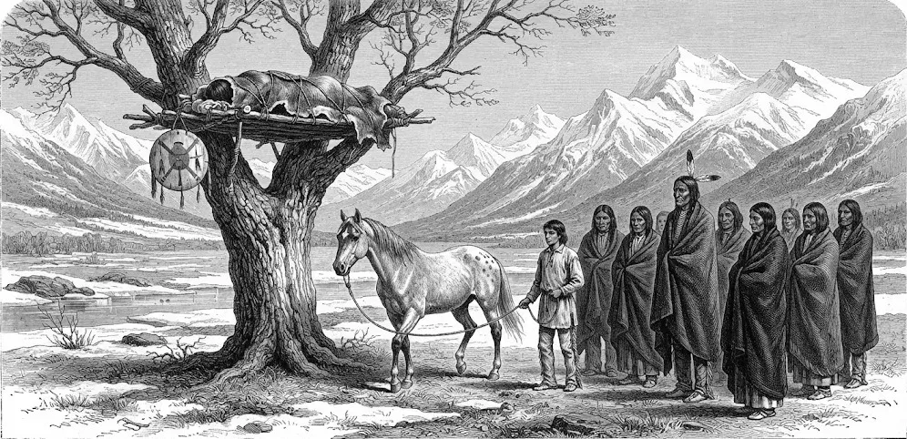
Volví a ver a los piegan doce años después. Ya no era un aprendiz.
En ese tiempo me habían pasado muchas cosas. Me rompí la pierna, el invierno siguiente a aquel en la tienda del viejo, en una caída en la nieve, y me pasé casi un año tumbado en un fuerte de troncos, con la pierna entablillada, aprendiendo a medir el sol y las estrellas con un hombre de la Compañía que se llamaba Turnor, que era el único en toda la bahía de Hudson que sabía hacerlo. Perdí el ojo derecho mirando el sol sin cristal ahumado. Gané un oficio: geógrafo. Me cansé de la Compañía de la Bahía de Hudson, que no quería mapas sino pieles, y me pasé a la del Noroeste, la de Montreal, la competencia, que me ofreció lo que yo quería: ir a donde nadie había ido y dibujarlo. Bajé al Misuri y estuve en los mandanes, en la nieve, con mi sextante. Subí al nacimiento del Misisipi, o a lo que creí que era su nacimiento. Recorrí miles de millas en canoa, a caballo, a pie, en trineo.
Y me casé. Con Charlotte, en el verano de 1799, en un puesto de la Compañía junto a un lago del norte. Ella tenía trece años y medio y yo veintinueve. Ahora escandaliza decirlo. Entonces, allí, era lo normal; su madre se había casado así, y la madre de su madre. Su padre, el escocés, se había vuelto a Escocia y la había dejado allí con su madre cree, como hacían tantos. La mía, la que me casó con ella, era una costumbre que llamábamos à la façon du pays, a la manera del país, sin cura y sin papeles. Así se casaban casi todos los de la Compañía con las mujeres de allí. Y casi todos, al cabo de unos años, cuando se volvían a Escocia o a Montreal, las dejaban, con los hijos, y se casaban allí con una blanca.
Yo no la dejé. Me la traje a Montreal, con los hijos, en 1812, y nos casamos en una iglesia, con cura y papeles, trece años después de la primera vez. Llevamos cuarenta y siete años juntos. Es lo único de lo que estoy seguro de haber hecho bien en mi vida.
En el otoño de 1800 me mandaron a Rocky Mountain House.
Era un fuerte de la Compañía del Noroeste en el río Saskatchewan del Norte, muy arriba, a la vista de las montañas. Lo habían construido hacía poco, para comerciar con los pies negros. Y para otra cosa que no se decía en voz alta: para buscar un paso por las montañas hacia el oeste, hacia el país de los kutenai, y más allá, hacia el mar.
Los piegan venían a comerciar. Llegaban en otoño y en primavera, en partidas grandes, a caballo, con las pieles, la carne seca, la grasa, los lobos. Y yo los reconocía. No a todos. Pero a algunos. Y algunos me reconocían a mí.
Un día de octubre llegó una partida grande, de muchas tiendas, y al frente iba Kootanae Appe.
Estaba más viejo. Tendría ya cincuenta y tantos años. Pero seguía siendo el hombre más alto que había visto nunca, y seguía teniendo aquella cara grave, sin pintar, y aquella pluma sola en el pelo. Me vio desde el caballo, en la puerta del fuerte. Me miró un rato. Y luego dijo algo en pies negros que no entendí, y sus hombres se rieron.
El intérprete me lo tradujo.
—Dice que eres el muchacho que se caía del caballo.
Me reí yo también. Y él, por primera vez que yo le viera, sonrió.
Aquella noche le pregunté por Saukamappee.
Estábamos en la sala grande del fuerte, junto a la chimenea, con unos pocos jefes, fumando, después de los regalos y el comercio. Kootanae Appe me escuchó. Estuvo un rato callado.
—Hombre Joven murió —dijo—. Hace cinco inviernos.
No me sorprendió. Lo sabía. Él mismo me lo había dicho, el último día: yo no voy a estar. Pero me dolió igual. Más de lo que esperaba. Me quedé mirando el fuego.
—Se murió en su tienda, de viejo —siguió Kootanae Appe—. En invierno, una noche de frío. Se acostó y no se levantó. Su mujer le encontró por la mañana. Tenía la cara tranquila.
»Lo subimos a un árbol, en el valle del río del Arco, envuelto en su manta, con su escudo, su pipa y sus armas, como se hace con los hombres importantes. Y su mujer regaló todo lo demás. Los caballos, las pieles, la tienda. Todo. Para no verlo más.
Me miró.
—Menos un caballo —dijo.
—¿La yegua gris?
Kootanae Appe asintió.
—La llevamos al pie del árbol —dijo—. Como se hace. El caballo preferido de un hombre se va con él, para que en el otro mundo no tenga que ir a pie. La llevamos. Su nieto, el muchacho, le iba a disparar la flecha. —Hizo una pausa—. Y no quiso.
—¿No quiso?
—No. Se puso a llorar. Dijo que el abuelo no la había matado nunca, aunque todos se lo decían, y que él tampoco. Que el abuelo decía que la yegua venía del campamento de los muertos igual que él, y que si se iba con él al otro mundo, los muertos de aquel campamento, los snakes, la reconocerían, y vendrían a por ella, y él no podría defenderla, porque estaba muerto. Que era mejor dejarla aquí.
Kootanae Appe se encogió de hombros.
—Los viejos se enfadaron. Decían que era una ofensa. Pero el muchacho era nieto de Hombre Joven, y yo dije que le dejaran. Que quizá tenía razón.
—¿Y qué hicieron con ella?
—La soltó —dijo Kootanae Appe—. Allí mismo. Le quitó la cuerda y le dio una palmada en el anca. Y la yegua se fue hacia el sur, por el valle, despacio, gris, sola. Y no volvió.
Se quedó callado. Echó una bocanada de humo hacia el techo.
—A veces —dijo— los muchachos dicen que la han visto. En el sur, en el país del río de las Leches, entre los caballos salvajes. Una yegua gris, vieja, con una estrella. —Sonrió apenas—. Los muchachos dicen muchas cosas.
No voy a contar los diez años siguientes. Ya los he contado en otra parte, en los papeles de la Compañía, y no son lo que quiero contar aquí.
Solo diré que busqué el paso. Que lo busqué durante años, en verano y en invierno, río arriba por todos los ríos que bajaban de las montañas. Que los piegan no querían que lo encontrara. Que no me lo dijeron nunca de frente, pero que me lo hicieron saber de mil maneras. Me daban guías que se perdían. Me robaban los caballos. Me contaban que al otro lado había monstruos. Una vez, una partida de piegan jóvenes me detuvo en un río, me rodeó, me apuntó con los fusiles y me dijo que me volviera. Me volví.
Tardé mucho en entender por qué. Cuando lo entendí, me dio vergüenza no haberlo entendido antes.
Al otro lado de las montañas vivían los kutenai, y los flathead, y los nez percés. Los enemigos de los piegan. Pueblos a los que los piegan llevaban cincuenta años robando caballos, matando, empujando hacia el oeste, hacia las montañas, desde que tuvieron los fusiles de los cree y ellos no. Pueblos que no podían defenderse, porque los piegan tenían fusiles y ellos no. Porque los piegan no les dejaban cruzar las montañas para venir a comprarlos a nuestros fuertes.
Si yo encontraba el paso, si yo abría un puesto al otro lado, los kutenai y los flathead tendrían fusiles.
Y los piegan perderían lo único que les hacía más fuertes que ellos.
Lo encontré en 1807. Crucé las montañas con Charlotte y con los niños, y con unos pocos hombres. Bajé al río Columbia. Construí un puesto entre los kutenai, a la orilla de un lago. Y les vendí fusiles.
Muchos. Todos los que pude llevar. Era mi trabajo. Era para lo que me pagaba la Compañía. Los kutenai me daban pieles de castor, las mejores que había visto, gruesas, oscuras, de los ríos fríos de las montañas, y yo les daba fusiles, pólvora y balas. Y ellos, y los flathead, que vinieron también, se armaron. Y unos veranos después, cuando los piegan cruzaron las montañas en su partida de guerra de cada verano para robarles los caballos, como llevaban haciendo cincuenta años, los flathead los estaban esperando, con fusiles.
Los piegan perdieron. Por primera vez en medio siglo, perdieron contra los del otro lado. Muchos muertos. Volvieron a su tierra derrotados, furiosos. Y supieron quién les había dado los fusiles a sus enemigos.
Yo.
El muchacho que se caía del caballo. El que había dormido un invierno entero en la tienda de Hombre Joven, oyéndole contar cómo los fusiles de los cree les habían salvado de los snakes, y cómo, en aquella segunda batalla, los snakes se caían en el campo sin saber por qué. El que había pensado, a los diecisiete años, mirando el fuego: estos fusiles vienen de Birmingham, y estos caballos vienen de Nuevo México, y yo estoy en medio.
Ahora el que estaba en medio era yo. Y había hecho lo mismo que habían hecho los cree con los peeagan. Había cambiado de bando a los fusiles.
En 1810 los piegan cerraron el paso.
Una partida de ellos se puso en el camino, en el río, y no dejó pasar a mis hombres, que subían con las canoas cargadas de mercancía para el otro lado. Les dijeron que si volvían a intentarlo los matarían. Y lo decían en serio.
Me contaron después, los de la Compañía que estaban en Rocky Mountain House, que había otra razón. Que los piegan estaban furiosos con todos los blancos, no solo conmigo. Porque unos años antes, en el verano de 1806, al sur, en el país del río de las Leches, unos americanos que venían de las montañas, de los que subían el Misuri desde San Luis, se habían encontrado con unos muchachos piegan, y habían acampado con ellos una noche, y por la mañana habían matado a dos. A uno con un cuchillo. A otro con un tiro. Y el jefe de los americanos le había dejado al muerto colgada del cuello una medalla, con la cara de su presidente, para que supieran quién había sido.
Kootanae Appe, me dijeron, había hablado de aquello en el consejo. Había dicho que los blancos del norte daban fusiles a sus enemigos, y los blancos del sur mataban a sus hijos y les colgaban medallas, y que los piegan ya no sabían de qué blancos fiarse. Que quizá de ninguno.
Tenía razón.
Busqué otro paso, más al norte, por el río Athabasca, en pleno invierno, con nieve hasta la cintura, con los perros muriéndose de hambre y los hombres desertando. Lo encontré en enero de 1811. Bajé por el otro lado al Columbia. Y lo seguí, en canoa, hasta el mar.
Llegué en julio. Los americanos de un tal Astor habían llegado antes, por barco, y habían construido un fuerte en la desembocadura. Me recibieron muy bien. Me dieron de comer. Me enseñaron el mar.
Me senté en la orilla y lo miré mucho rato. El mar del Oeste. El que buscaban Mackay y Evans y los españoles con sus tres mil pesos, y los americanos del Misuri, y yo. Gris, frío, enorme, con olas largas que venían de muy lejos, de China, de Japón, de donde fuera.
No sentí nada. Ni alegría ni orgullo. Solo cansancio.
Y pensé en el viejo.
Longueuil, 1846
Charlotte me ha preguntado hoy, mientras me leía en voz alta lo que llevo escrito, por qué cuento lo de los fusiles. Dice que me hace quedar mal. Que la gente que lea esto, si alguien lo lee, pensará que fui un hombre malo.
Le he dicho que no lo sé. Que puede que lo fuera. Que lo que sé es que es verdad, y que si escribo lo del viejo y lo de los snakes y lo de los fusiles de los cree, y no escribo lo mío, estoy mintiendo.
Ella se ha quedado callada. Luego ha dicho, en cree:
—Mi abuela decía que el que da el fusil no es el que mata. Pero que tampoco está limpio.
Y ha seguido leyendo.
Río arriba
Del río Dubois a Fort Mandan · mayo de 1804-abril de 1805
Luc
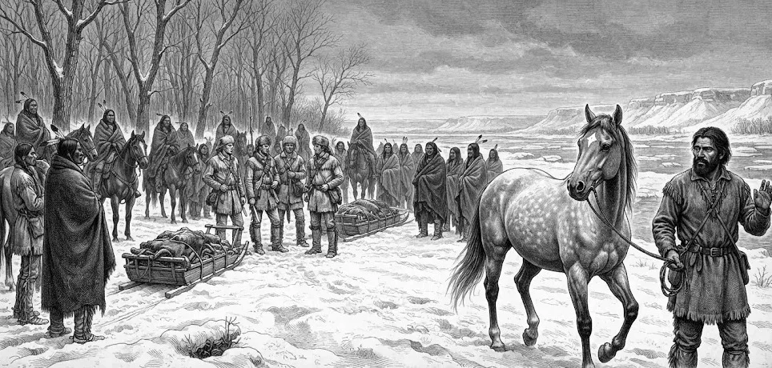
Era la cuarta vez que Luc subía el Misuri y fue la primera en que lo hizo con soldados, y la diferencia la notó enseguida: los soldados lo apuntaban todo.
Los capitanes, sobre todo. Cada noche, en la orilla, junto al fuego, con un tintero de cuerno y unas plumas de ganso y unos cuadernos forrados de cuero rojo, escribían. Lewis más pausado, con frases largas, con palabras que Luc no conocía, describiendo cada planta, cada pájaro, cada bicho que encontraban, que guardaba luego en cajitas y en frascos. Clark más deprisa, con una letra grande, torcida, llena de faltas que hasta Luc, que no sabía inglés escrito, veía, apuntando las distancias, los rumbos, los recodos del río, los nombres de los arroyos. Y algunos de los sargentos también, cada uno en su cuaderno.
—¿Para qué escriben tanto? —le preguntó Luc a un remero francés, uno viejo, que se llamaba Pierre Cruzatte y era medio omaha y tocaba el violín por las noches.
Cruzatte se encogió de hombros.
—El presidente lo quiere saber todo —dijo—. Hasta los pájaros.
Luc pensó en Thompson, arrodillado en la nieve con su aparato de latón.
—Todo el mundo quiere saber dónde está todo —dijo.
—Menos los que viven aquí —dijo Cruzatte—. Esos ya lo saben.
No contó luego mucho de aquel viaje, a la ida. Era un remero. Remaba. Sirgaba. Empujaba con la pértiga. Comía lo que le daban. Dormía donde le decían. El río era el mismo de siempre, marrón, rápido, traicionero, lleno de troncos y de bancos de arena, con mosquitos, garrapatas, tormentas que llegaban de pronto por el oeste con un muro negro de nubes y granizo como huevos de paloma. Los soldados se quejaban mucho. Los franceses, que lo conocían, se quejaban menos.
Recordaba algunas cosas sueltas.
Recordaba al sargento Floyd, un muchacho de Kentucky, simpático, que se puso malo de la tripa en agosto, cerca de donde los omahas, con un dolor en el costado derecho que le doblaba, y se murió en dos días, a pesar de todo lo que hizo Lewis, que era el que hacía de médico. Le enterraron en lo alto de un barranco, con honores, con una salva y un palo con su nombre. Tenía veintidós años. Fue el único que se murió en todo el viaje, supo Luc después. El único. Y no de flechas ni de osos ni de frío. De la tripa.
Recordaba haber pasado por el sitio del fuerte Carlos de Mackay, donde había pasado el invierno de 1795, y no encontrar casi nada: unos troncos podridos en la hierba. Y recordaba que Pájaro Negro, el jefe de los omahas, el del arsénico, estaba muerto. Se había muerto de la viruela cuatro años antes, en 1800, en una nueva epidemia, con la mitad de su pueblo. Le habían enterrado sentado encima de su caballo preferido, vivo, en lo alto de una colina sobre el río, para que pudiera ver pasar las barcas de los blancos. Los capitanes subieron a ver la tumba. Lewis dejó en ella una bandera.
Luc no subió.
Y recordaba a los sioux.
Fue a finales de septiembre, en la boca de un río que los franceses llamaban el Mauvais, el Malo. Los tetones, la gente de Búfalo Negro, una de las ramas de los sioux, la más poderosa, la que controlaba aquella parte del río y cobraba a todos los que pasaban. Los franceses del pueblo los conocían bien y les tenían miedo. Los capitanes no los conocían.
Hubo regalos, al principio. Discursos. Una bandera, medallas, un sombrero de tres picos con plumas rojas para el jefe. Los capitanes les hablaron del nuevo Padre, el de Washington, que ahora era el dueño del río. Los tetones escucharon. Y luego dijeron que los regalos eran pocos, y que la barca no pasaba.
Tres guerreros sujetaron la cuerda de la piragua. Otro se abrazó al mástil. Uno de los jefes empujó a Clark. Clark sacó la espada. Lewis, en la barca grande, mandó cargar el cañón giratorio de la proa, que estaba cargado con metralla, y apuntarlo a la orilla. Luc estaba en su banco, con el remo en la mano, a tres pasos del cañón, y vio la mecha encendida, y vio enfrente, en la orilla, a sesenta o setenta guerreros con los arcos tensados y los fusiles apuntando, y pensó en el día de las fresas, en San Luis, hacía veinticuatro años, y en el grito.
No pasó nada. Búfalo Negro, el jefe, se metió en el agua, cogió la cuerda de la piragua de manos de sus guerreros y se la dio a Clark. Así, sin más. Y dijo algo que el intérprete tradujo como que eran amigos. Y aquella noche hubo baile en el pueblo de los tetones, con cabelleras de omahas en palos, y los capitanes durmieron sin dormir, y al día siguiente pasaron.
Luc no se fió nunca más de los tetones. Tenía razón.
Llegaron a los mandanes a finales de octubre.
Los mismos dos pueblos, en lo alto de los mismos barrancos. Los mismos campos de maíz. Las mismas casas redondas de tierra. Pero Luc no era el mismo. La primera vez había llegado solo, con cuatro hombres, una bandera prestada y una caja de medallas sobrantes, a hacer de español de mentira. Ahora llegaba con un ejército, o algo que se le parecía. Con banderas americanas, con un cañón, con cuarenta y tantos hombres de uniforme, con dos capitanes que daban discursos.
Y llegaba siendo yerno.
La madre de Marguerite salió a recibirle. Era una mujer gorda, bajita, con la cara picada de viruela, que se reía como su hija, muy fuerte, y que le abrazó delante de todo el mundo y luego le dio un pellizco en el brazo que le dejó un cardenal. Le preguntó por su hija. Él le contó. Le preguntó por la niña. Él le contó también. Y entonces la mujer se echó a llorar, de golpe, sin avisar, en mitad del pueblo, porque tenía una nieta de cuatro años que no había visto nunca y que a lo mejor no vería nunca. Y luego se secó las lágrimas, se volvió a reír, y le llevó a su casa a darle de comer hasta que no pudo más.
Los capitanes construyeron un fuerte en la orilla, enfrente del pueblo de abajo, en un bosque de álamos: dos filas de cabañas de troncos en ángulo, con una empalizada en el frente y un almacén. Lo llamaron Fort Mandan. Allí pasaron el invierno.
Fue el invierno más frío que Luc recordaba. Peor que el de 1797. El termómetro de Lewis bajó a cuarenta bajo cero, y a cuarenta y cinco, y una mañana el mercurio se metió entero en la bola y no salió, como había dicho Thompson. Los hombres que salían a cazar volvían con las orejas blancas, con los pies negros. Un muchacho mandán que se quedó una noche fuera, perdido, llegó al fuerte por la mañana con los pies helados, y Lewis le tuvo que cortar los dedos.
Pero no se aburrían. El fuerte estaba siempre lleno de gente: mandanes, hidatsas, que venían a ver, a comerciar, a pedir, a reírse, a comer. York, el esclavo negro de Clark, era la atracción del invierno: los mandanes no habían visto nunca un hombre negro, y venían de los pueblos de arriba para tocarle la piel con un dedo mojado, a ver si era pintura. York se dejaba, y les gruñía, y les decía que era un oso salvaje que Clark había domado, y los niños salían corriendo, chillando de gusto.
Y venían los ingleses.
Los de la Compañía del Noroeste, los de Thompson, desde el norte, desde el río Assiniboine, como siempre. Uno joven, un tal Larocque, que hablaba francés y quería ir con los capitanes al oeste. Y Jusseaume. Otra vez Jusseaume.
Estaba más gordo, más viejo, con la barba gris. Vivía en el pueblo con su mujer mandana y sus hijos, como siempre. Los capitanes le contrataron de intérprete. Luc lo vio entrar en el fuerte el primer día y se quedó quieto en la puerta de la cabaña.
Jusseaume le miró. Le reconoció. Y por primera vez en su vida, le sonrió.
—El español de mentira —dijo—. Ahora eres americano.
—Y tú también —dijo Luc.
Jusseaume se rio con una risa enorme, de borracho, que llenó todo el fuerte.
—Yo soy de quien me pague —dijo—. Como todos.
En noviembre contrataron a otro intérprete. Un francés de Canadá, de unos cuarenta y tantos años, un tal Charbonneau, que vivía con los hidatsas desde hacía años. No era gran cosa: hablaba hidatsa, francés y poco más; era perezoso, quejica, y no sabía remar ni cazar. Pero tenía dos mujeres. Y una de ellas era shoshone.
Los capitanes la querían a ella, no a él. Iban hacia las montañas, hacia el país de los shoshones, que era el pueblo que tenía caballos. Y al llegar a las montañas iban a necesitar caballos, muchos, para cruzarlas. Y alguien que les hablara a los shoshones en su lengua.
Se llamaba, en hidatsa, Sacagawea. Mujer Pájaro, decían que quería decir.
Luc la conoció en el fuerte, en noviembre, una tarde de nieve. Era una muchacha de unos dieciséis años, menuda, callada, con la cara redonda y los ojos muy negros. Estaba embarazada de muchos meses. Iba siempre detrás de Charbonneau, dos pasos detrás, con la cabeza un poco baja, y no hablaba si no le hablaban.
Luc le habló en hidatsa, en el poco hidatsa que sabía, que era casi lo mismo que su mandán. Le preguntó de dónde era.
Ella le miró, sorprendida de que un blanco le preguntara algo.
—Del oeste —dijo—. De las montañas. Donde nacen los ríos.
—¿Cómo llegaste aquí?
Ella se quedó callada un rato. Después dijo, sin cambiar la cara, como quien cuenta lo que ha comido:
—Hace cuatro o cinco veranos, los hidatsas vinieron a nuestro campamento. En un sitio donde se juntan tres ríos. Mataron a los hombres. A algunas mujeres. Se llevaron a otras. A mí. Yo tenía diez u once años. Me trajeron aquí. Me ganó este en el juego. —Señaló con la barbilla a Charbonneau, que estaba al fondo de la cabaña, discutiendo con alguien.
Luc no dijo nada. Pensó en su madre, atada en una canoa con doce años. Pensó en Marie Rose, con el cuchillo detrás de la puerta. Pensó en el primo de Ignacio, el vaquero, al que se llevaron los comanches con diez años.
Siempre vienen otros, había dicho su madre.
—¿Tienes familia allí? —le preguntó.
—Tenía —dijo ella—. Un hermano. No sé si vive.
—¿Quieres volver?
Ella le miró. Por primera vez, algo le cambió en la cara. No supo qué.
—Los capitanes van allí —dijo.
Y se fue detrás de Charbonneau.
El niño nació el 11 de febrero. Fue un parto largo, difícil, de una noche entera. Ella era muy joven y muy pequeña. Lewis no sabía qué hacer. Fue Jusseaume quien dijo que entre los indios, en casos así, se daba a la mujer un poco de cascabel de serpiente machacado en agua, y que eso ayudaba. Lewis tenía uno, en su colección, en una de sus cajitas. Lo machacaron, se lo dieron. Al cabo de un rato, nació el niño.
Lewis lo apuntó en su cuaderno, Luc lo vio, con cara de no creérselo.
Le llamaron Jean-Baptiste. Charbonneau estaba muy orgulloso. Clark le cogió en brazos y le llamó Pompy, el pequeño Pomp, y se encariñó con él de una manera que nadie entendía. Y Luc, que lo vio al día siguiente, arrugado, rojo, envuelto en una piel de conejo en los brazos de su madre, pensó en Rose, que tenía cuatro años y a la que no veía desde mayo. Y se fue a la orilla del río, solo, con el frío que hacía, a mirar el hielo.
Tres días después, los sioux se llevaron el Gris.
Había salido una partida de caza, río abajo, a buscar carne, porque en el fuerte se estaba acabando. Iban cuatro hombres: Drouillard y tres soldados, con trineos y tres caballos para cargar la carne. Y el Gris era uno de ellos. Drouillard lo había montado todo el viaje, desde el río Dubois, por la orilla, cazando. Decía que era el mejor caballo que había montado en su vida, que se paraba en seco cuando él le apretaba las rodillas, que no se espantaba con los tiros, que olía a los bisontes antes que él.
Volvieron a la mañana siguiente, a pie, sin carne, sin caballos.
Les habían salido al paso unos cien sioux, en la nieve, a unas leguas río abajo. Tetones, seguramente, los de Búfalo Negro, o sus primos. Los rodearon. Les quitaron los cuchillos. Les quitaron dos caballos. Al tercero, una yegua que tenía un potro en el fuerte, se lo dejaron, no se sabe por qué, quizá porque era vieja. Y les dejaron irse.
Los caballos que se llevaron fueron dos. Uno era el Gris.
Lewis salió al día siguiente con veinte hombres a buscarlos. Anduvo tres días por la nieve, río abajo, siguiendo el rastro. No los encontró. Encontró un campamento abandonado, unas hogueras frías. Y volvió.
Drouillard fue a ver a Luc, la noche que volvieron. Le encontró en la orilla, otra vez, mirando el hielo.
—Lo siento —le dijo, en francés. Drouillard hablaba poco. Esa noche habló menos todavía—. Era tu caballo.
—Era de los capitanes. Se lo vendí.
—Era tuyo —dijo Drouillard—. Se notaba.
Estuvieron callados un rato. El hielo del río crujía, de vez en cuando, con unos ruidos largos, como gemidos, que corrían de una orilla a otra.
—Lo cuidarán —dijo Drouillard al fin—. Los sioux. Un caballo así no lo matan. Lo van a montar, lo van a cambiar, lo van a llevar a todas partes. Va a ver más mundo que tú y que yo.
—Ya lo pensé —dijo Luc—. El primer día.
Drouillard asintió. Luego le dio una palmada en el hombro, torpe, como dan los hombres que no saben darlas, y se fue al fuerte.
A finales de marzo, Clark le mandó llamar.
Estaba en su cabaña, sentado a una mesa de tablas, con el cuaderno de tapas rojas abierto delante y un mapa a medio dibujar, a carbón, en una piel de alce clavada en la pared. Un mapa del Misuri hacia el oeste, hecho con lo que les habían contado los hidatsas durante el invierno: ríos, cascadas, montañas, pueblos, con muchos huecos en blanco.
—Los hidatsas dicen que más arriba hay unas cascadas —dijo Clark, sin levantar la vista—. Y luego tres ríos. Y luego las montañas. Y en las montañas, los shoshones, que tienen caballos. Muchos. Y que sin caballos no se cruzan las montañas.
Luc no dijo nada.
—Charbonneau no sabe nada de caballos —siguió Clark—. Su mujer sí, pero es una muchacha con un niño de pecho. Drouillard tiene que cazar para treinta y tantos hombres. Y nadie más de los que vienen ha comprado un caballo a un indio en su vida. —Levantó la vista—. Tú sí. Tú has comprado caballos a los osages, a los omahas, a los mandanes. Tú hablas hidatsa. Tú sabes mirar a un caballo a los dientes y saber lo que vale.
—Usted dijo que los que van hasta el final son soldados.
—Drouillard no es soldado. Charbonneau tampoco. Van a sueldo. —Clark se encogió de hombros—. Uno más a sueldo no se nota en las cuentas del presidente.
Luc pensó en Marguerite. En Rose, que tenía cuatro años. En su madre, en la cocina, con el delantal. En la bolsita de piel con su pelo de niño, para que volviera a por él.
—¿Cuánto tiempo?
—No lo sé —dijo Clark—. Un año. Dos. Hasta el mar y de vuelta. —Le miró—. Si vuelves.
El 7 de abril de 1805 se separaron.
La barca grande bajaba a San Luis, con un cabo, unos pocos soldados que volvían, los remeros franceses y todas las cajitas de Lewis: pieles, huesos, plantas secas, minerales, cuernos, un perro de la pradera vivo en una jaula, cuatro urracas vivas en otra, mapas, cartas, los cuadernos del invierno, todo para el presidente. Y una carta de Luc para Marguerite, que le había escrito Clark porque Luc no sabía escribir, y que le leería alguien en San Luis: que estaba bien, que se iba con los capitanes hasta el mar, que volvería. Que le dijera a Rose que le iba a traer una concha del mar del Oeste.
Y los capitanes subían, hacia el oeste, con treinta y tantos hombres en seis canoas y las dos piraguas, y Charbonneau, y Sacagawea con el niño a la espalda en una tabla de cuna, y York, y Drouillard, y el perro negro. Y Luc.
Desde su canoa vio irse la barca grande río abajo, con los remeros franceses cantando, los mismos con los que había subido. Uno le gritó algo y se rio. Luc le contestó con la mano.
Lewis apuntó aquella noche en su cuaderno, supo Luc después, que se sentía tan feliz como Colón y como el capitán Cook cuando salieron a descubrir.
Luc no se sentía como Colón. Se sentía como alguien que se ha ido de casa sin despedirse.
Y dentro de la camisa, en una bolsita de piel, llevaba un mechón de su propio pelo de niño y un rosario de cuentas negras que había venido de Taos.
Los caballos de Cameahwait
Del alto Misuri a las montañas de los shoshones · junio-noviembre de 1805
Luc
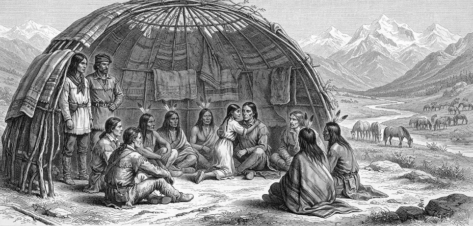
El río se fue haciendo cada vez más pequeño, más rápido y más frío, y la tierra cada vez más grande.
Pasaron el país de los pies negros sin ver a ninguno. Vieron sus rastros: campamentos abandonados, círculos de piedras donde habían estado las tiendas, huesos de búfalo, una vez un caballo muerto con una flecha. Vieron búfalos como Luc no había visto nunca, ni en el país de los mandanes: manadas que tardaban medio día en cruzar el río delante de las canoas, mugiendo, empujándose, ahogándose algunos, con el agua marrón llena de cabezas negras y cuernos. Vieron osos. Osos grandes, de pelo plateado, que no huían de los hombres sino que iban hacia ellos, y que no se morían aunque les dieras cinco o seis tiros, y que una vez persiguieron a seis soldados hasta el río y los hicieron saltar desde un barranco de veinte pies. Luc no se reía de los soldados. Él también habría saltado.
Y en junio llegaron a las cascadas.
Las oyeron un día antes de verlas. Un ruido sordo, constante, como un trueno que no acaba, que venía del oeste por encima de la llanura. Y una nube blanca, en el horizonte, quieta, como humo. Y por fin, desde lo alto de un barranco, el río entero cayendo.
Eran cinco, una detrás de otra, en millas de río. La primera, la más grande, de ochenta o noventa pies, un muro de agua blanca que caía sobre unas rocas negras y levantaba una niebla donde el sol hacía arcoíris. Lewis se quedó en lo alto mucho rato, solo, mirándola. Después escribió en su cuaderno hasta que se hizo de noche.
Luc miró las cascadas y pensó en una sola cosa: que había que subir las canoas por encima.
Tardaron un mes.
Hicieron unas ruedas con un tronco de álamo, el único que encontraron en leguas, cortado en rodajas. Hicieron unos carros con las ruedas y los mástiles de las piraguas. Cargaron las canoas encima. Y tiraron de ellas, a mano, como bueyes, durante dieciocho millas de llanura, cuesta arriba, una y otra vez, durante semanas, con el sol encima, con los mosquitos, con el suelo lleno de cactus pequeños, redondos, de espinas que atravesaban los mocasines y se metían en los pies, y que por la noche había que sacarse una a una a la luz del fuego. Luc contó una noche ciento cuarenta espinas en sus pies. Los soldados caían dormidos al llegar al campamento, en el suelo, donde estuvieran, y se levantaban al amanecer cojeando para volver a tirar.
Un día les cogió una tormenta de granizo. Piedras como puños. Les abría la cabeza, les tiraba al suelo, les hacía sangrar. Luc se metió debajo de una canoa con otros dos y oyó el granizo golpearla media hora, como tambores.
Ese mismo día, en un barranco cercano, una riada de lodo bajó de golpe por una quebrada seca y casi se llevó a Clark, a Charbonneau, a Sacagawea y al niño. Clark subió a Sacagawea a empujones por la pared del barranco con el agua por la cintura, y ella llevaba al niño en brazos, desnudo, porque la cuna se la había llevado el agua. Llegaron al campamento empapados, temblando, sin la cuna, sin la brújula de Clark, sin nada.
Sacagawea no dijo nada. Se sentó junto al fuego con el niño y le dio de mamar.
Más arriba, en julio, el río se dividió en tres.
Un valle ancho, verde, con muchas islas y muchos brazos de agua, con sauces y álamos y prados, y alrededor montañas. Montañas de verdad, altas, con nieve arriba en pleno verano. Los capitanes pusieron nombre a los tres ríos, por el presidente y por dos de sus ministros.
Y Sacagawea se paró en la orilla y se quedó mirando un sitio.
Luc estaba cerca, descargando una canoa. La vio quedarse quieta, con el niño a la espalda, mirando un trozo de orilla con unos sauces y un prado, y dar unos pasos hacia allí, y pararse otra vez.
Se acercó.
—Aquí —dijo ella, en hidatsa, sin mirarle—. Aquí estábamos.
—¿Quiénes?
—Mi gente. Hace cinco veranos. Acampados aquí, en este prado. Y vinieron los hidatsas por allí. —Señaló una loma, río abajo—. A caballo. Gritando. Y todo el mundo corrió. Los hombres hacia los caballos, las mujeres hacia el río, hacia los sauces. Yo corrí al río. Me metí en el agua hasta aquí. —Se tocó el pecho—. Y un hidatsa entró en el agua con el caballo y me cogió del pelo y me subió.
Se quedó callada.
—Ahí —dijo, y señaló un sitio en el agua, entre dos sauces—. Ahí me cogió.
Y se dio la vuelta y volvió a la canoa a ayudar a descargar.
Luc se quedó mirando el agua entre los dos sauces. Pensó en su madre, atada en una canoa con doce años. Pensó en Marie Rose, en la puerta del huerto, con el cuchillo. Siempre vienen otros, decía su madre.
Desde los tres ríos, el más grande de los tres, el que iba hacia el sudoeste, se fue estrechando. Las canoas rozaban el fondo. Había que meterse en el agua helada, hasta la cintura, y arrastrarlas contra la corriente, por encima de las piedras, día tras día. Los hombres tenían los pies hinchados, morados, llenos de cortes.
Y no había indios.
Eso era lo que preocupaba a todos. Los shoshones tenían que estar por allí. Sacagawea decía que sí, que en verano subían a aquellos valles. Pero no se veía a nadie. Un humo, una vez, lejos, en una montaña, que desapareció. Un rastro de caballos. Nada más.
—Se esconden —dijo Sacagawea, una noche, junto al fuego—. Tienen miedo. Creen que somos pies negros. O hidatsas.
Lewis se adelantó con Drouillard y dos soldados, a pie, por las montañas, a buscarlos. El resto siguió con las canoas, metidos en el agua.
Un día, Sacagawea señaló una roca enorme, en mitad del valle, con forma de cabeza de castor. Dijo que la conocía. Que de niña su gente pasaba el verano cerca de allí.
El 17 de agosto, por la mañana, Luc iba andando por la orilla con Clark, con Charbonneau y con Sacagawea, unos cientos de pasos por delante de las canoas.
Y Sacagawea se puso a bailar.
Luc no entendió al principio. La vio pararse de golpe, en mitad de la hierba, y empezar a saltar, a dar vueltas, a reír, con el niño botando en la espalda, y a chuparse los dedos, metiéndoselos en la boca, uno y otro, mirando hacia delante. Charbonneau la llamó. Clark se paró, con la mano en el rifle.
Delante, por el valle, venían jinetes.
Indios. A caballo. Cantando. Y Luc vio cómo montaban, y cómo llevaban el pelo, y la ropa, y supo lo que estaba viendo Sacagawea antes de que nadie lo dijera. Y entendió lo de los dedos. Era una seña. Que eran de su leche. Su gente.
Uno de los jinetes era Drouillard. Venía con ellos, riéndose.
Y de entre los indios salió una muchacha, más o menos de la edad de Sacagawea, a pie, corriendo, y Sacagawea corrió hacia ella, y se abrazaron en mitad de la hierba, y se quedaron así, abrazadas, llorando.
—La cogieron con ella —le dijo luego Charbonneau a Luc, con los ojos húmedos, él, que no lloraba nunca—. El mismo día. En los tres ríos. Y esta se escapó y volvió con los suyos. Y mi mujer no.
Los shoshones habían hecho un refugio de sauces, junto al río, para recibir a los capitanes. Un círculo de ramas, con mantas por encima para la sombra. Dentro se sentaron Lewis, Clark y los jefes shoshones, en el suelo, en círculo, y fumaron. Luc estaba en la entrada, con los demás, mirando.
Para hablar hacía falta una cadena. Los capitanes hablaban en inglés. Un soldado medio francés, Labiche, lo pasaba al francés. Charbonneau lo pasaba del francés al hidatsa. Y Sacagawea, del hidatsa al shoshone. Y vuelta.
Así que llamaron a Sacagawea. Entró en el refugio y se sentó en el suelo, a un lado, con la cabeza baja, como se sientan las mujeres en los consejos de los hombres.
Y empezó a traducir.
Luc la vio desde la entrada. La vio levantar la cabeza para mirar al jefe, al que estaba sentado en el sitio principal, un hombre de unos treinta años, delgado, con la cara seria y unos ojos muy duros. Y la vio quedarse quieta.
Y levantarse de un salto, y correr hacia él, y echarle encima su manta, y abrazarle, y echarse a llorar.
Nadie se movió. Los soldados se miraban. Los shoshones se miraban. Lewis tenía la boca abierta.
El jefe se quedó sentado, con la mujer abrazada a él. Tenía la cara quieta. Pero Luc vio que le temblaba la barbilla.
—Es su hermano —dijo Drouillard, al lado de Luc, muy bajo.
Al rato Sacagawea se separó. Se secó la cara. Volvió a su sitio, en el suelo. Y siguió traduciendo. Con la voz rota, parándose a veces para llorar, y siguiendo.
Luc no ha visto nunca a nadie hacer nada más valiente.
Se quedaron dos semanas con los shoshones. Y fueron las dos semanas en que Luc se ganó el sueldo.
Los shoshones eran pobres. Más pobres que nadie que Luc hubiera visto. Vivían en tiendas pequeñas de piel y de ramas, en los valles altos. No tenían casi carne: comían raíces, bayas, salmón seco del río del otro lado de las montañas, y a veces nada. Tenían tres o cuatro fusiles viejos y casi ninguna pólvora. Tenían arcos, escudos de piel, mazas de piedra con mango de madera, como las que contaba Thompson que usaban los snakes contra los peeagan en tiempos del viejo cree.
Snakes. Luc lo pensó la primera noche, junto al fuego, y se quedó frío. Estos eran los snakes. Los de las historias del viejo de Thompson, los que tuvieron caballos antes que nadie y bajaban a la llanura a dar mazazos desde lo alto a los que iban a pie. Los que se caían en el campo sin saber por qué cuando llegaron los fusiles. Los del campamento de los muertos.
Ahora vivían escondidos en las montañas, comiendo raíces.
Y tenían caballos.
Muchos. Cientos. Buenos. Luc fue a verlos el primer día, con Drouillard, y se quedó con la boca abierta. Caballos finos de patas, de cabeza corta, de todos los colores, gordos de la hierba de verano. Mejores que los de los osages. Mejores que los de los mandanes. Algunos llevaban frenos de hierro, de los españoles. Algunos, sillas de las de pomo alto, como las de los vaqueros de Ignacio en Nueva Orleans, hacía veinticuatro años. Había mulas.
Y algunos tenían marcas a fuego en el anca. Hierros españoles.
Luc puso la mano en uno. Una letra con algo encima, como una cruz. Pensó en Nuevo México, en Taos, en el hijo de Marie Rose, en los ranchos de Albuquerque de donde había venido el Gris. Pensó que aquel caballo había hecho el mismo camino que él, pero al revés y por otro sitio, de mano en mano, de feria en feria, hasta estas montañas.
Los capitanes necesitaban treinta. Para cruzar las montañas, donde ya no había río. Y Cameahwait, el hermano de Sacagawea, no quería venderlos. Eran lo único que tenían. Los necesitaban para bajar a la llanura en otoño, a cazar búfalos deprisa, antes de que los vieran los pies negros.
Una noche, junto al fuego, Cameahwait habló con los capitanes. Luc estaba cerca, con Sacagawea, que le iba diciendo en voz baja, en hidatsa, lo que decía su hermano.
—Dice que si tuvieran fusiles, bajarían a vivir a la llanura, a la tierra de los búfalos, y comerían como sus enemigos. Y no tendrían que esconderse en las montañas, comiendo raíces y bayas, como los osos.
Lewis le contestó. Larga. Sacagawea fue traduciendo.
—Dice que cuando vuelvan a su tierra mandarán comerciantes con fusiles. Muchos. Y pólvora. Y balas. Y que entonces su gente podrá bajar a la llanura sin miedo.
Cameahwait escuchó. Miró a Lewis mucho rato. Dijo algo, corto.
—Dice que le cree —dijo Sacagawea.
Y se quedó callada, mirando el fuego.
—¿Tú le crees? —le preguntó Luc.
—Lo dijeron —dijo ella.
Compraron veintitantos caballos. Luc los compró casi todos, uno a uno, durante días, sentado en el suelo con un shoshone delante y un caballo detrás, con Sacagawea al lado para traducir, regateando con señas, con palabras sueltas, con paciencia. Mirándoles los dientes, las patas, los cascos, el lomo. Por un cuchillo. Por un hacha. Por una camisa. Por una pistola vieja, cien cartuchos y un poco de pólvora, el mejor, uno castaño, fuerte, que se quedó Clark. Por unas cuentas. Por un trozo de tela roja.
Los shoshones no se fiaban. Pero Luc se sentaba con ellos, y fumaba, y comía sus raíces, y les hablaba de caballos con las manos, que es una lengua que entienden todos los que tienen caballos. Y al final se reían con él, y le vendían.
Cruzaron las montañas en septiembre. Fue lo peor del viaje. Nieve en las cumbres, sin caza, sin camino, por sendas de los nez percés que subían y bajaban por laderas cubiertas de árboles caídos, con los caballos resbalando, cayendo, rodando. Comieron lo que llevaban. Comieron velas de sebo. Comieron una sopa en polvo que había traído Lewis desde Filadelfia y que sabía a cola. Y mataron a uno de los potros, uno joven que no servía para cargar, y se lo comieron.
Luc no comió. No pudo.
Al otro lado, en la tierra de los nez percés, les dejaron los caballos para la vuelta, y bajaron en canoas por ríos rápidos, llenos de rocas, con salmones muertos en las orillas. Y en noviembre, una mañana de niebla y de lluvia, Clark escribió en su cuaderno, con una letra más grande que nunca, que ya veían el océano.
Luc lo vio. Gris, enorme, con olas largas que venían de muy lejos y se rompían en las rocas con un ruido que no se parecía a nada.
Bajó a la playa. Buscó entre las piedras hasta que encontró una concha. Pequeña, blanca y rosa, como la del collar de su madre. Se la guardó en la bolsita, con su pelo de niño y el rosario de Taos.
Para Rose.
Two Medicine
Del río Marías al Misuri · 26-28 de julio de 1806 · y los pueblos mandanes, agosto
Luc
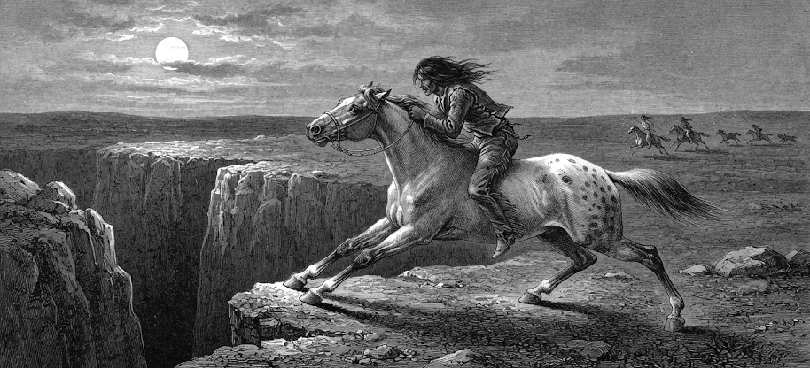
En las montañas, a la vuelta, en julio, los capitanes se separaron.
Clark se fue hacia el sur, con la mayoría, por un río que bajaba hacia el país de los crow. Lewis se fue hacia el norte, con unos pocos, por un camino que los nez percés le dijeron que era más corto hasta las cascadas del Misuri. Y luego, desde las cascadas, quería subir por un río que se llamaba Marías, hacia el norte, hacia el país de los pies negros, para ver hasta dónde llegaba. Para saber si los ingleses de Canadá estaban dentro o fuera de la tierra que el presidente había comprado.
Luc pensó en Thompson, en la nieve, con su sextante, buscando por dónde pasaban las líneas de los papeles. No dijo nada.
Lewis le pidió que fuera con él.
—Vamos a llevar caballos —le dijo—. Por la llanura, por tierra de los pies negros. Si nos cruzamos con ellos, querrán quitárnoslos. Quiero a alguien que sepa de caballos.
Así que en las cascadas, cuando Lewis dejó a la mayoría de sus hombres esperando a las canoas que bajarían de las montañas, y se fue hacia el norte con solo tres, Drouillard y los hermanos Field, Joseph y Reubin, dos muchachos de Kentucky, fuertes, callados, buenos tiradores, Luc fue el cuarto.
Cinco hombres. Seis caballos. La llanura.
Subieron por el Marías varios días. Una llanura abierta, ondulada, de hierba corta, sin árboles salvo en el fondo de los arroyos, con las montañas a la izquierda, azules, lejos, con nieve. Había búfalos. Había lobos. No había nadie.
Lewis apuntaba. Medía el sol al mediodía con su aparato. Llovió dos días seguidos y no pudo medir, y se puso de mal humor. Decidió volver.
Y el 26 por la tarde, desde lo alto de una loma, Drouillard, que iba delante, se tiró del caballo y se agachó.
Abajo, en el valle de un río, había caballos. Unos treinta. Y hombres. Ocho. Jóvenes, casi niños, algunos. Con arcos, con dos fusiles. Estaban en otra loma, mirando hacia otro lado, hacia Drouillard, que se había adelantado por el fondo del valle y no sabía que le estaban mirando.
Lewis sacó el catalejo. Luc vio cómo se le ponía la cara.
—Pies negros —dijo.
Lewis dijo que había que bajar. Que si huían, los perseguirían, porque tenían más caballos y mejores. Que era mejor ir hacia ellos, como amigos.
Bajaron. El capitán delante, con una bandera.
Los muchachos los vieron. Se asustaron. Uno se vino al galope hacia ellos, se paró a cien pasos, los miró, y volvió. Luego vinieron todos. Y se dieron la mano. Y fumaron.
Luc los miró de cerca. Tenían quince, dieciséis años, la mayoría. Uno no tendría catorce. Delgados, morenos, con el pelo largo, con camisas de piel de ciervo con flecos, con mocasines bordados. Muy serios. Miraban los rifles de los blancos. Miraban los caballos. Uno miraba a Luc, sin parar, como si no supiera qué era.
Drouillard hablaba con ellos con las manos. Así se habla en la llanura con los que no tienen tu lengua. Dijo que eran amigos. Que venían del mar. Que el capitán era jefe de un pueblo grande del este. Y los muchachos dijeron que eran piegan. Que su campamento grande estaba a medio día, junto a las montañas. Que había un comerciante blanco, inglés, a seis días al norte, en un fuerte, que les daba fusiles.
Piegan. Peeagan. La gente del viejo cree de Thompson. Los de los fusiles contra los snakes. Los del Gran Perro.
Luc tuvo de pronto ganas de preguntarles por un viejo que se llamaba Hombre Joven. No lo hizo. Ya llevaría muerto muchos años.
Acamparon juntos esa noche, junto al río, debajo de tres álamos grandes. Los muchachos hicieron un refugio con pieles y los invitaron a dormir dentro. Y Lewis, junto al fuego, les habló. Mucho rato. Drouillard traducía con las manos.
Luc, que entendía las señas, lo fue viendo. Y se le fue poniendo la piel de gallina.
Lewis les dijo que el Padre de Washington quería la paz entre todos los pueblos. Que había hecho la paz con los nez percés, con los shoshones, con los flathead, al otro lado de las montañas. Que todos esos pueblos iban a comerciar con los americanos. Que los americanos les iban a dar fusiles, y pólvora, y balas.
A los shoshones. A los snakes. A la gente de Sacagawea, a la que los piegan llevaban cincuenta años echando de la llanura porque tenían fusiles y ellos no.
Luc miró a los muchachos. Escuchaban. Se miraban entre ellos.
Luc vio cómo se miraban.
Esa noche no durmió casi. Se tumbó al lado de Drouillard, con el rifle debajo de la manta, dentro del refugio de pieles, oyendo respirar a los muchachos piegan a un brazo de distancia. Lewis puso guardia: él primero, luego Reubin Field, luego Joseph. Luc oyó los cambios. Oyó a los caballos. Oyó a un búho.
Se durmió al final, sin querer, cuando ya clareaba.
Le despertó un grito.
Joseph Field. Fuera. Gritando el nombre de su hermano.
Luc abrió los ojos y vio encima de él, en la luz gris, a un muchacho piegan con las dos manos en el rifle de Drouillard, tirando. Y a Drouillard despertándose, agarrando el rifle, gritando algo en francés, peleando. Luc se echó encima del muchacho. Rodaron los tres por el suelo, entre las pieles, a golpes, y Drouillard le arrancó el rifle de las manos, y el muchacho salió corriendo del refugio.
Fuera, los dos hermanos Field corrían detrás de otro que se llevaba sus rifles. Le alcanzaron a unos pasos. Y Reubin, que tenía un cuchillo en la mano, se lo clavó. Una vez. En el pecho. El muchacho dio unos pasos con el cuchillo dentro, y se cayó en la hierba.
Lewis salía del refugio con la pistola, gritando, detrás de otro que se llevaba su rifle. El muchacho lo soltó y echó a correr.
Y entonces los demás fueron a por los caballos. Todos. Los suyos y los de los blancos. Para llevárselos. Para dejarlos a pie, solos, en la llanura, a días de su gente. Que era como dejarlos muertos.
Lewis salió corriendo detrás de dos que se llevaban una manada, a pie. Luc fue detrás de él. Le oyó gritarles. Uno se dio la vuelta, con un fusil.
Y Lewis le disparó.
Luc lo vio. Lo vio caer de rodillas, en la hierba, con las manos en la tripa. Un muchacho. Diecisiete años, como mucho. Y lo vio levantar el fusil, de rodillas, y disparar.
La bala pasó entre Lewis y Luc. Luc la oyó. Un zumbido, como una avispa, al lado de la oreja. Lewis se tiró al suelo. Se tocó la cabeza. Dijo que había sentido el viento de la bala en el pelo.
El muchacho se arrastró detrás de unas rocas. No le vieron más.
Pero tenía un tiro en la tripa. Y de eso no se vive.
Los demás piegan se habían ido. Al galope, hacia su campamento grande, con una parte de los caballos.
El sol salía. Todo estaba muy quieto. Junto al refugio de pieles, en la hierba, el muchacho del cuchillo estaba boca arriba, con los ojos abiertos.
Lewis mandó quemar sus cosas. Los escudos, los arcos, las flechas, lo que se habían dejado. Luc echó al fuego un escudo de piel de búfalo pintado con un sol rojo, y lo vio arrugarse y ennegrecerse, y pensó en el escudo del viejo cree, colgado en su tienda, que Thompson decía que pesaba tanto que se le fue el brazo.
Y luego Lewis fue hasta el muchacho muerto. Y le puso al cuello una medalla de plata. De las que llevaban para los jefes, con la cara del presidente de un lado y dos manos estrechándose del otro.
—Para que sepan quiénes somos —dijo.
Drouillard, a su lado, no dijo nada. Pero Luc le oyó, en francés, muy bajo, para él solo:
—Ya lo saben.
Cogieron los mejores caballos de los piegan que quedaban, cuatro, y tres de los suyos. Y salieron al galope. Hacia el sur, hacia el Misuri, donde tenían que encontrarse con los otros, los de las canoas. Sin parar. Porque en cuanto llegaran los muchachos al campamento grande, saldrían todos detrás.
Uno de los caballos de los piegan era gris.
Luc lo vio al cogerlos, en la luz de la mañana, y se le paró el corazón. Gris claro, casi blanco por el cuello, más oscuro de patas. Con manchas en las ancas como gotas de lluvia en una piedra. Y una estrella en la frente.
Cinco años, seis. La edad que tendría el Gris si viviera.
Le puso la mano en el cuello. El caballo le miró. No hizo nada.
No era nada, se dijo. No era nada.
Lo montó.
Cabalgaron todo el día. Sin parar más que para que bebieran los caballos. Por la llanura, por las lomas, cruzando arroyos, con el sol encima. Lewis delante, sin hablar. Nadie hablaba.
Y siguieron de noche, con luna. Luc iba el último, en el gris, vigilando hacia atrás.
A medianoche la luna se metió detrás de una nube. Todo se puso negro. No se veía el suelo. Luc iba al galope detrás de los otros, guiándose por el ruido de los cascos.
Y sin pensar, sin saber por qué, le apretó las rodillas al caballo.
Como le había enseñado a apretárselas al Gris, en el corral de detrás de su casa, en San Luis, cuando lo domaba, despacio, un año entero, sin pegarle nunca. Como le apretaba Drouillard al Gris en las cacerías del invierno de los mandanes.
Y el caballo se paró en seco.
Luc casi salió por encima de su cuello. Se agarró a las crines. Y en ese momento salió la luna de detrás de la nube, y vio que estaban en el borde de un barranco. Que el suelo se acababa a un paso de los cascos delanteros. Que abajo, a veinte pies, había piedras.
Se quedó quieto, temblando. El caballo también temblaba.
Drouillard volvió atrás al galope a ver qué pasaba. Miró el barranco. Miró a Luc. Miró el caballo.
—Muchos caballos hacen eso —dijo.
—Sí.
—Los indios les enseñan.
—Sí.
—No quiere decir nada.
—No.
Drouillard se quedó un momento más, mirando la estrella del caballo, blanca en la luz de la luna. Luego dio la vuelta y siguió.
Luc le pasó la mano por el cuello al caballo, despacio. Y siguió también.
Llegaron al Misuri el 28, por la mañana. Cien millas o más en un día y una noche. Desde lo alto de la orilla vieron bajar por el río las canoas de los otros, como si lo hubieran calculado. Gritaron. Les vieron. Bajaron.
Se metieron en las canoas con las sillas y las armas, a toda prisa, porque podían venir los piegan detrás. Y los caballos no cabían.
Los soltaron allí mismo. En la orilla.
Luc le quitó la cuerda al gris el último. Se quedó un momento con la mano en su cuello. El caballo le miró.
Luc pensó en el Gris, en la nieve de Fort Mandan, llevándoselo los sioux. Pensó en el comanche viejo de Vial, llorando por un caballo gris con una estrella. Pensó en lo que le había contado Thompson, borracho, en la nieve, del viejo cree: si ves alguna vez un caballo así, no lo mates. Es de los nuestros.
Le dio una palmada en el anca.
Los otros caballos se quedaron un rato quietos, como si no entendieran. Después se fueron hacia el norte, por donde habían venido, hacia su gente.
El gris se fue hacia el sur. Solo. Por la orilla. Al trote.
Luc lo estuvo mirando desde la canoa hasta que no lo vio más.
Bajaron el Misuri deprisa, a favor de la corriente. Dos semanas después, en un bosque de sauces de la orilla, cazando alces, Cruzatte, el del violín, que era tuerto y veía mal del otro ojo, vio algo marrón moverse entre los sauces y disparó. Era Lewis, vestido de cuero. La bala le entró por una nalga y le salió por la otra.
Luc lo vio llegar a la canoa cojeando, sangrando, gritando que eran indios. No había indios. Cruzatte juró que no había sido él. Nadie le creyó.
Al día siguiente encontraron a Clark y a los suyos, que bajaban por el río desde el país de los crow. Y el 14 de agosto, a mediodía, con un sol que rajaba las piedras, llegaron a los pueblos mandanes.
Dispararon una salva. Los mandanes salieron a los barrancos.
Y en el campo de maíz de la orilla, debajo del pueblo de abajo, con una cesta de calabazas en la cadera, había una mujer que se reía muy fuerte, y una niña de seis años a su lado, que señalaba las canoas.
Marguerite había subido en junio con unos comerciantes de San Luis. A esperarle donde su madre. Porque la madre de Luc le había dicho, en una mezcla de pawnee y de señas, que si volvía, volvería por el río, y pasaría por allí.
Luc saltó de la canoa antes de que llegara a la orilla. Con el agua por la cintura.
Rose no le reconoció al principio. Tenía barba, el pelo largo, la ropa de cuero rota, la cara negra de sol.
Luego sí.
Esa noche, en la casa redonda de la abuela, le dio la concha del mar del Oeste. Rose se la estuvo mirando hasta que se durmió con ella en la mano.
Colter se queda
Pueblos mandanes y río abajo hasta San Luis · 15 de agosto-23 de septiembre de 1806
Luc
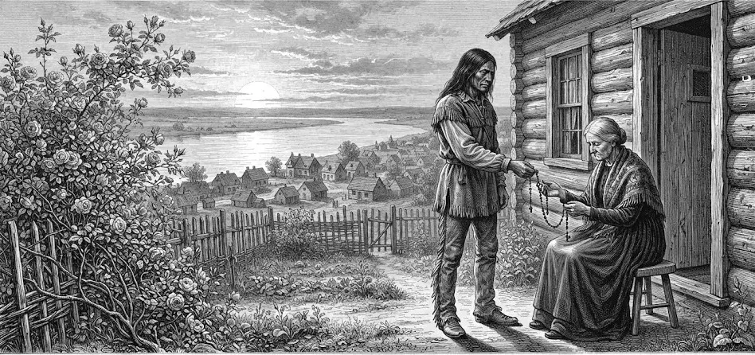
El que se quedó fue Colter.
Luc lo conocía bien, después de dos años. Un muchacho de Virginia, de unos treinta años, que había crecido en Kentucky, alto, flaco, de pelo castaño, con los ojos azules muy claros, callado, que cazaba casi tan bien como Drouillard y que en el invierno de Fort Mandan se había pasado las noches junto al fuego arreglando trampas para castores sin que nadie se lo pidiera. No bebía mucho. No se peleaba. Andaba sin hacer ruido, como los indios. Y miraba siempre hacia el oeste.
Unos días antes de llegar a los mandanes, río arriba, los capitanes se habían encontrado con dos tramperos americanos, de Illinois, que subían el Misuri en una canoa a buscar castores. Los primeros americanos que veían en dos años. Se llamaban Dickson y Hancock. Iban solos, con unas trampas, un poco de pólvora y mucho valor, hacia el país de los pies negros, donde los ríos estaban llenos de castores que no había tocado nadie. No conocían el camino. No conocían a los indios. No sabían nada.
Y le pidieron a Colter que fuera con ellos.
Colter fue a hablar con los capitanes la mañana del 15. Luc estaba en la orilla, ayudando a cargar las canoas, y lo vio entrar en la casa del jefe mandán donde estaba Lewis tumbado boca abajo y Clark sentado a su lado escribiendo. Tardó un rato en salir. Cuando salió, venía sonriendo.
—Me dejan —dijo a nadie en particular.
Y se fue a buscar a Dickson y a Hancock.
Los demás hombres no lo entendían. Llevaban más de dos años fuera de casa. Habían cruzado medio continente, ida y vuelta. Habían pasado hambre, frío, osos, cascadas, montañas, indios, fiebres, lluvia. Habían visto el mar. Estaban a dos meses de San Luis, río abajo, a favor de la corriente, con la paga de dos años esperándoles, y tierras gratis que el gobierno les había prometido, y whisky, y mujeres, y camas. Y Colter quería volverse río arriba. Otra vez. Con dos desconocidos. Al país de los pies negros.
—Está loco —decía uno de los sargentos.
—No —dijo Drouillard, que estaba al lado de Luc, mirándolo—. Ha visto demasiado.
Luc le miró.
—Cuando ves lo que hay allí arriba —dijo Drouillard—, los ríos, las montañas, los valles llenos de bisontes y de castores y de nada más, sin nadie, sin casas, sin pueblos, sin tabernas, sin gobernador... Algunos no pueden volver. Se les queda dentro. Yo vuelvo. Pero no sé por cuánto tiempo.
Colter se fue el 17, por la mañana, en la canoa de Dickson y Hancock, río arriba, contra la corriente, con unas trampas, un rifle, pólvora y balas que le dieron los capitanes, y lo que llevaba puesto.
Los hombres le despidieron desde la orilla, con gritos, con tiros al aire. Algunos se reían de él. Otros no. Luc le vio pasar en la canoa, remando en la proa, con el sombrero de cuero echado hacia atrás. No miró atrás.
Luc supo años después lo que le pasó.
Supo que Colter, al cabo de un año, pasó un invierno solo, en las montañas, en un país de ríos calientes que echaban humo, de agua que salía de la tierra hirviendo, en columnas, hasta el cielo, con un ruido de tormenta, y de piedras de colores, amarillas, rojas, verdes, y de olor a azufre, como el infierno. Y que cuando lo contó en San Luis nadie le creyó, y se reían de él en las tabernas, y llamaban a aquel sitio el Infierno de Colter.
Supo que en 1808, en el país de los Tres Ríos, donde habían cogido a Sacagawea de niña, los pies negros le cogieron a él. A él y a otro, un tal Potts, que iban en canoa poniendo trampas. Mataron a Potts. Y a Colter le desnudaron, le quitaron todo, hasta los mocasines, y le dijeron que corriera. Que le daban ventaja. Que si llegaba vivo al río, a cinco millas, por una llanura llena de cactus, descalzo, con cien guerreros detrás, era libre.
Y que corrió. Y que llegó. Y que se escondió debajo de un montón de troncos en el agua, con la nariz fuera, mientras los pies negros le buscaban por encima. Y que anduvo once días, desnudo, comiendo raíces, hasta un fuerte.
Y supo que Drouillard, que había dicho «yo vuelvo, pero no sé por cuánto tiempo», volvió también a las montañas al año siguiente, a cazar castores, y que en la primavera de 1810, en los Tres Ríos, en el mismo sitio, los pies negros le mataron. Le encontraron sus compañeros despedazado, junto a sus dos caballos.
Los pies negros no habían olvidado lo del río de los Dos Medicinas. Ni la medalla.
No eran cosas que se olvidaran.
Sacagawea se quedó también.
Charbonneau cobró su paga, quinientos dólares y treinta y tres centavos, por su trabajo de intérprete y por el caballo y la tienda que había puesto, y se quedó con los hidatsas, con sus mujeres. A ella no le pagaron nada. No estaba contratada. Era la mujer del intérprete.
Clark quiso llevarse al niño. Se lo dijo a Charbonneau delante de todos: que le dejara a Pomp, que él se lo llevaría a San Luis, que le criaría como a un hijo, que le daría estudios. Charbonneau dijo que cuando fuera mayor. Sacagawea no dijo nada. Le tenía en brazos, dormido, y lo apretaba.
Luc fue a despedirse de ella la mañana que se iban. La encontró a la puerta de una casa hidatsa, sentada en la tierra, con el niño.
—¿Vas a volver con tu gente alguna vez? —le preguntó.
—No sé —dijo ella—. Está muy lejos.
—Los capitanes prometieron fusiles a tu hermano.
—Ya lo sé.
—¿Crees que se los llevarán?
Ella le miró con aquella cara redonda que no se movía.
—Los capitanes han prometido muchas cosas a mucha gente —dijo—. A los mandanes. A los sioux. A los nez percés. A los piegan, que les iban a dar fusiles a sus enemigos. Prometer es fácil. Lo difícil es acordarse.
Luc no supo qué decir.
—Tú te acuerdas —dijo ella—. Lo veo en tu cara. Eres de los que se acuerdan.
—Mi madre dice lo mismo.
—Tu madre tiene razón —dijo Sacagawea.
Y le dio la mano al niño para que se la diera a él. Jean-Baptiste le cogió el dedo y tiró. Luc se lo dejó.
No la vio nunca más.
Bajaron el Misuri en cinco semanas. Lo que les había costado cinco meses subir.
Iban en las canoas y en las piraguas, los capitanes, los hombres, el perro, York, Jusseaume con su mujer mandana y sus hijos, y el jefe del pueblo de abajo, Sheheke, al que los franceses llamaban Gros Blanc, el Gran Blanco, porque era enorme y de piel clara, que había aceptado ir a Washington a conocer al presidente, con su mujer y su hijo. Y Luc con Marguerite y con Rose.
La abuela no lloró cuando se despidió de Rose. Le dio un collar de conchas azules del mar del Oeste, de las que traían los crow, y le dijo en mandán que no se lo quitara nunca. Y luego se dio la vuelta y entró en su casa redonda de tierra, sin decir nada más, y no salió a verles irse.
Marguerite sí lloró. Todo el primer día, en la canoa, en silencio, mirando hacia atrás, hacia los barrancos de los pueblos, hasta que se perdieron detrás de un recodo.
Dejó de llorar. Y se puso a enseñarle a Rose a remar.
Pasaron por todos los sitios. Por los arikaras, que estaban en guerra con los mandanes y no quisieron saber nada del jefe que iba con ellos. Por los tetones de Búfalo Negro, que les gritaron desde la orilla, en un recodo, y les enseñaron el culo, y Clark les gritó que eran unos perros y que no volvieran a acercarse. Por los omahas, por la colina de Pájaro Negro, sentado en su caballo bajo la tierra, mirando pasar las barcas de los blancos. Por el sitio del fuerte Carlos. Por la tumba del sargento Floyd, en lo alto del barranco, que estaba abierta, saqueada por algún indio, y que los capitanes volvieron a cerrar.
Y empezaron a cruzarse con gente que subía.
Barcas de comerciantes, de San Luis, cargadas de mercancía para los indios. Tramperos americanos, de dos en dos, de tres en tres, con sus canoas y sus trampas, como Dickson y Hancock, hacia el oeste. Un comerciante que se llamaba McClellan, que conocía a Lewis del ejército, y que cuando los vio se quedó blanco, porque en San Luis, dijo, todo el mundo los daba por muertos. Hacía un año que no se sabía nada de ellos. Decían que los habían matado los indios, o los españoles, que habían mandado soldados desde Santa Fe a buscarlos para detenerlos.
—¿Los españoles? —dijo Luc.
—Eso dicen —dijo McClellan—. Que el gobernador de Nuevo México mandó cuatrocientos o quinientos soldados hacia el norte, por las llanuras, hasta los panis, para cortarles el paso. Que no los encontraron. Que se volvieron.
Luc pensó en Vial. En Vial cruzando las llanuras, desnudo. En que los españoles, que no tenían soldados para defender San Luis, tenían quinientos para ir a buscar a unos americanos por la pradera.
Pensó que nadie se rinde nunca del todo.
Y pensó en José Julián, en Taos. Que ahora estaba en otro país.
Llegaron a San Luis el 23 de septiembre, a mediodía.
Los vieron desde el barranco antes de que doblaran el último recodo. Alguien gritó. Luego más. Y cuando las canoas aparecieron en el río, en fila, y los hombres dispararon una salva con todos los fusiles a la vez, todo el pueblo estaba en lo alto del barranco y en el embarcadero, gritando, aplaudiendo, llorando.
Luc vio a su madre.
Estaba al borde del barranco, delante de la casa de los Chouteau, con su delantal de cocina, con el pelo blanco ya, recogido, de pie, quieta. No gritaba. No aplaudía. Miraba. Como miraba siempre, como si contara.
Contó. Luc la vio contar. A él. A Marguerite. A Rose.
Y luego se sentó en el suelo, allí mismo, en el borde del barranco, con las piernas cruzadas, y se tapó la cara con el delantal.
Lambert le estaba esperando en el embarcadero. Gordo, rojo, llorando a lágrima viva, sin vergüenza, como lloraba su padre. Le abrazó. Abrazó a Marguerite. Cogió a Rose en brazos, que ya pesaba, y le dio vueltas.
—¿Y tu madre? —le preguntó Luc.
Lambert dejó a la niña en el suelo.
—Está bien —dijo—. Mayor. No sale mucho. —Se secó la cara con la manga—. Ha llegado carta de José. De Taos. Por un comerciante que vino por el camino de Vial. Está bien. Tiene once nietos. Dice que le van a dejar seguir siendo español aunque su madre sea americana.
Se rio.
—Mi madre la tiene debajo de la almohada —dijo—. La carta.
Luc metió la mano en la camisa. Sacó la bolsita de piel. La abrió. Sacó el rosario de cuentas negras con la cruz de plata.
—Dáselo —dijo.
Lambert lo miró.
—Dáselo tú —dijo.
Subió a la casa de arriba al atardecer.
El huerto estaba igual. Las rosas del rincón que daba al oeste se habían hecho un rosal enorme, desordenado, que trepaba por la cerca y daba flores rojas, pequeñas, ya un poco pasadas, de final de verano. Marie Rose estaba sentada a la puerta, en un taburete, con un chal negro sobre los hombros, aunque no hacía frío. Le vio subir. No se levantó.
Luc le dio el rosario.
Ella lo cogió con las dos manos. Lo miró. Pasó los dedos por las cuentas, una a una, como si rezara, aunque no movía los labios.
—Ha ido muy lejos —dijo, en español.
—Hasta el mar del Oeste.
—Más lejos que yo.
Se quedó un rato callada, con el rosario en las manos, mirando hacia el oeste, por encima de las rosas, donde el sol se estaba poniendo.
—¿Y el caballo? —preguntó—. El de José. El gris.
Luc no sabía que ella supiera lo del caballo. Pero claro que lo sabía. Lo sabía todo.
—Se lo llevaron los sioux —dijo—. Un invierno. —Y luego, sin saber por qué, le contó lo demás. Lo de los piegan. Lo de la noche al galope y el barranco. Lo del gris que se fue solo, hacia el sur, por la orilla del Misuri, al trote.
Marie Rose le escuchó sin decir nada.
Cuando terminó, ella asintió.
—Hacia el sur —dijo—. Hacia casa.
Y se quedó mirando el sol hasta que se puso.
Lo que queda
Longueuil, frente a Montreal · primavera de 1846
Lo cuenta David Thompson
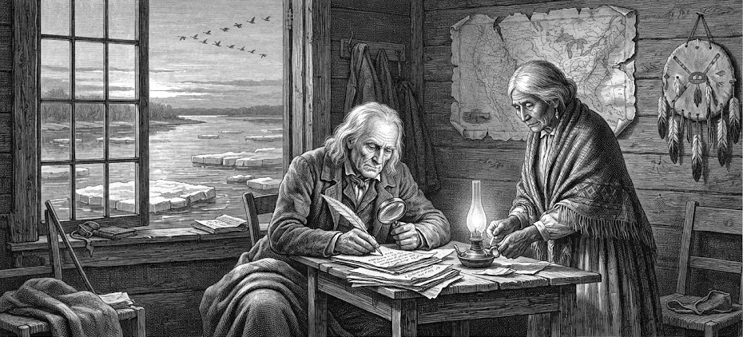
Ha llegado la primavera también aquí, aunque aquí llega de otra manera. Sin Come-nieves. Sin estallido. El hielo del río de San Lorenzo se ha ido rompiendo poco a poco, durante semanas, con un ruido sordo, de noche, como alguien que se mueve en la habitación de al lado, y ahora el río baja ancho y gris, lleno de bloques sucios que van hacia el mar. Han vuelto los gansos. Los oigo pasar, de noche, muy alto. No los veo. Ya no veo casi nada.
Charlotte me lee en voz alta lo que he escrito, cada tarde, y yo corrijo. Ella no sabe leer inglés, pero ha aprendido a leer mi letra, que es otra cosa, a fuerza de verme escribir cuarenta y siete años. Lee despacio, con su acento, deletreando las palabras largas, y a veces se para y me pregunta qué quiere decir algo, y yo se lo explico, y ella dice que eso no es así, que yo me he equivocado, y casi siempre tiene razón.
Hoy me ha leído todo lo del viejo. Desde el principio. Desde la tienda en el río del Arco hasta la yegua gris que se fue sola hacia el sur.
Cuando ha terminado, se ha quedado callada mucho rato. Luego ha dejado los papeles en la mesa, con cuidado, y ha dicho:
—Falta el final.
Tiene razón. Falta el final. Pero no sé cuál es.
Saukamappee está muerto desde hace más de cincuenta años, en un árbol junto al río del Arco, si el árbol sigue en pie, que lo dudo. Kootanae Appe murió también, no sé cuándo, no sé cómo; un día dejé de oír hablar de él. Los muchachos que me enseñaban a romper el hielo de los ollares de los caballos serán viejos ahora, si viven. La viruela volvió, en 1837, peor que la primera vez, con los barcos de vapor de los americanos que suben ahora el Misuri echando humo. Me dicen que esta vez se murieron dos de cada tres pies negros. Me dicen que los mandanes, los de los dos pueblos en los barrancos, los de las barcas redondas de cuero, los del jefe que le dijo a Evans que los blancos no son cosas que se olviden, desaparecieron casi enteros: de mil y pico quedaron apenas ciento y pico. Me dicen que en las llanuras ya hay menos bisontes. Que los matan por miles, por la piel y por la lengua, y dejan la carne pudrirse. Que los americanos han empezado a cruzarlas en carros, con sus familias, hacia el oeste, hacia el mar, por un camino que llaman de Oregón.
Y los caballos siguen allí. Eso sí. Más que nunca. Me dicen que los comanches, en el sur, tienen tantos que ya no saben qué hacer con ellos. Que los sioux, que cuando yo estaba en los mandanes iban a pie y en canoa, son ahora los mejores jinetes de la llanura y los dueños de todo el país del Misuri. Que los pies negros siguen siendo ricos en caballos, aunque pobres en todo lo demás.
El Gran Perro.
Llegó del sur cuando el viejo era joven. Les hizo grandes. Y llegó, por el mismo camino, la otra cosa. Y luego, desde el norte, los fusiles. Y luego, desde el este, los americanos.
Así que no sé cuál es el final. Porque no se ha acabado.
Charlotte dice que eso no vale. Que un libro tiene que tener final, aunque la vida no lo tenga.
Así que voy a contar una última cosa. La única que me queda.
En el verano de 1812, cuando salí del país de las pieles para no volver, bajé por última vez el Saskatchewan en canoa, con Charlotte y los niños, camino de Montreal. Llevaba veintiocho años en el oeste. Había llegado con catorce. Me iba con cuarenta y dos, con mujer y cinco hijos, un ojo ciego, una pierna mala, cajas de cuadernos, y el mapa más grande que nadie había dibujado nunca de aquella tierra, que me iban a pagar mal y que iba a firmar otro.
Al pasar por el sitio donde había estado Manchester House, el fuerte de donde salí a caballo aquel octubre de 1787 hacia el campamento de los piegan, le dije a los remeros que pararan.
No quedaba nada. Unos troncos negros, quemados, entre la hierba alta. La Compañía lo había abandonado hacía muchos años. Los indios lo habían quemado.
Subí a la loma que había detrás. Desde allí se veía la pradera, hacia el sudoeste, hasta el horizonte. La misma que había visto con diecisiete años, la primera mañana, desde el caballo bayo y viejo que me dieron, antes de caerme la primera vez. Amarilla. Lisa. Inmensa. Con el cielo como una campana de cristal encima.
Y en la pradera, lejos, muy lejos, se movía algo.
Caballos. Una manada. Salvajes, o de algún campamento, no lo sé. Veinte o treinta, corriendo, sin jinetes, por la hierba, con las crines al viento, levantando polvo. Los vi correr de un lado a otro del horizonte, como corren los caballos cuando no van a ninguna parte, por el gusto de correr. Y luego se pararon. Y se quedaron quietos, lejos, pastando.
Estaban demasiado lejos para distinguir colores. Puntos, nada más. Puntos oscuros y puntos claros sobre la hierba amarilla.
Uno de los puntos era muy claro. Casi blanco.
No pude ver si tenía una estrella. Estaba demasiado lejos. Y yo ya veía mal entonces.
Me quedé mirándolo mucho rato. Charlotte subió a la loma a buscarme. Los remeros llamaban desde abajo, impacientes. Y yo no me movía.
—¿Qué miras? —me preguntó ella, en cree.
—Un caballo —le dije.
—¿Cuál?
No supe qué contestarle. Le dije que uno gris. Que a lo mejor era de los nuestros.
Ella no me preguntó qué quería decir. Se quedó a mi lado, mirando también. Y al cabo de un rato me cogió del brazo, como me coge ahora para llevarme de la mesa a la cama, y me dijo:
—Vamos. Que nos esperan.
Y bajamos.
Eso es todo.
No sé si alguien leerá esto. Lo dudo. Los libreros de Montreal y de Londres no quieren saber nada de un viejo ciego y pobre que escribe sobre indios. Charlotte dice que lo leerán nuestros nietos. Yo creo que nuestros nietos tendrán cosas mejores que hacer. Pero no importa.
El viejo me lo dijo. El último día, sentado a la puerta de su tienda, al sol, con la manta sobre los hombros.
Tú te acuerdas. Eso basta.
Me he acordado.
Charlotte acaba de entrar. Ha visto que he dejado la pluma. Me ha preguntado si he terminado.
Le he dicho que sí.
Ha cogido el último papel, el que tiene todavía la tinta húmeda, y se lo ha acercado a la ventana, a la poca luz que queda, y lo ha leído en voz baja, moviendo los labios. Y luego lo ha dejado encima de los demás, y ha cuadrado el montón con las dos manos, como hacía su madre con las pieles cuando las apilaba para la Compañía.
—Está bien —ha dicho.
Y luego, en cree, sin mirarme, mientras encendía la lámpara:
—Mi abuela también decía que un día volverían.
—¿Quiénes?
—Los caballos —ha dicho—. Que los blancos se irían, o no, eso daba igual. Pero que los caballos ya eran de aquí. Que habían venido para quedarse. Como nosotros.
Ha puesto la lámpara en la mesa, a mi lado, aunque sabe que ya casi no me sirve. Y se ha ido a la cocina.
La oigo trajinar. Oigo el río, abajo, con sus bloques de hielo. Oigo pasar los gansos, muy alto, hacia el norte, hacia donde yo estuve.
Y cierro los ojos, que es lo mismo que tenerlos abiertos, y veo la tienda del viejo, en el río del Arco, con su escudo colgado y su olor a hierba dulce, y la nieve fuera, y los caballos en la hondonada, apretados unos contra otros, echando vaho.
Y un poco apartada, unos pasos, gris contra la nieve, la yegua.
Mirándome.
Notas: historia e invención
Personajes
Reales
- David Thompson (1770-1857). Aprendiz de la Compañía de la Bahía de Hudson, pasó el invierno de 1787-88 en el campamento piegan del río Bow, en la tienda de Saukamappee. Después fue geógrafo de la Compañía del Noroeste, visitó los pueblos mandanes (30-dic-1797 a 10-ene-1798), cruzó las Rocosas en 1807 y llegó a la desembocadura del Columbia en julio de 1811. Se casó con Charlotte Small (1785-1857), hija de un escocés y una cree, en 1799 «a la manera del país» y en 1812 por la iglesia; tuvieron trece hijos. Murió en Longueuil, casi ciego y arruinado. Su Narrative quedó inédita hasta 1916.
- Saukamappee («Hombre Joven»). Cree de nacimiento que vivió con los piegan. Todo lo que cuenta en esta novela —la batalla de los escudos, la de los fusiles, el reparto de las almas de los muertos, el primer caballo comparado con un ciervo sin cuernos y llamado Gran Perro, el campamento snake lleno de muertos, la viruela y la frase «nunca volveremos a ser el mismo pueblo»— procede del relato de Thompson. Inventados: la yegua gris, sus nietos, la fecha y la forma de su muerte.
- Kootanae Appe, jefe de guerra piegan, y su partida que volvió con unos treinta caballos y quince mulas: reales, según Thompson. Los hierros de las mulas y el crucifijo son invención verosímil.
- María Rosa Villalpando (h. 1735-1830). Capturada por los comanches en Taos en 1760, vendida a los pawnee, se unió a Jean Salé dit Lajoie y vivió en San Luis desde 1770 como Marie Rose Salé. Sus hijos Antoine (medio comanche) y Lambert (n. 1768) son reales; la vida adulta de Lambert en la novela es inventada. José Julián Jaques, su hijo de Nuevo México, cruzó las llanuras en 1802 para verla: real. Que fuera Vial quien le diera la noticia es invención.
- Fernando de Leyba, la torre de San Carlos y el ataque del 26 de mayo de 1780: reales. Murió el 28 de junio.
- Eugène Pourré «Beausoleil» y la expedición al fuerte San José (enero-marzo de 1781): reales.
- Bernardo de Gálvez, Baton Rouge (1779), Panzacola (1781), el bergantín Galveztown y la explosión del polvorín: reales. También el ganado que el gobernador Domingo Cabello mandó desde Texas.
- Pedro Vial (h. 1746-1814). Salió de Santa Fe el 21 de mayo de 1792 con Vicente Villanueva y Vicente Espinosa, los kansas los tuvieron desnudos seis semanas, llegó a San Luis el 3 de octubre y se fue el 14 de junio de 1793. Lo que cuenta del comanche que lloraba por un caballo gris es inventado.
- Jacques Clamorgan, James Mackay, John Evans y la Compañía del Misuri: reales. Evans buscaba a los «indios galeses» de Madoc, llegó a los mandanes el 23 de septiembre de 1796, izó la bandera española y concluyó que no existían. Murió en Nueva Orleans en 1799.
- Pájaro Negro, jefe omaha, el rumor del arsénico y su entierro a caballo en 1800: reales.
- René Jusseaume, Toussaint Charbonneau, Sacagawea, Jean-Baptiste «Pomp», Cameahwait, Meriwether Lewis, William Clark, York, George Drouillard, Pierre Cruzatte, John Colter, Sheheke y el sargento Charles Floyd: reales, y los hechos en que aparecen también. Luc no formó parte de la expedición: su presencia es inventada (el diario y las listas de la expedición dicen quién estuvo en cada sitio). Los hechos que vive a su lado están tomados de esos diarios; las conversaciones son inventadas.
- Carlos Dehault Delassus y Amos Stoddard: reales. La bandera francesa ondeó una noche sobre San Luis, del 9 al 10 de marzo de 1804, a petición de los vecinos.
Inventados
Luc, su madre pawnee, Mazorca Que Se Abre (Marguerite), su hija Rose y su suegra mandana; Ignacio, el vaquero de La Bahía; el viejo Pierre. Y la línea de caballos grises con estrella.
Lo que es historia
- La viruela de 1779-1782 empezó en Ciudad de México y subió por las rutas del comercio de caballos hasta la bahía de Hudson. Mató a un tercio o más de muchos pueblos de las llanuras; los mandanes pasaron de nueve pueblos a dos. Volvió en 1837 con los barcos de vapor.
- Los fusiles y los caballos llegaron a los pies negros desde direcciones opuestas: los fusiles por los cree, desde la bahía de Hudson; los caballos por los shoshones, desde Nuevo México. Durante un tiempo, los pies negros tuvieron fusiles y los shoshones no, y eso decidió quién dominó la llanura.
- Thompson vendió fusiles a los kutenai y a los flathead desde 1807. Los flathead derrotaron a los piegan con ellos y los piegan le cerraron el paso en 1810.
- Two Medicine (26-27 de julio de 1806): Lewis, Drouillard y los hermanos Field acamparon con ocho muchachos piegan; Lewis les dijo que los americanos darían fusiles a sus enemigos; al alba hubo pelea, murieron dos piegan (uno acuchillado por Reubin Field, otro de un tiro de Lewis), Lewis dejó una medalla en el cuello del muerto y se llevaron cuatro caballos que soltaron en el Misuri el 28.
- El robo del 14 de febrero de 1805: unos cien sioux quitaron a Drouillard y tres soldados dos de sus tres caballos cerca de Fort Mandan.
- El regreso a San Luis el 23 de septiembre de 1806; en San Luis los daban por muertos, y desde Santa Fe había salido una expedición española (la de Facundo Melgares) a cortarles el paso.
Lo que es invención
- La yegua gris con estrella del campamento snake, sus potros, el gris de Atrisco que José Julián le regala a Luc, que monta Drouillard y que se llevan los sioux, y el gris piegan de Two Medicine. Que sean el mismo linaje no lo confirma nadie, y así debe quedar.
- Que Luc fuera con Lewis y Clark desde abril de 1805 hasta el mar y de vuelta, y que fuera el quinto hombre en Two Medicine (en realidad fueron cuatro: Lewis, Drouillard y los hermanos Field).
- El encuentro de Luc con Thompson en los mandanes y el mapa con la frase «Aquí estuvo Luc».
- La piragua de Clamorgan del otoño de 1797.
- Las palabras de Kootanae Appe en el consejo sobre la medalla de Lewis. Que el incidente de Two Medicine pesara en la hostilidad piegan hacia los blancos sí lo sostienen algunos historiadores.
Fuentes principales
- David Thompson, David Thompson's Narrative of his Explorations in Western America, 1784-1812, ed. J. B. Tyrrell, Toronto, Champlain Society, 1916 (relato de Saukamappee, pp. 328-344).
- The Journals of the Lewis and Clark Expedition, ed. Gary E. Moulton, University of Nebraska Press (versión en línea: lewisandclarkjournals.unl.edu).
- A. P. Nasatir, Before Lewis and Clark: Documents Illustrating the History of the Missouri, 1785-1804, 1952.
- Noel M. Loomis y Abraham P. Nasatir, Pedro Vial and the Roads to Santa Fe, 1967.
- Elizabeth A. Fenn, Pox Americana: The Great Smallpox Epidemic of 1775-82, 2001.
- Pekka Hämäläinen, Lakota America (2019) y The Comanche Empire (2008).
- Sobre María Rosa Villalpando: estudios genealógicos de la familia Salé dit Lajoie y registros de la catedral de San Luis.